Dit document bevat het informatiemodel ten behoeve van gegevenslevering en gegevensontsluiting voor het Register Externe Veiligheidsrisico's (REV): het Informatiemodel Externe Veiligheid (IMEV).
Het informatiemodel beschrijft de gegevensstructuur en objectdefinities van milieubelastende activiteiten met veiligheidsrisico’s opgrond van de artikelen 11.2 tot en met 11.7 van het Besluit kwaliteit leefomgeving (Bkl).
Op basis van het informatiemodel kan een eindgebruiker zich een goed beeld vormen van de data die door het REV via bijvoorbeeld de Atlas Leefomgeving wordt aangeboden en de data inhoudelijk interpreteren.
Bronhouders die data aanleveren aan het REV, gebruiken het IMEV voor het inrichten van hun gegevenshuishouding en het aanleveren van data aan het REV. Daarnaast geldt dat onderdelen van het informatiemodel nodig zijn ten behoeve van applicatiebouw voor inrichten van datakopplingen met het REV.
Status van dit document
Deze paragraaf beschrijft de status van dit document ten tijde van publicatie. Het is mogelijk dat er actuelere versies van dit document bestaan. Een lijst van Geonovum publicaties en de laatste gepubliceerde versie van dit document zijn te vinden op https://www.geonovum.nl/geo-standaarden/alle-standaarden.
Dit is een door de werkgroep goedgekeurde consultatieversie. Commentaar over dit document kan gestuurd worden naar
geo-standaarden@geonovum.nl.
1. Voorwoord
Onder de Omgevingswet worden gegevens over milieubelastende activiteiten met veiligheidsrisico’s door bevoegde gezagen verzameld, beheerd en via het Register Externe Veiligheidsrisico's beschikbaar gesteld.
In dit register staan bijvoorbeeld alle bedrijven die brandbare, explosieve, giftige en nucleaire stoffen verwerken of opslaan en transportroutes en buisleidingen voor gevaarlijke stoffen.
Om deze gegevens allemaal op dezelfde manier beschikbaar te kunnen stellen via het Register Externe Veiligheidsrisico's (REV), is er het Informatiemodel Externe Veiligheid (IMEV).
Dit informatiemodel beschrijft de structuur waarin gegevens moeten worden vastgelegd zodat de gegevens zowel door een machine als een mens te verwerken zijn.
Welke gegevens bevoegde gezagen ten aanzien van de externe veiligheid moeten verzamelen, staat beschreven in de artikelen 11.2 tot en met 11.7 van het Besluit kwaliteit leefomgeving.
In bijlagen VII tot en met X van het Bkl zijn de kenmerken over opslag, productie, gebruik en vervoer van gevaarlijke stoffen, windturbines en de milieubelastende activiteiten met vastgestelde afstanden opgenomen. Het informatiemodel beschrijft hoe deze locatie gebonden veiligheidsrisico’s door bevoegde gezagen moeten worden vastgelegd en beschikbaar moeten worden gesteld aan het Register Externe Veiligheidsrisico's.
Het Informatiemodel Externe Veiligheid is daarmee conform de wet- en regelgeving de basis voor software waarmee de bevoegde gezagen hun gegevens aan het register aanleveren.
De grondslag voor het verplicht gebruik van het Informatiemodel Externe Veiligheid door bevoegde gezagen is opgenomen in artikel 12.2 van de Omgevingsregeling van de Omgevingswet.
Het Register Externe Veiligheidsrisico's is het door de Omgevingswet aangewezen platform om data over externe veiligheid toegankelijk te maken in de hoogste mate van actualiteit en kwaliteit.
Dit stelt bevoegd gezagen in staat op basis van deze gegevens beslissingen te nemen die de veiligheid en kwaliteit van de leefomgeving bevorderen.
2.2 Informatiemodel
Een informatiemodel is een soort bouwtekening voor informatie over een bepaald domein. In het geval van het IMEV komt hier de juridische werkelijkheid van de Omgevingswet samen met de fysieke werkelijkheid. Het IMEV beschrijft de fysieke werkelijkheid in termen die voor uitvoering van de wet geschikt zijn. In het Register Externe Veiligheidsrisico's worden de gegevens conform het IMEV geregistreerd en vormen daardoor een bevraagbaar informatiesysteem. In het IMEV staan in detail de regels en afspraken waar de te verzamelen en uit te wisselen gegevens aan moeten voldoen.
De gegevens moeten gestandaardiseerd worden aangeleverd, opgeslagen en verstrekt aan het Register Externe Veiligheidsrisico's (REV).
In het Besluit kwaliteit leefomgeving (Bkl) worden de aan te leveren gegevens over milieubelastende activiteiten met externe veiligheidsrisico’s benoemd en beschreven.
Voor de implementatie in het REV waarin deze gegevens worden verzameld is dat echter nog niet voldoende.
Voor deze gegevens is het belangrijk dat de informatiekundige betekenis wordt uitgewerkt, beschreven en de wijze van aanleveren wordt vastgelegd.
Dat gebeurt in de vorm van het informatiemodel Externe Veiligheid (IMEV).
In het informatiemodel wordt vastgelegd:
welke gegevens opgenomen worden in het REV,
wat die gegevens precies betekenen,
de structuur van de gegevens in de vorm van objecten, attributen en relaties,
of een gegeven verplicht is of niet,
welke overige afspraken kunnen worden vastgelegd over de gegevens.
Een duidelijk en eenduidig beeld van de betekenis, of semantiek van de gegevens is van cruciaal belang voor het succes van het REV, dat gekenmerkt is door een groot aantal aanleverende partijen (omgevingsdiensten en gemeenten) en afnemende partijen (Omgevingsloket en de Atlas Leefomgeving). Daarom wordt het informatiemodel vergezeld door een gegevenswoordenboek, waarin de gehanteerde begrippen zo eenduidig mogelijk worden vastgelegd.
Het IMEV is als logisch model gespecificeerd en bevat daarmee de logische beschrijving van het informatiedomein en is zo opgebouwd dat alle juridisch relevante informatie erin past op een volledige en eenduidige manier. De milieubelastende activiteiten met veiligheidsrisico's worden in het informatiemodel formeel beschreven als objecttypen met bijbehorende attribuutsoorten. Van de objecttypen zijn de naam, definitie en nog een aantal andere gegevens vastgelegd. Bij elk objecttype horen ook attributen met bijbehorende naamgeving, definitie en specificatie van toegestane waarden. Tussen objecttypen bestaan relaties. Ook deze worden benoemd en gespecificeerd. Een attribuut of een relatie zou gezien kunnen worden als een soort invoerveld van een tabel. Op basis van de definitie en toelichting zou een menselijke gebruiker kunnen bepalen of een veld juist is ingevuld. Een informatiesysteem zou de ingevulde waarde van dit invoerveld kunnen valideren op basis van de modelspecificaties.
Naast dit modeldocument zijn voor de technische implementatie van het IMEV een JSON-schema en voorbeeldbestanden beschikbaar via het technisch register. Het IMEV begrippenkader is beschikbaar via de Geonovum Conceptenbibliotheek en de DSO Stelselcatalogus.
2.3 Leeswijzer
Dit document is gestructureerd in 13 hoofdstukken en 2 bijlagen.
Hoofdstuk 3: Beschrijft het toepassingsgebied van het
IMEV.
Hoofdstuk 4: Geeft het informeel overzicht van de context van
het IMEV.
Hoofdstuk 5: Geeft de uitgangspunten die bij het modelleren zijn gebruikt.
Hoofdstuk 6: Bevat de specificatie van het IMEV door middel van UML klassediagrammen en definities van objecttypen in een objectcatalogus.
Hoofdstuk 7: Bevat de specificatie van de waardelijsten van het
IMEV.
Hoofdstuk 8: Beschrijft de gebruikte
referentiesystemen in het informatiemodel.
Hoofdstuk 9: Beschrijft de verschillende visualisaties van
dataproducten gebaseerd op deze specificatie.
Hoofdstuk 10: Beschrijft de inwinningsregels voor de selectie
van de ruimtelijke objecten die onderdeel uitmaken van het informatiemodel.
Hoofdstuk 11: Beschrijft de metadata van de dataset.
Hoofdstuk 12: Beschrijft hoe een dataproduct gebaseerd op deze
specificatie wordt geleverd of gepubliceerd.
Hoofdstuk 13: Beschrijft relevante documenten die
betrekking hebben op dit informatiemodel.
Bijlage A: Bevat de release notes bij deze versie van IMEV.
Bijlage B: Bevat referenties naar een aantal servicebestanden.
3. Toepassingsgebied
In het Besluit kwaliteit leefomgeving (Bkl) en in de bijlagen VII tot en met X van het Bkl zijn de kenmerken benoemd over opslag, productie, gebruik en vervoer van gevaarlijke stoffen, windturbines en de milieubelastende activiteiten met vastgestelde afstanden. Het informatiemodel beschrijft hoe deze locatie gebonden veiligheidsrisico's moeten worden vastgelegd en door bevoegde gezagen beschikbaar moeten worden gesteld aan het Register Externe Veiligheidsrisico's.
4. Overzicht
4.1 Naam en Acroniemen van het informatiemodel
IMEV - Informatiemodel Externe Veiligheid
4.2 Beschrijving
4.2.1 Definitie
De gegevens die worden aangeleverd aan het REV zijn gebaseerd op het Informatiemodel Externe Veiligheid (IMEV).
Dit informatiemodel beschrijft de relatie en samenhang tussen de verschillende informatie-objecten.
Ook geeft het informatiemodel aan welke kenmerken (attributen) verplicht zijn voor een object, welke optioneel zijn en welke kenmerken gevuld moeten worden aan de hand van een waardelijst.
De informatie-objecten in het IMEV komen overeen met de beschreven milieubelastende activiteiten in artikelen 11.2 tot en met 11.7 van het Besluit kwaliteit leefomgeving (Bkl) en in de bijlagen VII tot en met X van het Bkl.
4.2.2 Beschrijving context IMEV
Het directoraat Generaal Milieu en Internationaal (DGMI) van het Ministerie van Infrastructuur en Waterstaat bevordert een schone, veilige, gezonde en duurzame leefomgeving.
De directie Omgevingsveiligheid en Milieurisico’s heeft het onderwerp externe veiligheid in haar takenpakket.
Met het inwerkingtreden van de Omgevingswet is de manier waarop omgegaan wordt met een veilige inrichting van de omgeving rond locaties waar externe risico's van toepassing zijn, veranderd.
In het Besluit kwaliteit leefomgeving (Bkl) zijn de regels rondom gegevensverzameling opgenomen.
De bestuurlijke afweging tussen bewust en bekwaam keuzes maken en veiligheid als ontwerpvariabele staan centraal.
4.2.2.1 Relatie met wet- en regelgeving
Naam wetgeving, programma’s, visie
Omschrijving relatie
Omgevingswet
In de Omgevingswet is de grondslag voor verzamelen, beheren en beschikbaar stellen van milieubelastende activiteiten met een extern veiligheidsrisico vastgelegd. Ook het Register Externe Veiligheidsrisico's en het Informatiemodel Externe Veiligheid vinden hun grondslag in de Omgevingswet.
Om goede beslissingen te kunnen nemen, moeten overheden en initiatiefnemers beschikken over betrouwbare informatie over de toestand van de fysieke leefomgeving. Bij monitoring verzamelen bestuursorganen gedurende langere tijd op systematische wijze gegevens over de fysieke leefomgeving of onderdelen daarvan. Het Besluit kwaliteit leefomgeving (Bkl ) bevat regels voor monitoring. In het Bkl is in artikel 11.8 van het Besluit kwaliteit leefomgeving (Bkl) opgenomen dat er een Register Externe Veiligheidsrisico’s (REV) is. Het REV wordt door de minister van Infrastructuur en Waterstaat beheerd en het REV is voor eenieder langs elektronische weg toegankelijk. Het REV vervangt sinds 1 januari 2023 het Register Risicosituaties Gevaarlijke Stoffen. In het Bkl zijn de milieubelastende activiteiten benoemd waarvan gegevens door bevoegde gezagen moeten worden verzameld en beschikbaar gesteld in het REV. Het Bkl beschrijft in artikelen 11.2 tot en met 11.7 en in de bijlagen VII tot en met X van het Bkl, welke gegevens in het REV moeten worden opgenomen.
Het Register Externe Veiligheidsrisico's fungeert als gegevensbron ter ondersteuning van de uitvoering van de regels in het Besluit activiteiten leefomgeving (BAL).
Op grond van artikel 10.27 van het Omgevingsbesluit is het voor overheden verplicht gegevens aan te leveren aan het Register Externe Veiligheidsrisico's aan te leveren.
Op grond van artikel 12.2 van de Omgevingsregeling is het voor overheden verplicht het Informatiemodel Externe Veiligheid te gebruiken en met behulp van dit informatiemodel deze gegevens aan te leveren bij het Register Externe Veiligheidsrisico's.
In het besluit INSPIRE Bijlage I, zijn de gegevens in het Register Externe Veiligheidsrisico's aangemerkt als INSPIRE dataset. Dat betekent dat de uitgangspunten die gelden voor INSPIRE ook moeten worden toegepast bij de ontsluiting van de data van het REV.
4.2.2.2 Het Register Externe Veiligheidsrisico’s (REV)
Het Register Externe Veiligheidsrisico’s (REV) is een database waarin de informatie over de externe veiligheidsrisico’s verzameld wordt. Het gaat om de risico's rondom de opslag, het transport en het gebruik van gevaarlijke stoffen. Al deze locatie gebonden gegevens komen bij elkaar in het Register Externe Veiligheidsrisico's. Op kaarten zoals bijvoorbeeld de Atlas Leefomgeving is vervolgens te zien waar externe veiligheidsrisico’s van toepassing zijn. Iedereen kan op deze kaarten zien waar risicovolle activiteiten plaatsvinden en wat dat betekent voor de leefomgeving. In de doorontwikkeling van het REV is een koppeling voorzien voor ontsluiting via het Digitaal Stelsel Omgevingswet (DSO). Onderstaande figuren geven een overzicht en zijn hieraan ontleend.
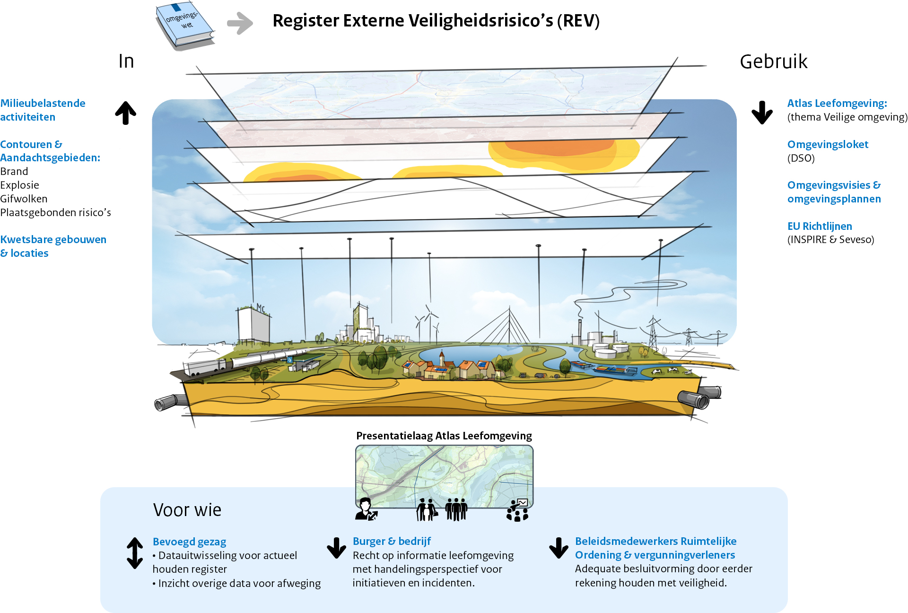
Figuur 1Schematisch overzicht van het REV. Open afbeelding in een nieuw tabblad om de afbeelding groter te zien.
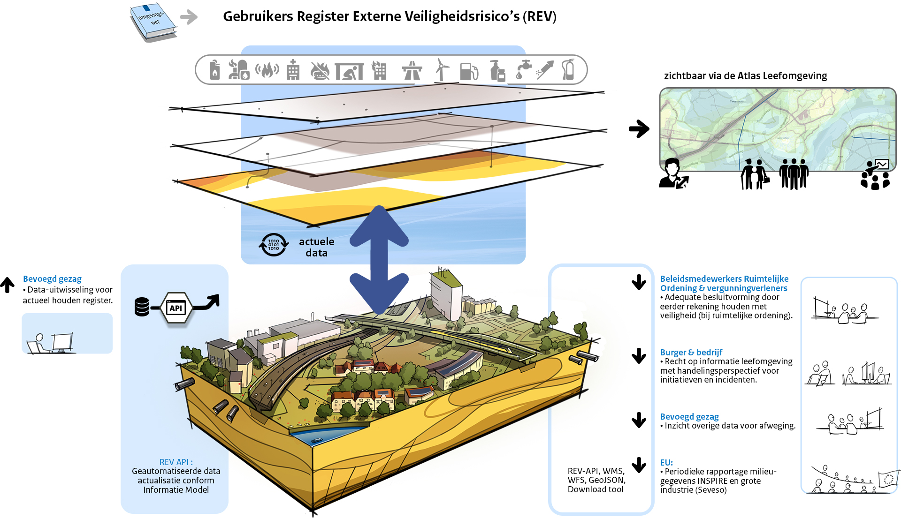
Figuur 2Gebruikers van het REV. Open afbeelding in een nieuw tabblad om de afbeelding groter te zien.
Bronhouders zoals gemeenten, provincies of omgevingsdiensten (gedelegeerd bronhouder) die informatie over externe veiligheidsrisico’s beheren, leveren hun informatie rechtstreeks aan het REV via een datakoppeling conform een REST API of via het aanleverportaal.
Bronhouders dienen geregistreerd te staan in het REV en kunnen alleen hun eigen informatie aanleveren en muteren.
Het REV stelt ook kaartinformatie via een WMS beschikbaar die zonder registratie te raadplegen is door publieke gebruikers. Op de kaarten wordt getoond waar externe risico’s van toepassing zijn.
Deze kaartinformatie is ook beschikbaar in externe viewers zoals de Atlas Leefomgeving.
Binnen het REV worden activiteiten uitgevoerd door stakeholders vanuit verschillende rollen. Deze rollen staan omschreven in de volgende Tabel 1.
Naam van rol
Omschrijving
Afnemers of gebruikers
Iedereen die gebruik maakt van (de gegevens in) het REV, bijvoorbeeld burgers of bedrijven. In de wet omschreven als “eenieder”.
Bevoegd gezag
Het bestuursorgaan dat bevoegd is omtrent het nemen van besluiten of beschikkingen af te geven.
Bronhouders
De formele bestuursorganen die belast zijn met het verzamelen van de informatie worden de bronhouders genoemd. In een aantal gevallen worden de gegevens beheerd door anderen. Voor hen wordt de term “gedelegeerd” bronhouder gebruikt. Dat kunnen bijvoorbeeld de omgevingsdiensten zijn die het uitvoerend werk ten behoeve van gemeenten en provincies verrichten. De buisleidingexploitanten beheren de data en leveren de data aan het REV namens de Minister van Infrastructuur en Waterstaat. De bronhouders onderverdeeld naar verschillende bestuursorganen worden in een andere tabel nog apart benoemd.
Initiatiefnemers (bedrijven, professionals)
Partijen die de informatie in het REV gebruiken voor het maken van ontwikkelingsplannen, via geautomatiseerde systemen of interactief (viewers).
Ontwikkelaars
Partijen die specifiek de technische (digitale) loketfunctionaliteit gebruiken om informatie uit REV op een specifieke wijze te ontsluiten (bijvoorbeeld app-bouwers).
Opdrachtgever/eigenaar
Opdrachtgever voor het beheer het beheer van het Register Externe Veiligheidsrisico’s en van het Informatiemodel Externe Veiligheid is het Ministerie van Infrastructuur en Waterstaat.
Opdrachtnemer
Rijkswaterstaat als opdrachtnemer voor het beheer van het REV en Geonovum als opdrachtnemer voor het beheer van het IMEV.
De benoemde stakeholders van het REV zijn opgenomen in de volgende Tabel 2.
Stakeholder
Omschrijving
Rol
Ministerie van Infrastructuur en Waterstaat (IenW) dg Milieu en Internationaal
Volgens de Omgevingswet de eigenaar van het REV en daarmee opdrachtgever voor het beheer van het REV. Ook is IenW opdrachtgever voor het beheer van het IMEV. Daarnaast is IenW bronhouder voor bepaalde landsdekkende gegevens (bijvoorbeeld Basisnet: spoor, wegen, water, buisleidingen).
Opdrachtgever/ eigenaar/ bronhouder
DGMI, directie O&M.
Beleidsverantwoordelijk en gemandateerd opdrachtgever.
Opdrachtgever
Omgevingsdiensten (OD’s)
In opdracht van gemeenten en provincies voeren omgevingsdiensten taken uit op het gebied van gegevensverzameling en -verstrekking. OD’s treden op in de rol van bronhouder.
Bronhouder
Rijkswaterstaat (RWS)
Bronhouder in het kader van een aantal milieubelastende activiteiten met veiligheidsrisico's. RWS is ook beheerder van het REV.
Bronhouder/ opdrachtnemer
Geonovum
Geonovum beheert het Informatiemodel Externe Veiligheid (IMEV). Dit doet zij in opdracht van het Ministerie van Infrastructuur en Waterstaat.
Opdrachtnemer
ProRail
Bronhouder t.b.v. Basisnet-spoor.
Bronhouder
Gemeenten (soms via Omgevingsdiensten, afhankelijk van wettelijke taken)
Gemeenten kunnen zowel de rol van bronhouder als bevoegd gezag (afnemer) vervullen in kader van het REV. Een functie van het REV is het bieden van informatie aan gemeenten bij het opstellen van besluiten, hun vergunning- of meldingentrajecten en bij het opstellen van omgevingsplannen.
Bronhouder/ bevoegd gezag
Provincies (soms via Omgevingsdiensten)
Provincies kunnen zowel de rol van bronhouder als bevoegd gezag vervullen, vergelijkbaar met gemeenten.
Bronhouder/ bevoegd gezag
Ministerie van Economische Zaken en Klimaat (EZK)
Bronhouder mijnbouwwerken.
Bronhouder
Ministerie van Defensie
Een van de bronhouders voor buisleidingen.
Bronhouder
Autoriteit Nucleaire Veiligheid en Stralingsbescherming
De Autoriteit Nucleaire Veiligheid en Stralingsbescherming (ANVS) ziet erop toe dat de nucleaire veiligheid en stralingsbescherming in Nederland voldoen aan de hoogste eisen.
Bronhouder/ bevoegd gezag
Buisleiding exploitant
Overige beheerders van buisleidingstelsels (bijvoorbeeld de Gasunie).
Bronhouder
4.2.2.3 Milieubelastende activiteiten
Voor de verschillende milieubelastende activiteiten (MBA's) met veiligheidsrisico’s is in de artikelen en bijlagen van het Bkl beschreven welke gegevens moeten worden verzameld.
Voor dit type MBA's is het IMEV opgesteld dat in het REV is vertaald naar een datamodel. Voor elke milieubelastende activiteit met veiligheidsrisico’s is in het IMEV een beschrijving door middel van een UML-diagram opgenomen.
Daarnaast zijn in het IMEV twee specifieke activiteiten opgenomen: (toegelaten) kwetsbare gebouwen en locaties (ook wel KGL genoemd) en aandachtsgebieden voor externe veiligheidsrisico’s.
De milieubelastende activiteiten uit het Bkl hebben invloed op de plaatsing van kwetsbare gebouwen en locaties. Dit zijn gebouwen en locaties die op basis van aard of gebruik extra kwetsbaar zijn voor een of meer van de externe veiligheidsrisico’s zoals brand, explosie of gifwolken.
Daarnaast, heeft de aanwezigheid van kwetsbare gebouwen en locaties ook weer invloed op EV-beleid in de leefomgeving.
Zo maakt het bijvoorbeeld voor een vergunningsaanvraag of voor een melding van een activiteit met externe veiligheidsrisico's uit of er kwetsbare gebouwen of locaties in de buurt zijn.
4.2.2.4 Over het Informatiemodel Externe Veiligheid
Om betekenisvolle en uniforme uitwisseling van gegevens over externe veiligheid mogelijk te maken, heeft het Ministerie van Infrastructuur en Waterstaat in aanloop naar het inwerkingtreden van de Omgevingswet in samenwerking met Antea Group en Rijkswaterstaat het informatiemodel Externe veiligheid ontwikkeld. Vervolgens is het IMEV overgedragen aan en in beheer genomen door Geonovum.
Het IMEV is gemodelleerd conform de specificaties van het Metamodel Informatie Modellering (MIM).
Voor de uitleg van betekenis van entiteiten binnen het informatiemodel wordt verwezen naar MIM hoofdstuk 2: Metamodel Algemeen. MIM is een laag (metamodel) gebouwd boven op de Unified Modelling Language (UML). Het MIM bouwt voort op UML-klassendiagrammen. UML-klassendiagrammen dienen als een soort bouwtekening voor digitale gegevensuitwisseling.
Het MIM bevat de bouwblokken die ervoor zorgen dat al deze bouwtekeningen op een standaard manier kunnen worden opgesteld.
Op het moment wordt het MIM al breed gedragen binnen de Nederlandse publieke sector.
Het logische model van het IMEV kan met de juiste transformatieregels automatisch omgezet worden tot een technisch applicatieschema dat interpreteerbaar is door machines.
Het IMEV conformeert zich aan het Basismodel Geo-informatie (NEN 3610). De modelleerregels van NEN 3610 zijn toegepast en er wordt aangesloten op het semantische basismodel van NEN 3610. IMEV sluit hiermee aan op het stelsel van geo-informatiemodellen dat gevormd wordt door de NEN 3610 afstemming.
Om technische en informatiekundige redenen, zijn in het informatiemodel MBA’s samengevoegd of juist gesplitst. De MBA’s hebben elk een apart diagram binnen het informatiemodel.
Deze diagrammen staan formeel beschreven in hoofdstuk 6: Gegevensdefinitie.
4.2.2.5 Aanleveren van EV gegevens conform IMEV aan het REV
De technische specificaties van de door bronhouders aan het REV te leveren EV-gegevens conform IMEV, worden beschreven in Hoofdstuk 12: Levering.
4.2.2.6 Ontsluiting en publicatie van EV gegevens conform IMEV
Bronhouders leveren data aan bij het REV met behulp van de REV-API. De gegevens kunnen vervolgens worden ingezien via bijvoorbeeld de Atlas Leefomgeving en door gebruikers worden opgevraagd via een API.
Het Digitaal Stelsel Omgevingswet vraagt vooral om ontsluiting van de data zelf en niet om kaartmateriaal. Daartoe, maar ook voor gebruik door andere toepassingen, worden de gegevens uit het REV ontsloten via een API.
4.2.2.7 IMEV en gegevenskwaliteit
Het IMEV bepaalt niet hoe de wet moet worden toegepast, maar omschrijft alleen een structuur waarin de EV-gegevens voor het REV moeten passen.
Het blijft de verantwoordelijkheid van de bronhouder dat deze juridisch correct zijn. Het IMEV zorgt ervoor dat alle juridisch correcte informatie binnen het model past.
Als onderdeel van het aansluiten van bronhouders, biedt het REV een aantal regels (zgn. constraints) waarop de gegevens gevalideerd kunnen worden.
Naast de technische validatie waarin de aangeleverde bestanden en berichten worden gecontroleerd op technische correctheid (syntax, en structuur), kan in het REV een validatie plaatsvinden op basis van diverse extra criteria voor het waarborgen van gegevenskwaliteit.
Om na aanlevering aan het REV te kunnen verifiëren of de gegevens correct zijn opgenomen, kan de bronhouder dit in de kaartviewer controleren.
Via o.a. de Atlas Leefomgeving worden de kaarten openbaar gemaakt. Iedereen die onrechtmatigheden ziet op deze kaarten kan deze melden.
De meldingen worden doorgeleid naar de bronhouder.
Dit is de locatie begrensd door de afstand, waar als gevolg van een ongewoon voorval een brand- explosie- of gifwolk met een extern veiligheidsrisico kan plaatsvinden (artikel 5.12 Bkl).
Attribuut
Kenmerk van een object.
Attribuutwaarde
Waarde die een attribuut aanneemt.
Coördinaat
Getal in een sequentie van twee of drie getallen om de positie van een punt in een twee of drie dimensionale ruimte te bepalen.
Coördinaatreferentiesysteem
De wijze waarop geo-informatie gekoppeld wordt aan een locatie op aarde. Het IMEV gebruikt het stelsel van de Rijksdriehoeksmeting (RD). Dit is het nationale coördinaatreferentiesysteem en bevat alleen coördinaten in Nederland.
Datatype
Een beschrijving van de structuur waaraan een waarde, oftewel de data zelf, aan moet voldoen.
Diepte
Afstand van een punt tot een gekozen referentievlak neerwaarts gemeten langs een lijn welke loodrecht op dat referentievlak staat.
Domeinmodel
Formele definitie van een subset van objecten, attributen, relaties en regels in een bepaald domein.
Geo-informatie
Informatie met een directe of indirecte referentie naar een plaats ten opzichte van de aarde (bijvoorbeeld ten opzichte van het aardoppervlak). Geo-informatie is synoniem aan geografische informatie.
Geo-object
Abstractie van een fenomeen in de werkelijkheid dat direct of indirect is geassocieerd met een locatie relatief ten opzichte van de aarde. (bijvoorbeeld ten opzichte van het aardoppervlak)
Georeferentie
Locatie van een ruimtelijk object vastgelegd in een ruimtelijk referentiesysteem.
Informatiemodel
Formele definitie van objecten, attributen, relaties en regels in een bepaald domein. Domeinmodel is in dit verband: een kennisgebied of activiteit gekarakteriseerd door een verzameling van concepten en begrippen.
Instantie
Benoemd, identificeerbaar object uit een objecttype.
JSON
JavaScript Object Notation is een fileformaat dat veel gebruikt wordt voor het uitwisselen van data door web-ontwikkelaars en voor API's. De structuur wordt vastgelegd in een JSON-schema.
Label
Tekst of getal dat een eigenschap omschrijft of kwantificeert en als annotatie op een kaartbeeld wordt afgebeeld.
Namespace
Collectie van namen die in XML of JSON-documenten gebruikt worden als objecttype- en attribuutsoortnamen Een namespace wordt geïdentificeerd door een URI.
Object
Een object is een onderscheidbaar iets in het beschouwde domein.
PR-contour
Plaatsgebonden risico contour dat wordt bepaald door de kans op het overlijden van een onbeschermd en continu aanwezig persoon buiten de begrenzing van de locatie waar een activiteit wordt verricht als rechtstreeks gevolg van een ongewoon voorval veroorzaakt door die activiteit.
Register
Op nationaal niveau geïdentificeerde en erkende gegevensverzameling.
Relatie
Semantische relatie tussen twee of meer objecten die samenhang tussen hun instanties weergeeft.
Representatie
Inhoudelijk vastleggen van de werkelijkheid. Het informatiemodel is een representatie van de werkelijkheid.
Bestand dat de structuur van de data beschrijft op een machine leesbare wijze. Het wordt gebruikt door applicatieontwikkelaars en kan afgeleid worden van het informatiemodel. Naast dit modeldocument stelt Geonovum het JSON-schema voor IMEV beschikbaar.
Waardelijst
Lijst van waarden waaruit door de bronhouder gekozen kan worden voor het invoeren van gegevens in het Register Externe Veiligheidsrisico’s.
Werkelijkheid
Beeld van de echte of hypothetische wereld die alles van belang omvat.
4.5 Symbolen en afkortingen
Lijst van afkortingen en acroniemen die worden gehanteerd in dit informatiemodel.
Afkorting
Betekenis
Bal
Besluit activiteiten leefomgeving
Bkl
Besluit kwaliteit leefomgeving
DSO
Digitaal Stelsel Omgevingswet
IenW
Ministerie van Infrastructuur en Waterstaat
IMEV
Informatiemodel Externe veiligheid
MBA
Milieubelastende Activiteit
MIM
Metamodel Informatiemodellering
REV
Register Externe Veiligheidsrisico’s
RWS
Rijkswaterstaat
5. Uitgangspunten IMEV model
Dit hoofdstuk beschrijft de uitgangspunten voor het Informatiemodel Externe Veiligheid (IMEV).
5.1 Algemene uitgangspunten
Bij het beheer en de doorontwikkeling van het IMEV worden de volgende uitgangspunten gehanteerd:
IMEV is gemodelleerd als logisch model volgens het Metamodel Informatie Modellering (MIM). Een logisch model is daarin een model dat alle informatie bevat die nodig is voor een toepassing in een digitale omgeving.
Een logisch model bevat alle informatie die nodig is om model gedreven (MDA) specificaties voor toepassing te kunnen genereren.
Een logisch model is opgesteld onafhankelijk van specifieke toepassingsformaten of applicatieplatforms.
In een logisch model is de naamgeving van termen in het model hoofdlettergevoelig en zijn spaties niet toegestaan.
Termen in het model zijn gekoppeld aan begrippen in een begrippenkader.
Het juridisch kader gevormd door het Besluit kwaliteit leefomgeving en de weerslag daarvan in het Register Externe Veiligheidsrisico's is leidend voor de inhoud van IMEV.
IMEV bevat locatie-gebonden-informatie en conformeert aan NEN 3610, het Basismodel voor Geo-informatie.
De structuur van het IMEV wordt bepaald door de in het Besluit kwaliteit leefomgeving opgenomen activiteiten waarbij een PR-contour of een aandachtsgebied van toepassing kan zijn.
5.2 UML diagrammen
Voor het UML-klassendiagram wordt het profiel gebruikt van MIM en NEN 3610. De volgende stereotypen worden daarin gebruikt met een uitbreiding voor IMEV.
Stereotype
Definitie
Attribuutsoort
De typering van gelijksoortige gegevens die voor een objecttype van toepassing is.
BAG
Een gegeven uit de Basisregistratie Adressen en Gebouwen.
Codelijst
De representatie van een lijst met een opsomming van de mogelijke domeinwaarden van een attribuutsoort, die buiten het model in een externe waardelijst worden beheerd. De domeinwaarden in de lijst kunnen in de loop van de tijd aangepast, uitgebreid, of verwijderd worden, zonder dat het informatiemodel aangepast wordt (in tegenstelling tot bij een enumeratie). De representatie bevat geen kenmerken, voor alle kenmerken wordt verwezen naar de specificatie van de externe waardelijst.
Data element
Een onderdeel/element van een Gestructureerd datatype dat als type een datatype heeft.
Enumeratie
Een datatype waarvan de mogelijke waarden limitatief zijn opgesomd in een statische lijst.
Enumeratiewaarde
Een gedefinieerde waarde, in de vorm van een eenmalig vastgesteld constant gegeven.
Exploitant
Een gegeven over de exploitant.
Externe koppeling
Een associatie waarmee vanuit het perspectief van het eigen informatiemodel een objecttype uit het ‘eigen’ informatiemodel gekoppeld wordt aan een objecttype van een extern informatiemodel. De relatie zelf hoort bij het ‘eigen’ objecttype.
Formele historie
Formele historie beschrijft veranderingen van eigenschappen van een object in de registratie.
Gegevensgroep
Een typering van een groep van gelijksoortige gegevens die voor een objecttype van toepassing is.
Gegevensgroeptype
Een groep van met elkaar samenhangende attribuutsoorten. Een gegevensgroeptype is altijd een type van een gegevensgroep.
Generalisatie
De typering van het hiërarchische verband tussen een meer generiek en een meer specifiek modelelement van hetzelfde soort, waarbij het meer specifieke modelelement eigenschappen van het meer generieke modelelement overerft. Dit verband is alleen gedefinieerd voor objecttypen en datatypen.
Gestructureerd datatype
Specifiek benoemd datatype dat de structuur van een gegeven beschrijft, samengesteld uit minimaal twee elementen die in samenhang betekenisvol zijn.
HR
Een gegeven uit het Handelregister.
Keuze
Een opsomming van meerdere modelelementen, waarbij er maar van één tegelijkertijd sprake kan zijn.
Materiële historie
Materiële historie beschrijft veranderingen van eigenschappen van een object in de werkelijkheid.
Objecttype
De typering van een groep objecten die binnen een domein relevant zijn en als gelijksoortig worden beschouwd.
Primitief datatype
Een in het eigen model gedefinieerd datatype dat gebaseerd is op een PrimitiveType, met een eigen naam en definitie.
Referentie element
Een eigenschap van een object in een referentielijst in de vorm van een gegeven.
Referentielijst
De representatie van een lijst met een opsomming van de mogelijke domeinwaarden van een attribuutsoort, die buiten het model in een externe waardelijst worden beheerd. De domeinwaarden in de lijst kunnen in de loop van de tijd aangepast, uitgebreid, of verwijderd worden, zonder dat het informatiemodel aangepast wordt (in tegenstelling tot bij een enumeratie). De representatie bevat een aantal kenmerken, die overgenomen zijn van de specificatie van de externe waardelijst.
Relatieklasse
Een relatiesoort met eigenschappen.
Relatierol
De benaming van de manier waarop een object deelneemt aan een relatie met een ander object.
Relatiesoort
De typering van het structurele verband tussen een object van een objecttype en een (ander) object van een ander (of hetzelfde) objecttype.
In de UML-diagrammen van het logische model zijn de termen hoofdletter-gevoelig en bevatten geen spaties.
Deze schrijfwijze wordt ook in de beschrijving van het model gebruikt als er aan termen wordt gerefereerd.
De termen en hun definities zijn opgenomen in de objectcatalogus van dit modeldocument. Voor de definities van de termen wordt dan ook naar deze objectcatalogus in dit informatiemodel gerefereerd.
In de UML-diagrammen zijn de objecttypen aan te klikken en komt de lezer door middel van de deeplink terecht bij de beschrijving zoals opgenomen in de objectcatalogus.
Voor het inzoomen in de UML-diagrammen kan het best het diagram in een apart tabblad van de webbrowser worden geopend. Afhankelijk van het type browser is dit meestal via een rechtermuisklik en 'open in nieuw tabblad'.
In het volgende hoofdstuk zijn de UML-diagrammen van het IMEV opgenomen.
De eerste twee diagrammen zijn algemeen en bevatten de gegevens die voor alle milieubelastende activiteiten met externe veiligheidsrisico's van toepassing zijn.
De paragrafen daarna behandelen elk een specifieke activiteit uit het Bkl die gerelateerd is aan gegevens met betrekking tot deze milieubelastende activiteiten.
De naamgeving van die paragrafen en diagrammen verwijst naar de Bkl-activiteit en het artikel of bijlage waarin die gedefinieerd is.
6. Gegevensdefinitie
6.1 Domein IMEV-basis
6.1.1 Basismodel: kern - overzicht
Figuur 3 ‒ Diagram: Basismodel: kern
De kern van IMEV bestaat uit 5 objecttypen:
LocatieEVActiviteit: Locatie waar de activiteit met externe veiligheidsrisico’s wordt verricht.
EVActiviteit: Activiteit met externe veiligheidsrisico’s.
ReferentieEVContour: Referentie voor het bepalen van de ligging van een EVContour.
EVContour: Contour van externe veiligheidsrisico’s vanaf het punt of vlak van de ReferentieEVContour.
GebouwOfLocatie: Een gebouw of locatie die kan worden beïnvloed door de aanwezigheid van een EVcontour.
Deze 5 objecttypen hebben een relatie tot elkaar die de basis vormt voor alle onderdelen van het IMEV informatiemodel.
Het model is als volgt te lezen:
Op een LocatieEVActiviteit worden één of meer EVActiviteiten uitgevoerd. Elk type EVActiviteit heeft één of meer ReferentieEVContouren. Op basis van deze ReferentieEVContouren kunnen de EVcontouren van het plaatsgebonden risico of het aandachtsgebied worden bepaald. De EVContour kan gebruikt worden om (toegelaten) kwetsbare locaties en gebouwen te bepalen die binnen de EVContour vallen.
De relaties tussen de objecttypen zijn over het algemeen meervoudig. Bijvoorbeeld op 1 LocatieEVActiviteit kunnen 1 of meerdere (1..*) EVActiviteiten worden uitgevoerd. 1 EVActiviteit heeft vervolgens 1 of meerdere ReferentieEVContouren enz.
De rationale achter dit model is de volgende:
De structuur van het model wordt bepaald door de in het Besluit kwaliteit leefomgeving (Bkl) opgenomen activiteiten met externe veiligheidsrisico’s. Zie bijvoorbeeld in het Bkl, bijlage VII. Dit is een uitgebreide lijst en voorbeelden daarvan zijn: tanken van LPG, opslaan van gevaarlijke stoffen, vervoer gevaarlijke stoffen, windturbines. Deze activiteiten vallen in het model onder het objecttype EVActiviteit. Elke type activiteit heeft specifieke eigenschappen en is als specialisatie van EVActiviteit opgenomen. In de uitwerking van het model is elke specialisatie van EVActiviteit als een apart diagram opgenomen.
Een EVActiviteit wordt uitgevoerd op een locatie. Of andersom, op een locatie wordt een EVActiviteit uitgevoerd. Bijvoorbeeld een tankstation bevindt zich op een locatie, of een bedrijf voor opslag van gas bevindt zich op een locatie, of een locatie heeft een transportleiding voor aardgas. Deze objecten en hun eigenschappen vallen onder het objecttype LocatieActiviteit. Het is de locatie waar een activiteit met een gerelateerd extern risico wordt verricht of uitgevoerd. In het model is er de relatie tussen LocatieActiviteit en EVActiviteit. Dus een locatie is gerelateerd aan een type EVActiviteit. Via het kenmerk 'voertUit' wordt deze relatie benoemd. Een locatieEVActiviteit voert een EVActiviteit uit.
Het kan voorkomen dat er binnen een locatie meerdere EVActiviteiten worden uitgevoerd. Er zijn dan vanuit 1 locatie meerdere verwijzingen naar verschillende EVActiviteiten. Het kan ook zijn dat er binnen 1 locatie binnen 1 EVActiviteit meerdere specifieke voorkomens van die EVActiviteit nodig zijn. Bijvoorbeeld als er verschillende typen blusinstallaties zijn gespecificeerd. Ook in dat geval is er een koppeling met meerdere voorkomens van EVActiviteit.
Het Bkl benoemt de EVActiviteiten waarbij een extern risico van toepassing is. Bij elk van die activiteiten zijn er in het Bkl specifieke referentiegegevens benoemd die van toepassing zijn om een contour voor een extern veiligheidsrisico te bepalen. Deze referentiegegevens, ingevuld voor een specifieke LocatieEVActiviteit zijn opgenomen in het objecttype ReferentieEVContour. Deze referentiegegevens omvatten onder andere de benoeming en locatie van de bij de activiteit behorende onderdelen die bepalend zijn voor de exacte locatie waarvandaan de externe veiligheidscontour kan worden bepaald. Voorbeelden van deze bepalende onderdelen zijn installatie, aftappunt, vulpunt, leiding, opstelplaats. Van deze onderdelen wordt de locatie opgenomen. Via het kenmerk ‘heeft’ wordt een ReferentieEVContour gekoppeld aan een EVactiviteit. Een EVactiviteit ‘heeft’ daarmee een ReferentieEVContour.
De contour van het gebied waaraan een extern veiligheidsrisico is gerelateerd is wordt gerepresenteerd door het objecttype EVContour. De contour wordt berekend of vastgesteld op basis van de informatie van een object ReferentieEVContour en de gegevens van de bijbehorende EVactiviteit. De EVContouren zijn onderverdeeld in een aantal typen. Voorbeelden daarvan zijn aandachtsgebied en risicocontour (ofwel plaatsgebonden risico). Via het kenmerk ‘resulteertIn’ wordt een ReferentieEVContour gekoppeld aan een EVContour. Een ReferentieEVContour resulteert in een EVContour.
Op basis van de locatie van EVContouren kunnen specifieke gebouwen of locaties geïdentificeerd worden met een bepaalde kwetsbaarheid die zich binnen de EVContour bevinden. Denk aan scholen, ziekenhuizen of algemeen locaties met veel mensen. Het objecttype GebouwOfLocatie representeert deze groep objecten. De relatie tussen een EVContour en de gebouwen of locaties met een kwetsbaarheidsindicatie wordt gelegd op basis van geometrie van de EVContour en de gebouwen of locaties.
Het bovenstaande verhaal en informatiemodel kan in een zin op de volgende manier worden gelezen: Een LocatieEVActiviteit voert een EVActiviteit uit; een EVActiviteit heeft een ReferentieEVContour die resulteert in een EVContour; de EVContour beinvloedt gebouwen of locaties met een kwetsbaarheidsindicatie.
6.1.2 Basismodel: kern plus top - overzicht
Figuur 4 ‒ Diagram: Basismodel: kern plus top
Het topmodel van IMEV bestaat uit de superklasse ExterneVeiligheidsobject samen met de objectypen die de kern van het model vormen.
Bij het objectttype ExterneVeiligheidsobject zijn de basiseigenschappen opgenomen die voor alle onderliggende objecttypen gelden. De objecten hebben een attribuut identificatie conform NEN 3610, er is een verplichte opname van de bronhoudercode, de identificatiecode voor de verantwoordelijke instantie op het gebied van vergunningverlening en handhaving en er is optioneel een mogelijkheid om een link naar een document op te nemen.
Daarnaast zijn er NEN 3610-attributen voor het opnemen van temporele kenmerken. De materiele historie modelleert de momenten van veranderingen van eigenschappen in de werkelijkheid: beginGeldigheid. De formele historie de momenten van verandering van waarden in de administratie: tijdstipRegistratie. Het onderscheid hierin wordt gemaakt omdat een verandering in de werkelijkheid in de regel niet gelijktijdig leidt tot een aanpassing in een registratie. Van belang is dat met de registratie hier het REV wordt bedoeld. Het is dus het REV dat de tijdstippen voor tijdstipRegistratie en (optioneel) eindRegistratie gaat invullen.
De enumeratie VoidReasonValue bevat de waarden die ingevuld kunnen worden bij de eigenschappen waar in het model «voidable» is opgenomen. In dit diagram is dat bij de relatie 'resulteertIn' tussen ReferentieEVContour en EVContour. Voidable betekent dat de waarde leeg gelaten kan worden en dat er als reden een waarde uit de enumeratie VoidReasonValue ingevuld moet worden.
Adressen met BAGid.
In het IMEV model zijn op verschillende plaatsen adressen opgenomen. Deze worden in de uitwisseling niet uitgeschreven maar zijn opgenomen door te verwijzen naar het BAGid van het BAG-object Nummeraanduiding.
6.1.3 IMEV - EVActiviteit - detail
Figuur 5 ‒ Diagram: IMEV - EVActiviteit
Bij dit UML diagram is de BKLActiviteit alleen opgenomen om te laten zien wat er specifiek opgenomen is voor de eventuele geheimhouding. Dit geldt ook voor onderliggende diagrammen, maar is daarin niet opgenomen om redenen van overzichtelijkheid.
Voor de geheimhouding is bij elk ExterneVeiligheidObject het attribuut "informatieGeheim" opgenomen dat aangeeft of het object geheim is. Wanneer er een object geheim is binnen een EVActiviteit, staat dit attribuut voor alle onderliggende objecten die onder betreffende EVActiviteit (MBA) vallen ook op geheim = True.
Dus ook de referentieEVContouren en de EVContouren, maar niet persé de LocatieEVactiviteit, omdat die zelf ook meerdere EVActiviteiten (MBA's) kan bevatten die niet allemaal geheim hoeven te zijn.
Daarom is alleen bij het subtype BKLActiviteit het attribuut "grondslagInfo" opgenomen. Dit bevat een gestructureerd datatype ("Grondslag") met informatie over wat de grondslag is voor de geheimhouding. Daarin zit o.a. ook het attribuut "grondslagType" dat een waarde moet hebben uit de enumeratie "GrondslagGeheimhouding".
6.1.4 IMEV - EVContour - detail
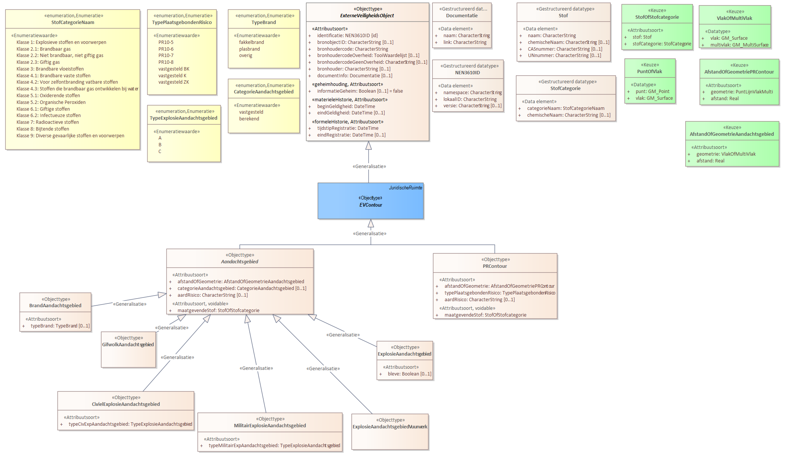
Figuur 6 ‒ Diagram: IMEV - EVContour
Dit diagram geeft aan welke subtypne van EVContour voor kunnen komen.
6.1.5 VII-A.1 Behandelen, regelen en meten van aardgas - detail
Figuur 7 ‒ Diagram: VII-A.1 Behandelen, regelen en meten van aardgas
Bij dit eerste UML diagram voor een specifieke activiteit is de toelichting uitgebreid ingevuld. De andere diagrammen volgen dezelfde logica en zijn daarom summier toegelicht.
Voor de beschrijving van de EVActiviteit is er een objecttype BehandelenRegelenMetenAardgas_VasteAfstandGeenVergunningplicht met daarbij opgenomen de kenmerken:
OntwerpCapaciteit
werkdruk
opstellingsUitvoering
Voor de ReferentieEVContour zijn van belang de locatie van:
Installatie
SamengesteldeReferentie
Voor de EVContour zijn de volgende typen gedefinieerd:
PRContour
Het objecttype LocatieActiviteit is de verbijzondering van LocatieEVActiviteit en bevat de gegevens van de locatie waarop een activiteit wordt uitgevoerd met onder andere het adres, bedrijfsnaam, eigenaar, exploitantgegevens en de coördinaten van de locatie.
Het objecttype BehandelenRegelenMetenAardgas_VasteAfstandGeenVergunningplicht bevat de specifieke informatie voor het bepalen van de EVContour voor deze activiteit.
SamengesteldeReferentie en Installatie zijn de referentiecontouren die bij deze activiteit horen. Het objecttype SamengesteldeReferentie wordt gebruikt als een EVContour gebaseerd is op meerdere ReferentieEVContouren en deze niet individueel zijn opgenomen. Tevens van toepassing als er wel een EVContour is maar niet de exacte referenties waar deze op vastgesteld/berekend is. De SamengesteldeReferentie vervangt dan de exacte referentiegegevens.
Merk op dat bij een aantal attributen een stereotype «voidable» is opgenomen. Bij deze attributen hoeft onder specifieke condities geen waarde te worden ingevuld. Er moet dan wel aangegeven worden waarom er niets is ingevuld. De enumeratie VoidReasonValue omvat de lijst van mogelijke redenen.
6.1.6 VII-A.1a Tanken van LPG - detail
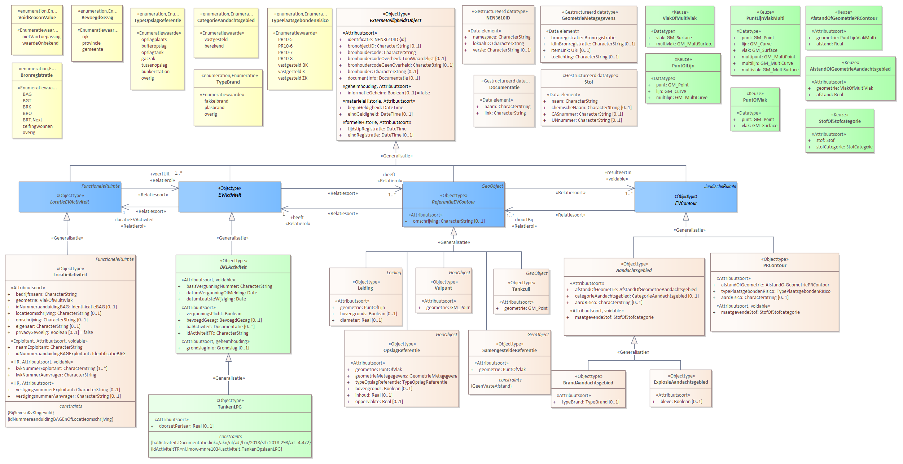
Figuur 8 ‒ Diagram: VII-A.1a Tanken van LPG
Voor de beschrijving van de EVActiviteit is er een objecttype TankenLPG met daarbij opgenomen het kenmerk doorzetPerJaar.
Voor de ReferentieEVContour zijn van belang de locatie van:
Leiding
Vulpunt
Tankzuil
OpslagReferentie
SamengesteldeReferentie
Voor de EVContour zijn de volgende typen gedefinieerd:
BrandAandachtsgebied
ExplosieAandachtsgebied
PRContour
6.1.7 VII-A.2 Tanken van CNG - detail
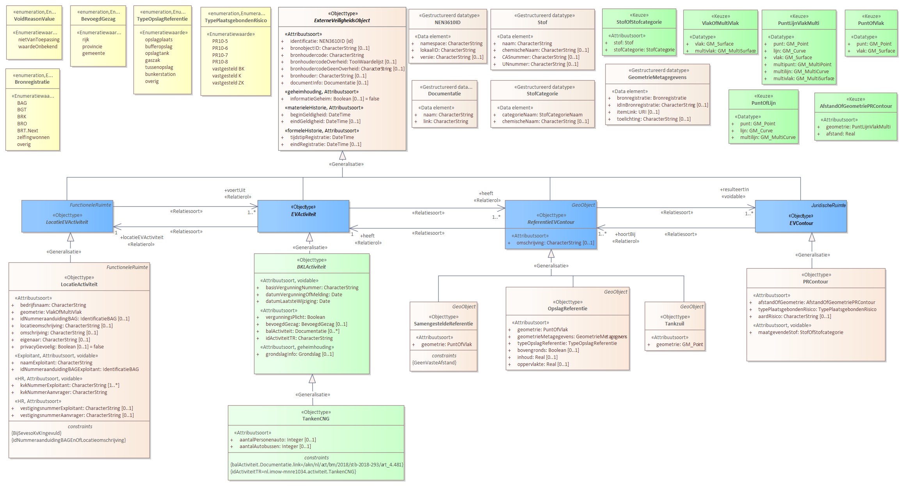
Figuur 9 ‒ Diagram: VII-A.2 Tanken van CNG
Voor de beschrijving van de EVActiviteit is er een objecttype TankenCNG met daarbij opgenomen de kenmerken aantalPersonenauto en aantalAutobussen.
Voor de ReferentieEVContour zijn van belang de locatie:
Tankzuil
OpslagReferentie
SamengesteldeReferentie
Voor de EVContour zijn de volgende typen gedefinieerd:
PRContour
6.1.8 VII-A.3 Opslaan van brandstoffen in bunkerstations - detail
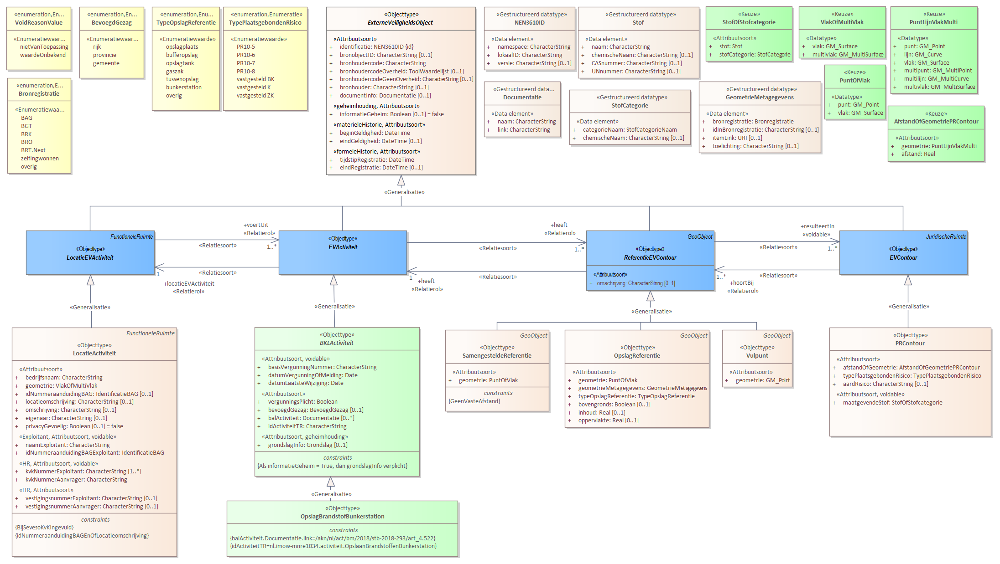
Figuur 10 ‒ Diagram: VII-A.3 Opslaan van brandstoffen in bunkerstations
Voor de beschrijving van de EVActiviteit is er een objecttype OpslagBrandstofBunkerstation.
Voor de ReferentieEVContour zijn van belang de locatie:
Vulpunt
OpslagReferentie
SamengesteldeReferentie
Voor de EVContour zijn de volgende typen gedefinieerd:
PRContour
6.1.9 VII-A.4 Kleinschalig tanken van vaartuigen of drijvende werktuigen met brandstoffen - detail
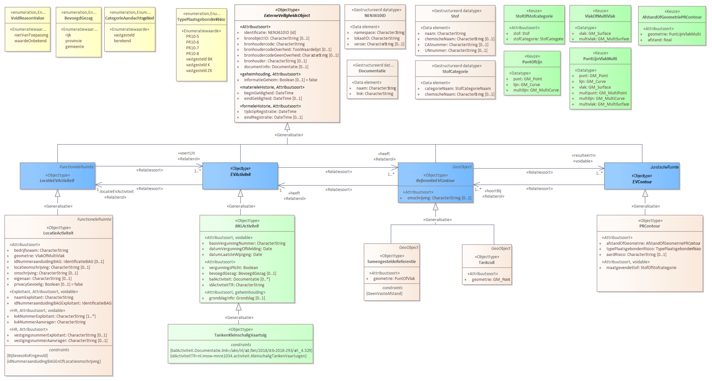
Figuur 11 ‒ Diagram: VII-A.4 Kleinschalig tanken van vaartuigen of drijvende werktuigen met brandstoffen
Voor de beschrijving van de EVActiviteit is er een objecttype TankenKleinschaligVaartuig.
Voor de ReferentieEVContour zijn van belang de locatie:
Tankzuil
SamengesteldeReferentie
Voor de EVContour zijn de volgende typen gedefinieerd:
PRContour
6.1.10 VII-A.5 Grootschalig tanken van vaartuigen of drijvende werktuigen met brandstoffen - detail
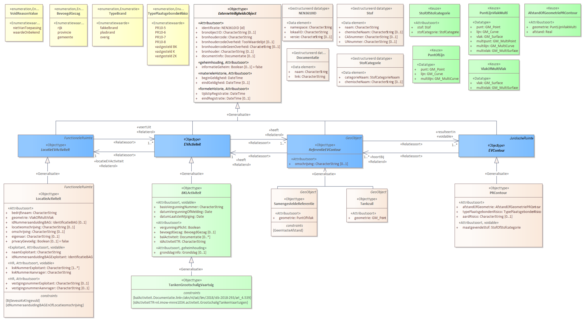
Figuur 12 ‒ Diagram: VII-A.5 Grootschalig tanken van vaartuigen of drijvende werktuigen met brandstoffen
Voor de beschrijving van de EVActiviteit is er een objecttype TankenGrootschaligVaartuig.
Voor de ReferentieEVContour zijn van belang de locatie:
Tankzuil
SamengesteldeReferentie
Voor de EVContour zijn de volgende typen gedefinieerd:
Figuur 13 ‒ Diagram: VII-A.6 Mestvergistingsinstallatie
Voor de beschrijving van de EVActiviteit is er een objecttype Mestvergisting.
Voor de ReferentieEVContour zijn van belang de locatie:
AftappuntOpslagtank
OpslagReferentie
SamengesteldeReferentie
Voor de EVContour zijn de volgende typen gedefinieerd:
PRContour
6.1.12 VII-A.7 Opslaan van propaan of propeen in opslagtanks - detail
Figuur 14 ‒ Diagram: VII-A.7 Opslaan van propaan of propeen in opslagtanks
Voor de beschrijving van de EVActiviteit is er een objecttype OpslagtankPropaanPropeen_VasteAfstandGeenVergunningplicht met daarbij opgenomen het kenmerk aantalBevoorradingen.
Voor de ReferentieEVContour zijn van belang de locatie:
Leiding
Vulpunt
Tankzuil
OpstelplaatsVoertuig
OpslagReferentie
SamengesteldeReferentie
Voor de EVContour zijn de volgende typen gedefinieerd:
BrandAandachtsgebied
ExplosieAandachtsgebied
PRContour
6.1.13 VII-A.8 Opslaan van oxiderende en verstikkende gassen in opslagtanks - detail
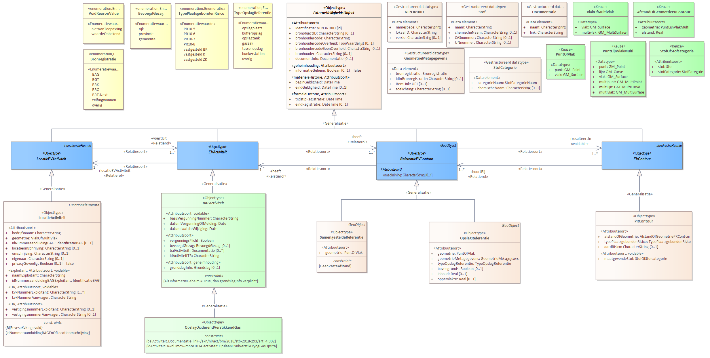
Figuur 15 ‒ Diagram: VII-A.8 Opslaan van oxiderende en verstikkende gassen in opslagtanks
Voor de beschrijving van de EVActiviteit is er een objecttype OpslagOxiderendVerstikkendGas.
Voor de ReferentieEVContour zijn van belang de locatie:
OpslagReferentie
SamengesteldeReferentie
Voor de EVContour zijn de volgende typen gedefinieerd:
PRContour
6.1.14 VII-A.9 Opslaan van brandbare vloeistoffen anders dan diesel in bovengrondse opslagtanks - detail
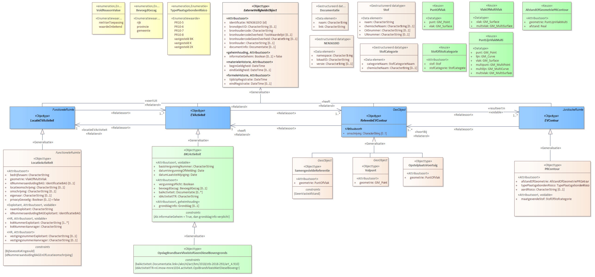
Figuur 16 ‒ Diagram: VII-A.9 Opslaan van brandbare vloeistoffen anders dan diesel in bovengrondse opslagtanks
Voor de beschrijving van de EVActiviteit is er een objecttype OpslagBrandbareVloeistofGeenDieselBovengronds.
Voor de ReferentieEVContour zijn van belang de locatie:
OpstelplaatsVoertuig
SamengesteldeReferentie
Voor de EVContour zijn de volgende typen gedefinieerd:
PRContour
6.1.15 VII-A.10 Opslaan van brandbare vloeistoffen anders dan diesel in ondergrondse opslagtanks - detail
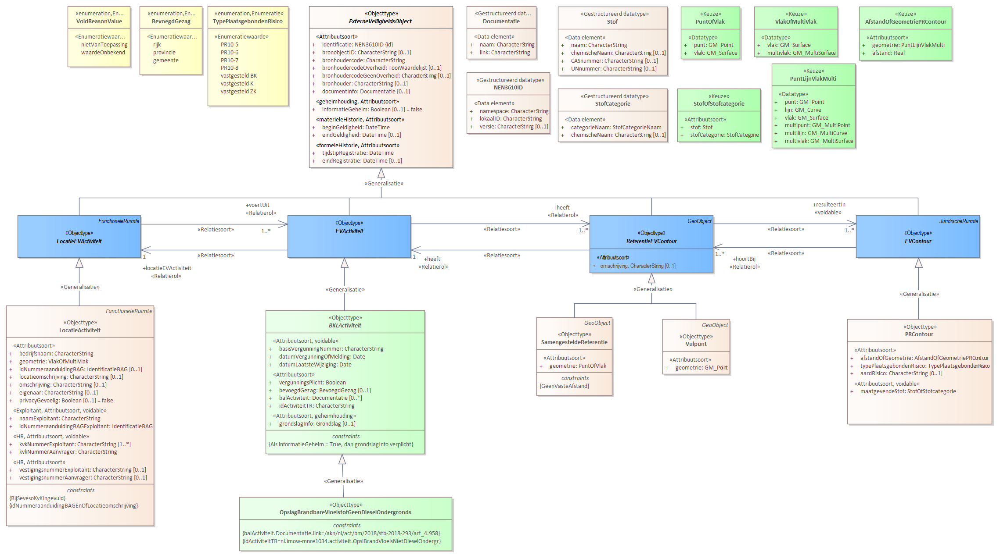
Figuur 17 ‒ Diagram: VII-A.10 Opslaan van brandbare vloeistoffen anders dan diesel in ondergrondse opslagtanks
Voor de beschrijving van de EVActiviteit is er een objecttype OpslagBrandbareVloeistofGeenDieselOndergronds.
Voor de ReferentieEVContour zijn van belang de locatie:
Vulpunt
SamengesteldeReferentie
Voor de EVContour zijn de volgende typen gedefinieerd:
PRContour
6.1.16 VII-A.11 Opslaan van gevaarlijke stoffen in verpakking - detail
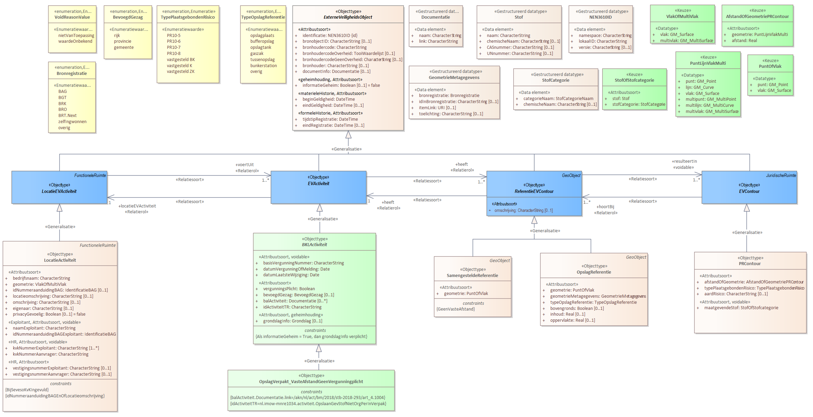
Figuur 18 ‒ Diagram: VII-A.11 Opslaan van gevaarlijke stoffen in verpakking
Voor de beschrijving van de EVActiviteit is er een objecttype OpslagVerpakt_VasteAfstandGeenVergunningplicht.
Voor de ReferentieEVContour zijn van belang de locatie:
OpslagReferentie
SamengesteldeReferentie
Voor de EVContour zijn de volgende typen gedefinieerd:
PRContour
6.1.17 VII-A.12 Opstellen van voertuigen, opleggers of aanhangers met gevaarlijke stoffen - detail
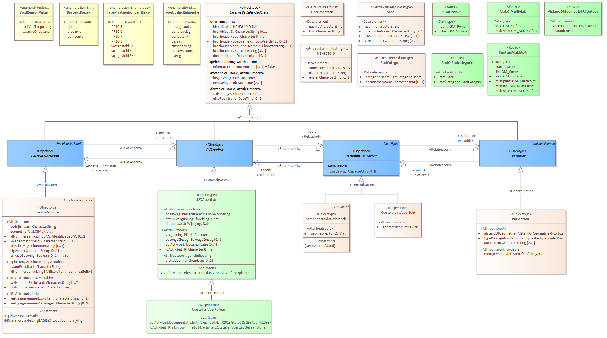
Figuur 19 ‒ Diagram: VII-A.12 Opstellen van voertuigen, opleggers of aanhangers met gevaarlijke stoffen
Voor de beschrijving van de EVActiviteit is er een objecttype OpstellenVoertuigen.
Voor de ReferentieEVContour zijn van belang de locatie:
OpstelplaatsVoertuig
SamengesteldeReferentie
Voor de EVContour zijn de volgende typen gedefinieerd:
PRContour
6.1.18 VII-A.13 Exploiteren van een energieopslagsysteem, vergunningvrij en vaste afstanden - detail
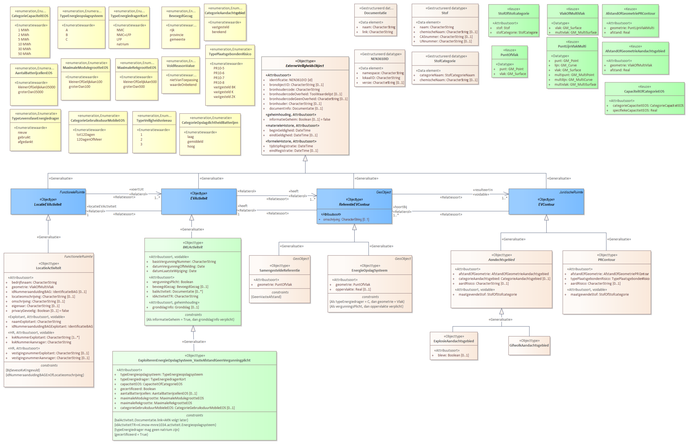
Figuur 20 ‒ Diagram: VII-A.13 Exploiteren van een energieopslagsysteem, vergunningvrij en vaste afstanden
Voor de beschrijving van de EVActiviteit is er een objecttype ExploiterenEnergieOpslagSysteem_VasteAfstandGeenVergunningplicht.
Voor de ReferentieEVContour zijn van belang de locatie van:
SamengesteldeReferentie
EnergieOpslagSysteem
Voor de EVContour zijn de volgende typen gedefinieerd:
ExplosieAandachtsgebied
GifwolkAandachtsgebied
PRContour
6.1.19 VII-A.14 Het opslaan en opstellen van energiedragers voor elektrische energie, vergunningvrij en vaste afstanden - detail
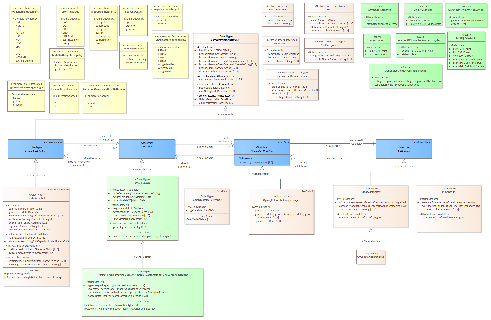
Figuur 21 ‒ Diagram: VII-A.14 Het opslaan en opstellen van energiedragers voor elektrische energie, vergunningvrij en vaste afstanden
Voor de beschrijving van de EVActiviteit is er een objecttype OpslagEnergiedragersElektrischeEnergie_VasteAfstandGeenVergunningplicht.
Voor de ReferentieEVContour zijn van belang de locatie van:
SamengesteldeReferentie
OpslagReferentieEnergiedrager
Voor de EVContour zijn de volgende typen gedefinieerd:
ExplosieAandachtsgebied
GifwolkAandachtsgebied
PRContour
6.1.20 VII-B.1 Koelinstallatie met ammoniak - detail
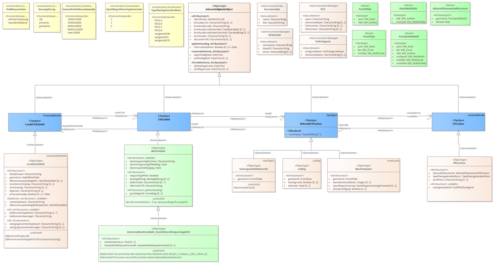
Figuur 22 ‒ Diagram: VII-B.1 Koelinstallatie met ammoniak
Voor de beschrijving van de EVActiviteit is er een objecttype AmmoniakKoelInstallatie_VasteAfstandVergunningplicht met daarbij opgenomen de kenmerken werktemperatuur en hoeveelheidsKlasseAmmoniak.
Voor de ReferentieEVContour zijn van belang de locatie van:
Leiding
Machinekamer
SamengesteldeReferentie
Voor de EVContour zijn de volgende typen gedefinieerd:
PRContour
6.1.21 VII-B.2 Opslagtank voor gassen - detail
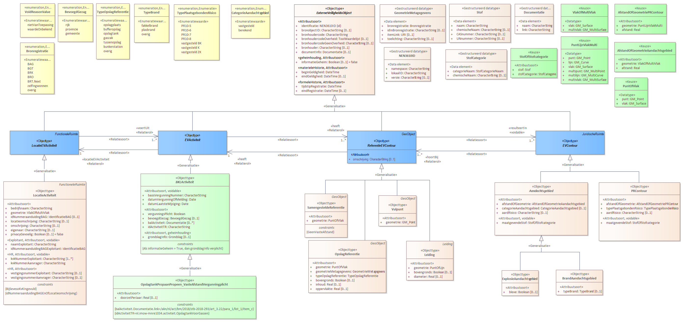
Figuur 23 ‒ Diagram: VII-B.2 Opslagtank voor gassen
Voor de beschrijving van de EVActiviteit is er een objecttype OpslagtankPropaanPropeen_VasteAfstandVergunningplicht met daarbij opgenomen het kenmerk doorzetPerJaar.
Voor de ReferentieEVContour zijn van belang de locatie van:
Leiding
Vulpunt
OpslagReferentie
SamengesteldeReferentie
Voor de EVContour zijn de volgende typen gedefinieerd:
BrandAandachtsgebied
ExplosieAandachtsgebied
PRContour
6.1.22 VII-B.3.1 Opslaan van brandbare gevaarlijke stoffen in verpakking met F, Cl, Br, N, S- detail
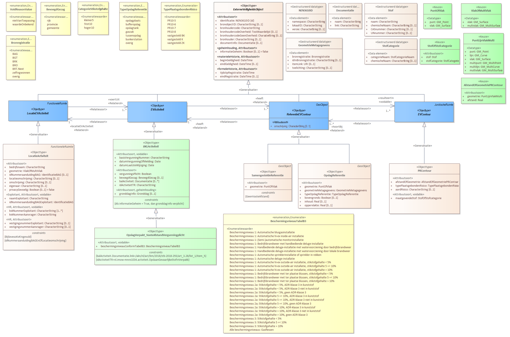
Figuur 24 ‒ Diagram: VII-B.3.1 Opslaan van brandbare gevaarlijke stoffen in verpakking met F, Cl, Br, N, S- detail
Voor de beschrijving van de EVActiviteit is er een objecttype OpslagVerpakt_VasteAfstandVergunningplicht.
Voor de ReferentieEVContour zijn van belang de locatie van:
OpslagReferentie
SamengesteldeReferentie
Voor de EVContour zijn de volgende typen gedefinieerd:
PRContour
6.1.23 VII-B.3.2 Opslaan van brandbare gevaarlijke stoffen in verpakking zonder F, Cl, Br, N, S - detail
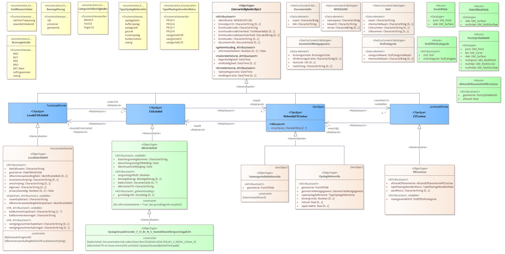
Figuur 25 ‒ Diagram: VII-B.3.2 Opslaan van brandbare gevaarlijke stoffen in verpakking zonder F, Cl, Br, N, S
Voor de ReferentieEVContour zijn van belang de locatie van:
OpslagReferentie
SamengesteldeReferentie
Voor de EVContour zijn de volgende typen gedefinieerd:
PRContour
6.1.24 VII-B.4 Opslaan van vaste minerale anorganische meststoffen - detail
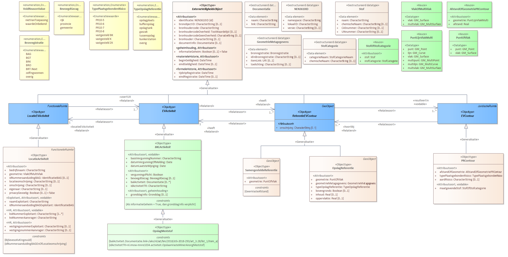
Figuur 26 ‒ Diagram: VII-B.4 Opslaan van vaste minerale anorganische meststoffen
Voor de beschrijving van de EVActiviteit is er een objecttype OpslagMeststof.
Voor de ReferentieEVContour zijn van belang de locatie van:
OpslagReferentie
SamengesteldeReferentie
Voor de EVContour zijn de volgende typen gedefinieerd:
PRContour
6.1.25 VII-B.5 Waterstof: opslag- en transportbedrijf, groothandel en containeroverslag en tankstation - detail
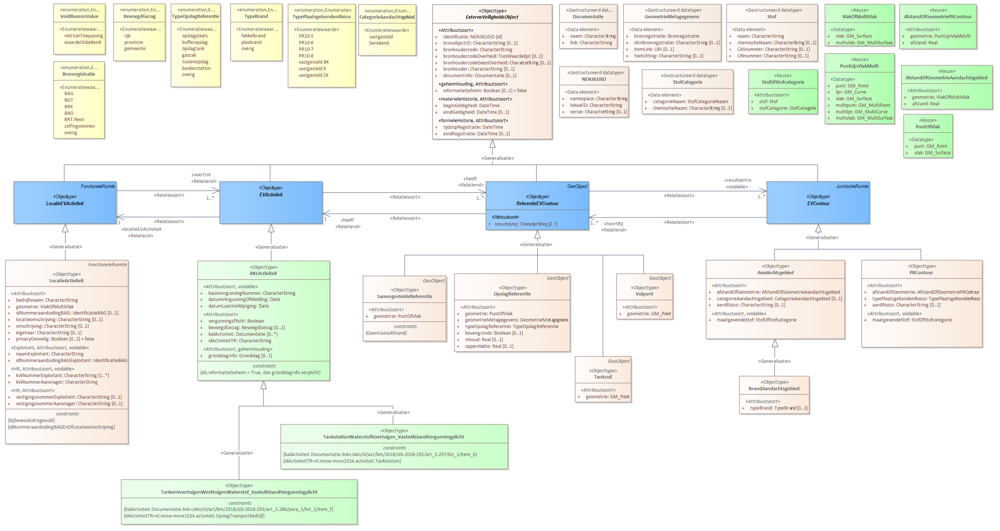
Figuur 27 ‒ Diagram: VII-B.5 Waterstof: opslag- en transportbedrijf, groothandel en containeroverslag en tankstation
Voor de beschrijving van de EVActiviteit zijn er twee objecttypes TankenWaterstofVoertuigen_TeBerekenenAfstandVergunningplicht en OpslagTransportBedrijfWaterstof_TeBerekenenAfstandVergunningplicht.
Voor de ReferentieEVContour zijn van belang de locatie van:
Vulpunt
Tankzuil
OpslagReferentie
SamengesteldeReferentie
Voor de EVContour zijn de volgende typen gedefinieerd:
Figuur 28 ‒ Diagram: VII-B.6.1 Mestvergistingsinstallatie - Grootschalige mestverwerking
Voor de beschrijving van de EVActiviteit is er een objecttype GrootschaligMestverwerking_VasteAfstandVergunningplicht.
Voor de ReferentieEVContour zijn van belang de locatie:
AftappuntOpslagtank
OpslagReferentie
SamengesteldeReferentie
Voor de EVContour zijn de volgende typen gedefinieerd:
PRContour
6.1.27 VII-B.6.2 Mestvergistingsinstallatie - Bedrijf voor mestbehandeling - detail
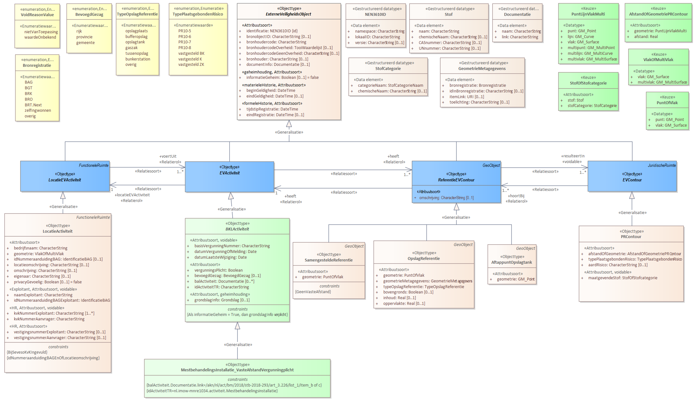
Figuur 29 ‒ Diagram: VII-B.6.2 Mestvergistingsinstallatie - Bedrijf voor mestbehandeling
Voor de beschrijving van de EVActiviteit is er een objecttype MestbehandelingsInstallatie_VasteAfstandVergunningplicht.
Voor de ReferentieEVContour zijn van belang de locatie:
AftappuntOpslagtank
OpslagReferentie
SamengesteldeReferentie
Voor de EVContour zijn de volgende typen gedefinieerd:
PRContour
6.1.28 VII-C. Basisnet - detail
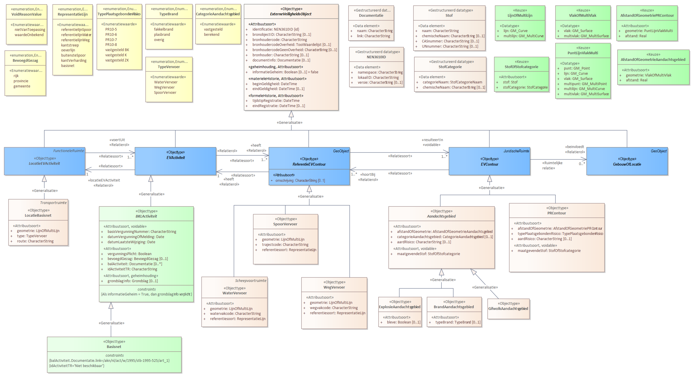
Figuur 30 ‒ Diagram: VII-C. Basisnet
Activiteiten met bij ministeriële regeling vastgestelde afstanden voor het plaatsgebonden risico
Voor de beschrijving van de EVActiviteit is er een objecttype Basisnet.
Voor de ReferentieEVContour zijn van belang de locatie van:
SpoorVervoer
WaterVervoer
WegVervoer
Voor de EVContour zijn de volgende typen gedefinieerd:
BrandAandachtsgebied
ExplosieAandachtsgebied
GifwolkAandachtsgebied
6.1.29 VII-D.1 Windturbine - detail
Figuur 31 ‒ Diagram: VII-D.1 Windturbine
Activiteiten met te berekenen afstanden voor het plaatsgebonden risico zonder vergunningplicht
Voor de beschrijving van de EVActiviteit is er een objecttype Windturbine_TeBerekenenAfstandGeenVergunningplicht met daarbij opgenomen het kenmerk aantalWindturbines.
Voor de ReferentieEVContour zijn van belang de locatie van:
Windturbine
SamengesteldeReferentie
Voor de EVContour zijn de volgende typen gedefinieerd:
PRContour
6.1.30 VII-D.2 Buisleiding met gevaarlijke stoffen - detail
Figuur 32 ‒ Diagram: VII-D.2 Buisleiding met gevaarlijke stoffen
Voor de beschrijving van de EVActiviteit is er een objecttype Buisleiding.
Voor de ReferentieEVContour zijn van belang de locatie van:
BuisleidingReferentie
Voor de EVContour zijn de volgende typen gedefinieerd:
BrandAandachtsgebied
ExplosieAandachtsgebied
GifwolkAandachtsgebied
De codelijsten OilGasChemicalsProductTypeValue en PipeMaterialTypeValue komen uit het Europese project INSPIRE en worden ook in IMKL (Informatiemodel Kabels en Leidingen) gebruikt.
De codelijsten PipeMaterialTypeValue is in IMEV 3.0 wel aangepast aan het Bal.
6.1.31 VII-D.3 Exploiteren van een energieopslagsysteem, vergunningvrij en berekende afstanden - detail
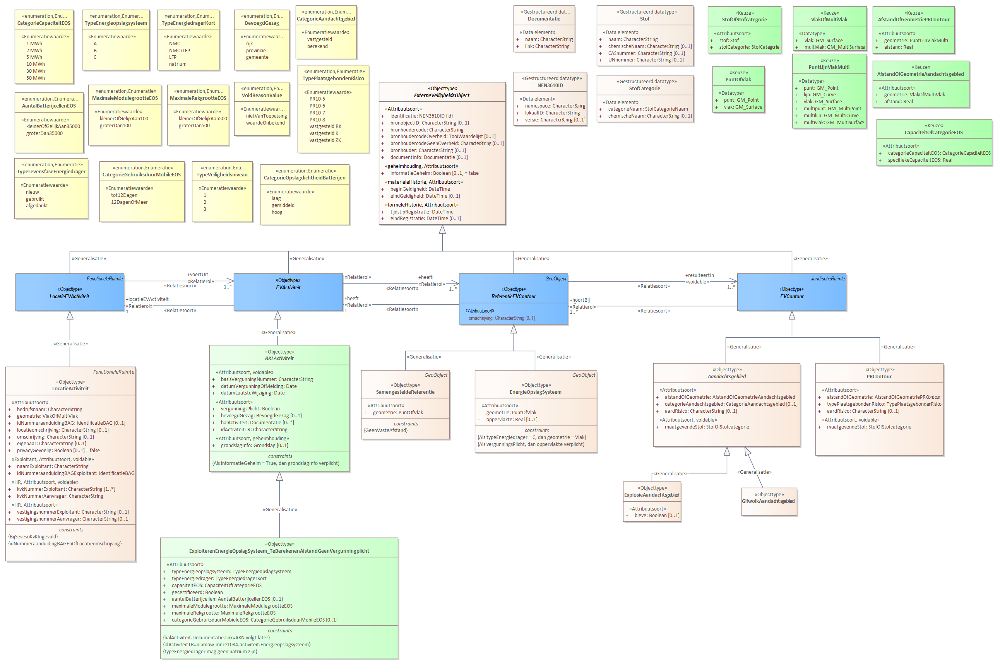
Figuur 33 ‒ Diagram: VII-D.3 Exploiteren van een energieopslagsysteem, vergunningvrij en berekende afstanden
Voor de beschrijving van de EVActiviteit is er een objecttype ExploiterenEnergieOpslagSysteem_TeBerekekenAfstandGeenVergunningplicht.
Voor de ReferentieEVContour zijn van belang de locatie van:
SamengesteldeReferentie
EnergieOpslagSysteem
Voor de EVContour zijn de volgende typen gedefinieerd:
ExplosieAandachtsgebied
GifwolkAandachtsgebied
PRContour
6.1.32 VII-D.4 Het opslaan en opstellen van energiedragers voor elektrische energie, vergunningvrij en berekende afstanden - detail
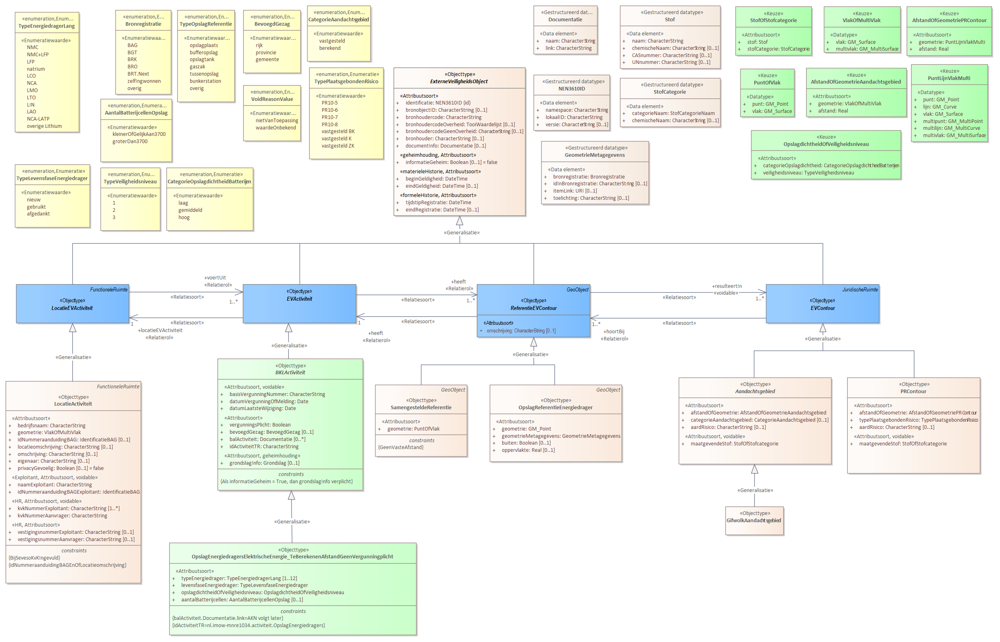
Figuur 34 ‒ Diagram: VII-D.4 Het opslaan en opstellen van energiedragers voor elektrische energie, vergunningvrij en berekende afstanden
Voor de beschrijving van de EVActiviteit is er een objecttype OpslagEnergiedragersElektrischeEnergie_TeBerekenenAfstandGeenVergunningplicht.
Voor de ReferentieEVContour zijn van belang de locatie van:
SamengesteldeReferentie
OpslagReferentieEnergiedrager
Voor de EVContour zijn de volgende typen gedefinieerd:
GifwolkAandachtsgebied
PRContour
6.1.33 VII-E.1 Windturbine in een windpark met minimaal 3 windturbines- detail
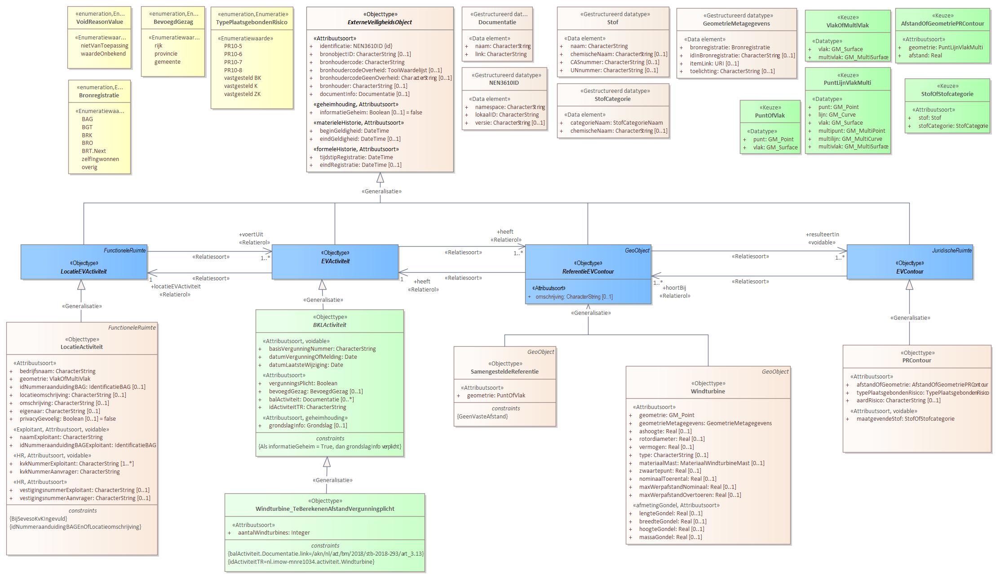
Figuur 35 ‒ Diagram: VII-E.1 Windturbine in een windpark met minimaal 3 windturbines- detail
Voor de beschrijving van de EVActiviteit is er een objecttype Windturbine_TeBerekenenAfstandVergunningplicht met daarbij opgenomen het kenmerk aantalWindturbines.
Voor de ReferentieEVContour zijn van belang:
Windturbine
SamengesteldeReferentie
Voor de EVContour zijn de volgende typen gedefinieerd:
PRContour
6.1.34 VII-E.2 Koelinstallatie met ammoniak - detail
Figuur 36 ‒ Diagram: VII-E.2 Koelinstallatie met ammoniak
Voor de beschrijving van de EVActiviteit is er een objecttype AmmoniakKoelinstallatie_TeBerekenenAfstand met daarbij opgenomen de kenmerken werktemperatuur en hoeveelheidsKlasseAmmoniak.
Voor de ReferentieEVContour zijn van belang de locatie van:
Leiding
Machinekamer
SamengesteldeReferentie
Voor de EVContour zijn de volgende typen gedefinieerd:
BrandAandachtsgebied
ExplosieAandachtsgebied
GifwolkAandachtsgebied
PRContour
6.1.35 VII-E.3 Opslagtank voor gassen - detail
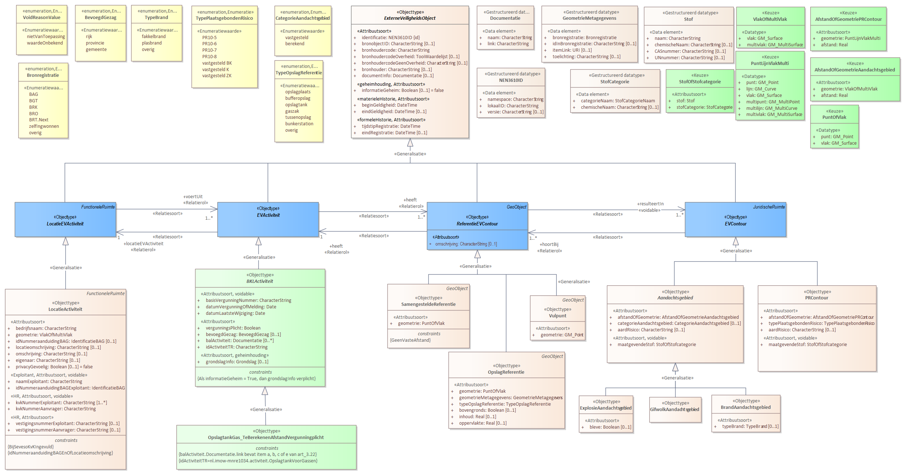
Figuur 37 ‒ Diagram: VII-E.3 Opslagtank voor gassen
Voor de beschrijving van de EVActiviteit is er een objecttype OpslagtankGas_TeBerekenenAfstandVegunningplicht.
Voor de ReferentieEVContour zijn van belang de locatie van:
SamengesteldeReferentie
Voor de EVContour zijn de volgende typen gedefinieerd:
BrandAandachtsgebied
ExplosieAandachtsgebied
GifwolkAandachtsgebied
PRContour
6.1.36 VII-E.4 Opslagtank voor vloeistoffen en tankcontainer of verpakking die wordt gebruikt als opslagtank voor vloeistoffen - detail
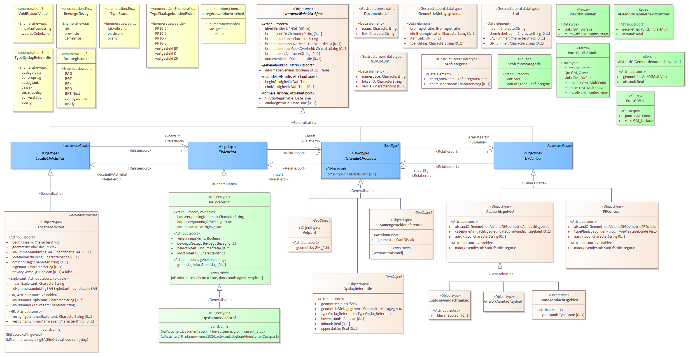
Figuur 38 ‒ Diagram: VII-E.4 Opslagtank voor vloeistoffen en tankcontainer of verpakking die wordt gebruikt als opslagtank voor vloeistoffen
Voor de beschrijving van de EVActiviteit is er een objecttype OpslagtankVloeistof.
Voor de ReferentieEVContour zijn van belang de locatie van:
SamengesteldeReferentie
Voor de EVContour zijn de volgende typen gedefinieerd:
BrandAandachtsgebied
ExplosieAandachtsgebied
GifwolkAandachtsgebied
PRContour
6.1.37 VII-E.5 Opslaan van gevaarlijke stoffen in verpakking - detail
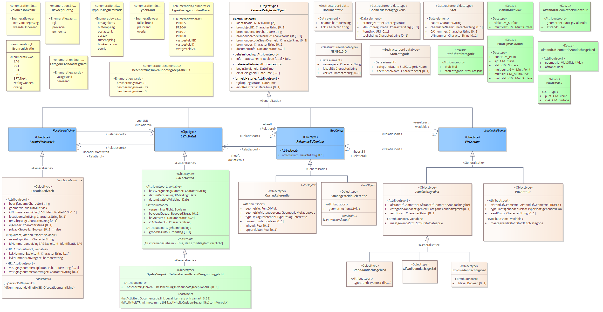
Figuur 39 ‒ Diagram: VII-E.5 Opslaan van gevaarlijke stoffen in verpakking
Voor de beschrijving van de EVActiviteit is er een objecttype OpslagVerpakt_TeBerekenenAfstandVergunningplicht.
Voor de ReferentieEVContour zijn van belang de locatie van:
SamengesteldeReferentie
OpslagReferentie
Voor de EVContour zijn de volgende typen gedefinieerd:
BrandAandachtsgebied
ExplosieAandachtsgebied
GifwolkAandachtgebied
PRContour
6.1.38 VII-E.6 Seveso-inrichting - detail
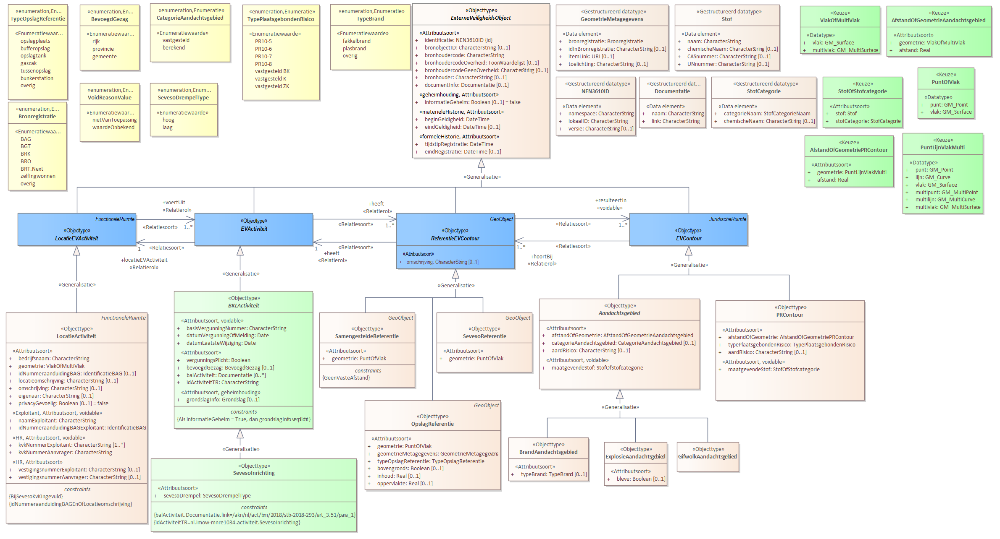
Figuur 40 ‒ Diagram: VII-E.6 Seveso-inrichting
Voor de beschrijving van de EVActiviteit is er een objecttype SevesoInrichting.
Voor de ReferentieEVContour zijn van belang de locatie van:
SevesoReferentie
SamengesteldeReferentie
OpslagReferentie
Voor de EVContour zijn de volgende typen gedefinieerd:
BrandAandachtsgebied
ExplosieAandachtsgebied
GifwolkAandachtsgebied
PRContour
6.1.39 VII-E.7 Behandelen, regelen en meten van aardgas - detail
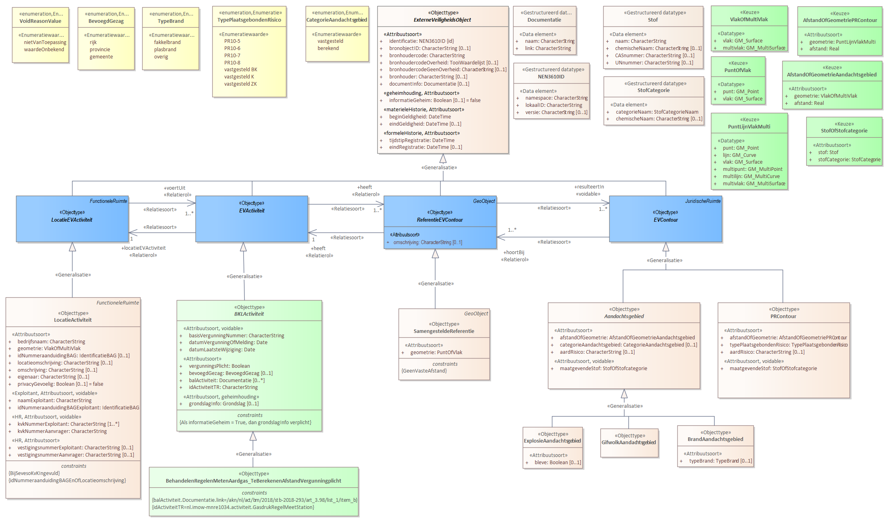
Figuur 41 ‒ Diagram: VII-E.7 Behandelen, regelen en meten van aardgas
Voor de beschrijving van de EVActiviteit is er een objecttype BehandelenRegelenMetenAardgas_TeBerekenenAfstandVergunningplicht.
Voor de ReferentieEVContour zijn van belang de locatie van:
SamengesteldeReferentie
Voor de EVContour zijn de volgende typen gedefinieerd:
BrandAandachtsgebied
ExplosieAandachtsgebied
GifwolkAandachtsgebied
PRContour
6.1.40 VII-E.8 Metaalproductenindustrie: bad met giftige gevaarlijke stoffen - detail
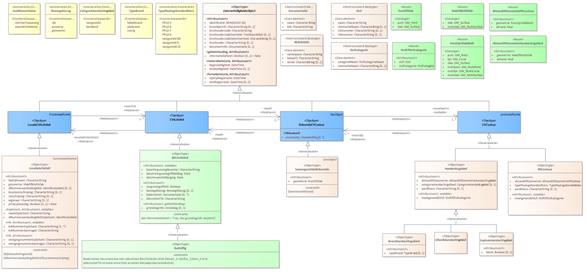
Figuur 42 ‒ Diagram: VII-E.8 Metaalproductenindustrie: bad met giftige gevaarlijke stoffen
Voor de beschrijving van de EVActiviteit is er een objecttype BadGiftig.
Voor de ReferentieEVContour zijn van belang de locatie van:
SamengesteldeReferentie
Voor de EVContour zijn de volgende typen gedefinieerd:
BrandAandachtsgebied
ExplosieAandachtsgebied
GifwolkAandachtsgebied
PRContour
6.1.41 VII-E.8.a Opstellen van voertuigen, opleggers of aanhangers met gevaarlijke stoffen meer dan 3 of langer dan 24 uur - detail
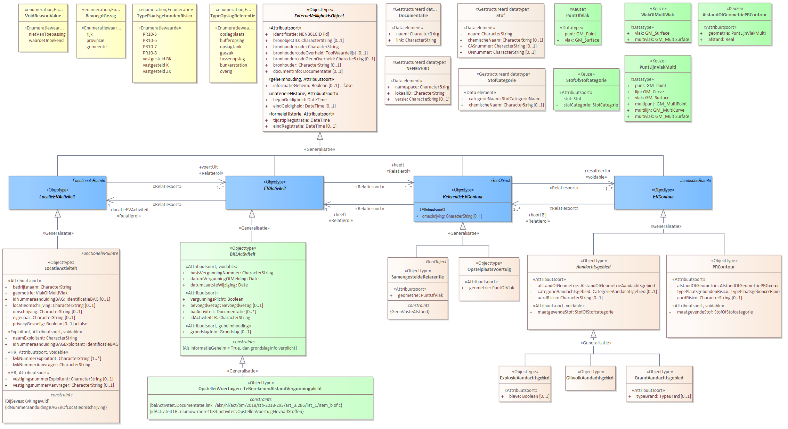
Figuur 43 ‒ Diagram: VII-E.8.a Opstellen van voertuigen, opleggers of aanhangers met gevaarlijke stoffen meer dan 3 of langer dan 24 uur
Voor de beschrijving van de EVActiviteit is er een objecttype OpstellenVoertuigen_TeBerekenenAfstandVergunningplicht.
Voor de ReferentieEVContour zijn van belang de locatie:
OpstelplaatsVoertuig
SamengesteldeReferentie
Voor de EVContour zijn de volgende typen gedefinieerd:
PRContour
6.1.42 VII-E.9 Opslag- en transportbedrijf, groothandel en containeroverslag: Seveso-hoeveelheid - detail
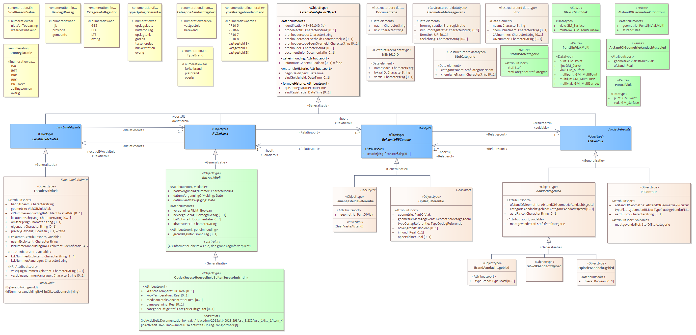
Figuur 44 ‒ Diagram: VII-E.9 Opslag- en transportbedrijf, groothandel en containeroverslag: Seveso-hoeveelheid
Voor de beschrijving van de EVActiviteit is er een objecttype OpslagSevesoHoeveelheidBuitenSevesoInrichting.
Voor de ReferentieEVContour zijn van belang de locatie van:
OpslagReferentie
SamengesteldeReferentie
Voor de EVContour zijn de volgende typen gedefinieerd:
BrandAandachtsgebied
ExplosieAandachtsgebied
GifwolkAandachtsgebied
PRContour
6.1.43 VII-E.10 LNG: opslag- en transportbedrijf, groothandel en containeroverslag en tankstation - detail
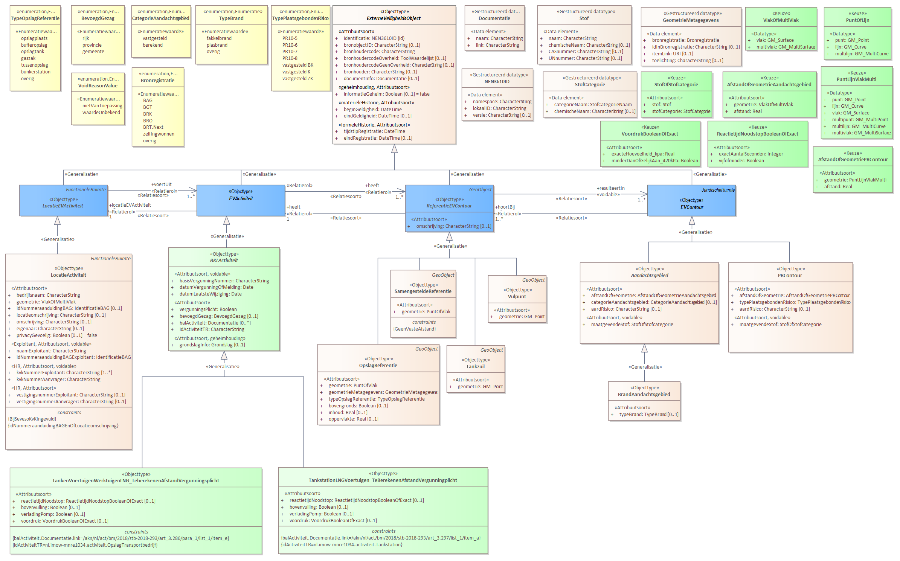
Figuur 45 ‒ Diagram: VII-E.10 LNG: opslag- en transportbedrijf, groothandel en containeroverslag en tankstation
Voor de beschrijving van de EVActiviteit is er twee objecttypes: TankenLNGVoertuig_TeberekenenAfstandVergunningsplicht en OpslagTransportBedrijfLNG_TeberekenenAfstandVergunningsplicht
Voor de ReferentieEVContour zijn van belang de locatie van:
Vulpunt
Tankzuil
SamengesteldeReferentie
OpslagReferentie
Voor de EVContour zijn de volgende typen gedefinieerd:
BrandAandachtsgebied
PRContour
6.1.44 VII-E.10a LNG: Bunkerstations en andere tankplaatsen voor schepen - detail
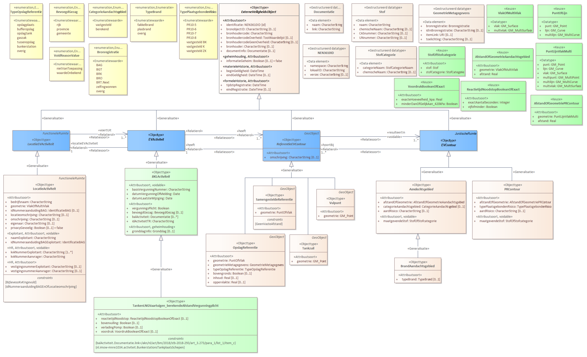
Figuur 46 ‒ Diagram: VII-E.10a LNG: Bunkerstations en andere tankplaatsen voor schepen
Voor de beschrijving van de EVActiviteit is er een objecttype TankenLNGVaartuigen_berekendeAfstandVergunningplicht.
Voor de ReferentieEVContour zijn van belang de locatie van:
Vulpunt
Tankzuil
SamengesteldeReferentie
OpslagReferentie
Voor de EVContour zijn de volgende typen gedefinieerd:
Figuur 48 ‒ Diagram: VII-E.11.2 Mijnbouwwerk verplaatsbaar
Voor de beschrijving van de EVActiviteit is er een objecttype MijnbouwwerkVerplaatsbaar.
Voor de ReferentieEVContour zijn van belang de locatie van:
SamengesteldeReferentie
Voor de EVContour zijn de volgende typen gedefinieerd:
PRContour
6.1.47 VII-E.12 Andere insluitsystemen - detail
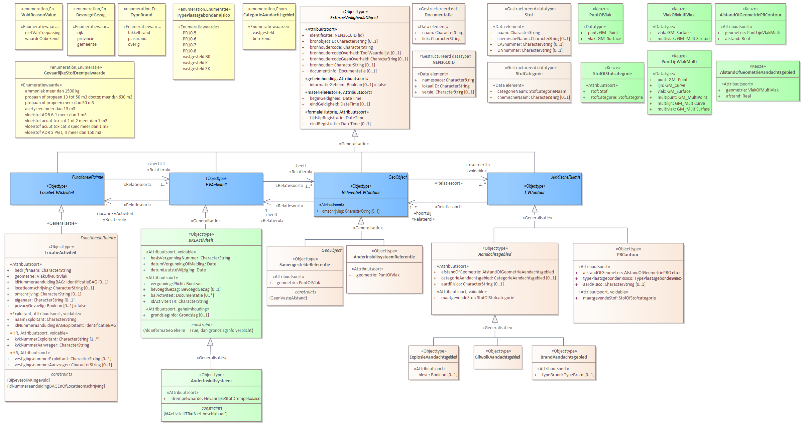
Figuur 49 ‒ Diagram: VII-E.12 Andere insluitsystemen
Voor de beschrijving van de EVActiviteit is er een objecttype AnderInsluitsysteem.
Voor de ReferentieEVContour zijn van belang de locatie van:
AnderInsluitsysteemReferentie
SamengesteldeReferentie
Voor de EVContour zijn de volgende typen gedefinieerd:
BrandAandachtsgebied
ExplosieAandachtsgebied
GifwolkAandachtsgebied
PRContour
6.1.48 VII-E.13 Spoorwegemplacementen - detail
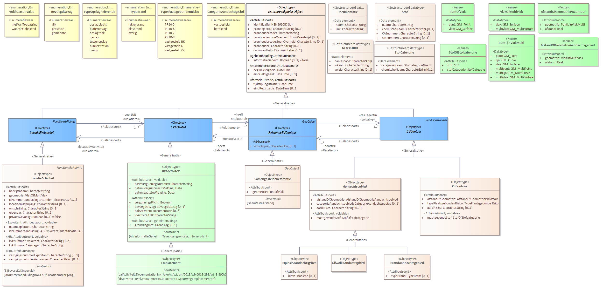
Figuur 50 ‒ Diagram: VII-E.13 Spoorwegemplacementen
Voor de beschrijving van de EVActiviteit is er een objecttype Emplacement.
Voor de ReferentieEVContour zijn van belang de locatie van:
SamengesteldeReferentie
Voor de EVContour zijn de volgende typen gedefinieerd:
BrandAandachtsgebied
ExplosieAandachtsgebied
GifwolkAandachtsgebied
PRContour
6.1.49 VII-E.14 Exploiteren van een energieopslagsysteem, vergunningplicht en berekende afstanden - detail
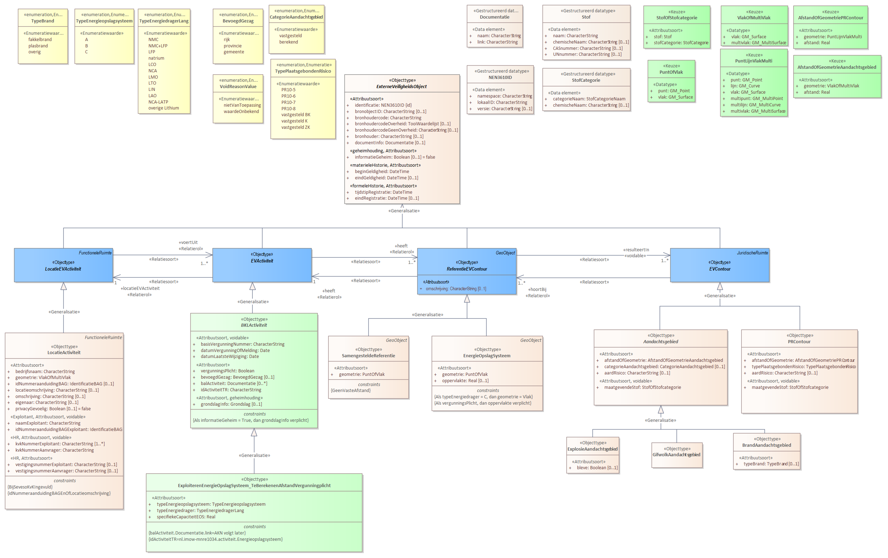
Figuur 51 ‒ Diagram: VII-E.14 Exploiteren van een energieopslagsysteem, vergunningplicht en berekende afstanden
Voor de beschrijving van de EVActiviteit is er een objecttype ExploiterenEnergieOpslagSysteem_TeBerekenenAfstandVergunningplicht.
Voor de ReferentieEVContour zijn van belang de locatie van:
SamengesteldeReferentie
EnergieOpslagSysteem
Voor de EVContour zijn de volgende typen gedefinieerd:
ExplosieAandachtsgebied
GifwolkAandachtsgebied
PRContour
6.1.50 VII-E.15 Opslaan en opstellen van energiedragers voor elektrische energie, vergunningplicht en berekende afstanden - detail
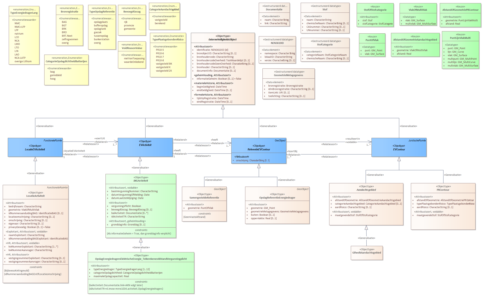
Figuur 52 ‒ Diagram: VII-E.15 Opslaan en opstellen van energiedragers voor elektrische energie, vergunningplicht en berekende afstanden
Voor de beschrijving van de EVActiviteit is er een objecttype OpslagEnergiedragersElektrischeEnergie_TeBerekenenAfstandVergunningplicht.
Voor de ReferentieEVContour zijn van belang de locatie van:
SamengesteldeReferentie
OpslagReferentie
Voor de EVContour zijn de volgende typen gedefinieerd:
ExplosieAandachtsgebied
GifwolkAandachtsgebied
PRContour
6.1.51 VIII-A Explosieaandachtsgebied vuurwerk voor opslag van categorie F4 - detail
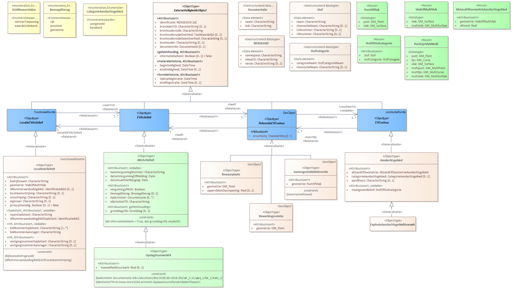
Figuur 53 ‒ Diagram: VIII-A Explosieaandachtsgebied vuurwerk voor opslag van categorie F4
Voor de beschrijving van de EVActiviteit is er een objecttype OpslagVuurwerkF4 met daarbij opgenomen de kenmerken hoeveelheidVuurwerk en categorieVuurwerk.
Voor de ReferentieEVContour zijn van belang de locatie van:
Bewaarplaats
Bewerkingsruimte
SamengesteldeReferentie
Voor de EVContour zijn de volgende typen gedefinieerd:
ExplosieAandachtsgebiedVuurwerk
6.1.52 VIII-A.5.20 Opslaan, herverpakken of bewerken van vuurwerk van categorie F1,F2 of F3 in een hoeveelheid van ten hoogste 10.000 kg - detail
Figuur 54 ‒ Diagram: VIII-A.5.20 Opslaan, herverpakken of bewerken van vuurwerk van categorie F1,F2 of F3 in een hoeveelheid van ten hoogste 10.000 kg
Voor de beschrijving van de EVActiviteit is er een objecttype OpslagVuurwerkF1F2F3T1T2_GeenVergunningplicht met daarbij opgenomen de kenmerken hoeveelheidVuurwerk en categorieVuurwerk.
Voor de ReferentieEVContour zijn van belang de locatie van:
Bewaarplaats
BufferBewaarplaats
SamengesteldeReferentie
Voor de EVContour zijn de volgende typen gedefinieerd:
ExplosieAandachtsgebiedVuurwerk
6.1.53 VIII-B Explosieaandachtsgebied vuurwerk voor opslag van categorie F1, F2, F3, of pyrotechnische artikelen voor theatergebruik van categorie T1 of T2 - detail
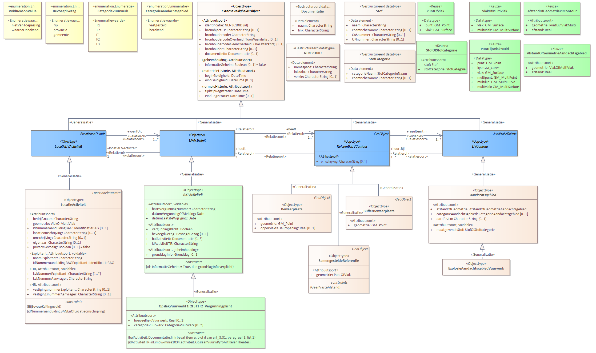
Figuur 55 ‒ Diagram: VIII-B Explosieaandachtsgebied vuurwerk voor opslag van categorie F1, F2, F3, of pyrotechnische artikelen voor theatergebruik van categorie T1 of T2
Voor de beschrijving van de EVActiviteit is er een objecttype OpslagVuurwerkF1F2F3T1T2_Vergunningplicht met daarbij opgenomen de kenmerken hoeveelheidVuurwerk en categorieVuurwerk.
Voor de ReferentieEVContour zijn van belang de locatie van:
Bewaarplaats
BufferBewaarplaats
SamengesteldeReferentie
Voor de EVContour zijn de volgende typen gedefinieerd:
ExplosieAandachtsgebiedVuurwerk
6.1.54 IX-A Civiele explosieaandachtsgebieden voor opslag van stoffen van ADR-klasse 1.1 - detail
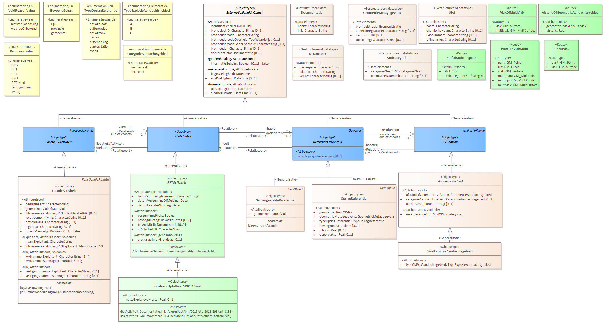
Figuur 56 ‒ Diagram: IX-A Civiele explosieaandachtsgebieden voor opslag van stoffen van ADR-klasse 1.1
Voor de beschrijving van de EVActiviteit is er een objecttype OpslagOntplofbaarADR1.1Civiel met daarbij opgenomen het kenmerk nettoExplosieveMassa.
Voor de ReferentieEVContour zijn van belang de locatie van:
OpslagReferentie
SamengesteldeReferentie
Voor de EVContour zijn de volgende typen gedefinieerd:
CivielExplosieAandachtsgebied
6.1.55 IX-B Civiele explosieaandachtsgebieden voor opslag van stoffen van ADR-klasse 1.3 - detail
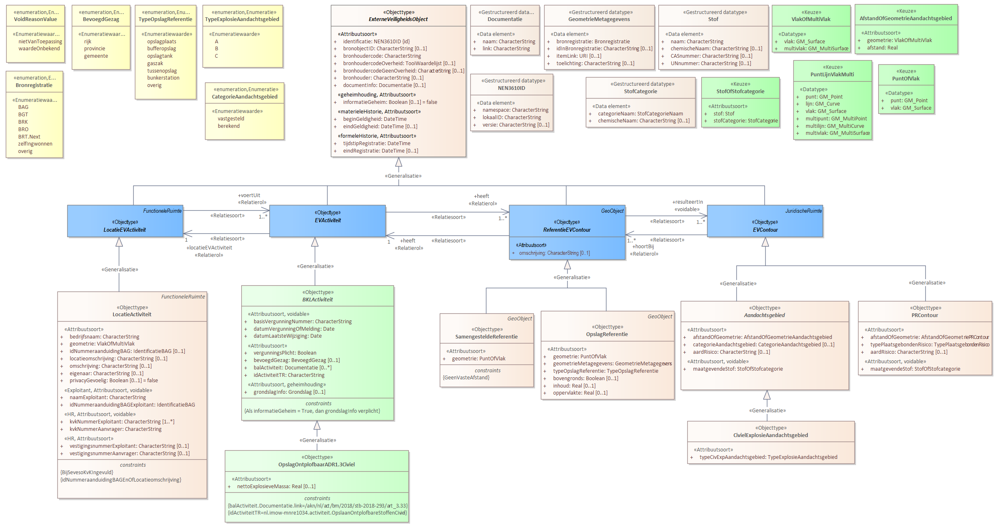
Figuur 57 ‒ Diagram: IX-B Civiele explosieaandachtsgebieden voor opslag van stoffen van ADR-klasse 1.3
Voor de beschrijving van de EVActiviteit is er een objecttype OpslagOntplofbaarADR1.3Civiel met daarbij opgenomen het kenmerk nettoExplosieveMassa.
Voor de ReferentieEVContour zijn van belang de locatie van:
OpslagReferentie
SamengesteldeReferentie
Voor de EVContour zijn de volgende typen gedefinieerd:
CivielExplosieAandachtsgebied
6.1.56 IX-C Civiele explosieaandachtsgebieden voor opslag van stoffen van ADR-klasse 1.4 - detail
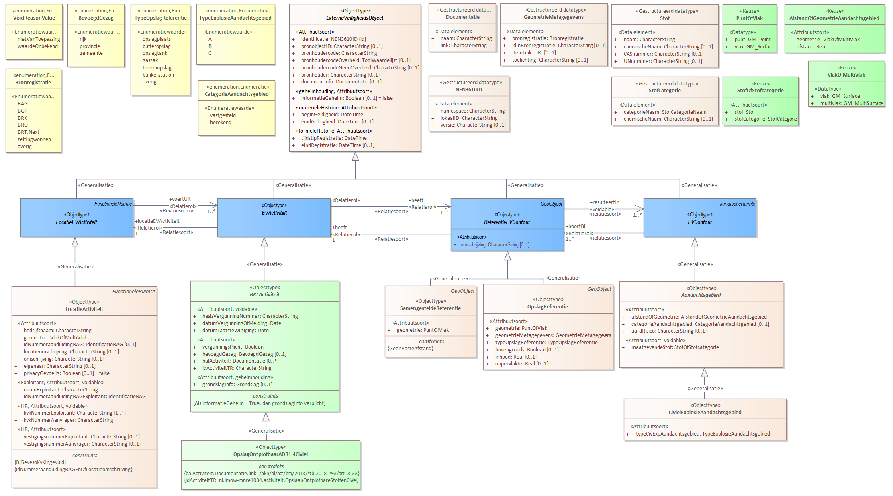
Figuur 58 ‒ Diagram: IX-C Civiele explosieaandachtsgebieden voor opslag van stoffen van ADR-klasse 1.4
Voor de beschrijving van de EVActiviteit is er een objecttype OpslagOntplofbaarADR1.4Civiel.
Voor de ReferentieEVContour zijn van belang de locatie van:
OpslagReferentie
SamengesteldeReferentie
Voor de EVContour zijn de volgende typen gedefinieerd:
CivielExplosieAandachtsgebied
6.1.57 A5.32 (militaire explosieaandachtsgebieden) a. - detail
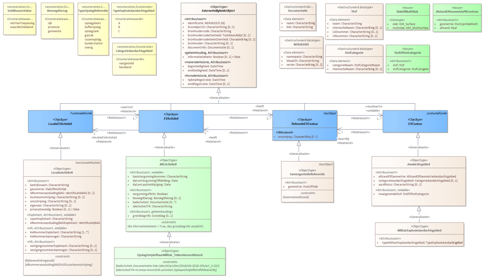
Figuur 59 ‒ Diagram: A5.32 (militaire explosieaandachtsgebieden) a.
Voor de beschrijving van de EVActiviteit is er een objecttype OpslagOntplofbaarMilitair_TeBerekenenAfstand.
Voor de ReferentieEVContour zijn van belang de locatie van:
SamengesteldeReferentie
Voor de EVContour zijn de volgende typen gedefinieerd:
Figuur 60 ‒ Diagram: IX-D Vastgestelde civiele explosieaandachtsgebieden
Voor de beschrijving van de EVActiviteit is er een objecttype OpslagOntplofbaarComplexen.
Voor de ReferentieEVContour zijn van belang de locatie van:
OpslagReferentie
SamengesteldeReferentie
Voor de EVContour zijn de volgende typen gedefinieerd:
CivielExplosieAandachtsgebied
6.1.59 X (A5.32 b) Opslag Ontplofbaar Militair Vaste Afstand - detail
Figuur 61 ‒ Diagram: X (A5.32 b) Opslag Ontplofbaar Militair Vaste Afstand
Voor de beschrijving van de EVActiviteit is er een objecttype OpslagOntplofbaarMilitair_VasteAfstand.
Voor de ReferentieEVContour zijn van belang de locatie van:
Bewerkingsruimte
OpslagReferentie
SamengesteldeReferentie
Voor de EVContour zijn de volgende typen gedefinieerd:
MilitairExplosieAandachtsgebied
6.1.60 A11.5.2 (gegevensverzameling basisnet, buisleidingen met gevaarlijke stoffen, militaire objecten en nucleaire installaties) - detail
Figuur 62 ‒ Diagram: A11.5.2 (gegevensverzameling basisnet, buisleidingen met gevaarlijke stoffen, militaire objecten en nucleaire installaties)
De Autoriteit Nucleaire Veiligheid en Stralingsbescherming verzamelt gegevens als het gaat om een inrichting waarvoor een vergunning is verleend op grond van artikel 15, onder b, van de Kernenergiewet.
Voor de beschrijving van de EVActiviteit is er een objecttype KernenergieInrichting.
Voor de ReferentieEVContour zijn van belang de locatie van:
SamengesteldeReferentie
Voor de EVContour zijn de volgende typen gedefinieerd:
PRContour
6.1.61 A11.6 (gegevensverzameling gebouwen en locaties) - detail
Figuur 63 ‒ Diagram: A11.6 (gegevensverzameling gebouwen en locaties)
Gegevens van gebouwen en locaties van de categorie beperkt kwetsbaar, kwetsbaar en zeer kwetsbaar.
6.1.62 A11.7 (gegevensverzameling wegen, anders dan het basisnet) - detail
Figuur 64 ‒ Diagram: A11.7 (gegevensverzameling wegen, anders dan het basisnet)
Voor de beschrijving van de EVActiviteit is er een objecttype WegenNietBasisnet.
Voor de ReferentieEVContour zijn van belang de locatie van:
WegAs
Voor de EVContour zijn de volgende typen gedefinieerd:
PRContour
6.1.63 Objecttypen
6.1.63.1 OverigeContour
Naam
OverigeContour
Alias
overige contour
Herkomst
IMEV
Definitie
Ruimtelijke representatie van een contour die een veiligheidsafstand weergeeft.
Het exploiteren van een energieopslagsysteem voor elektrische energie met een energieopslagcapaciteit groter dan 20 kWh, bedoeld in artikel 4.1052b van het Besluit activiteiten leefomgeving, als de activiteit niet als vergunningplichtig is aangewezen in artikel 3.35b van dat besluit.
Aantal batterijcellen.
Een batterijcel is een functionele basiseenheid in een energiedrager die wordt gevormd door elektroden, elektrolyten, een behuizing, aansluitingen en, als van toepassing, separatoren, en die de actieve materialen bevat waarvan de reactie elektrische energie opwekt.
Het exploiteren van een energieopslagsysteem met een energieopslagcapaciteit groter dan 20 kWh, bedoeld in artikel 3.35a van het Besluit activiteiten leefomgeving.
Voor balActiviteit geldt dat er in de link van het document een waarde staat die gelijk is aan '/akn/nl/act/bm/2018/stb-2018-293/art_3.297/list_1/item_b'
Het opslaan van energiedragers voor elektrische energie, dan wel het opslaan van apparaten, voertuigen of werktuigen waarin een energiedrager voor elektrische energie is aangebracht of het voor handelsdoeleinden opstellen van voertuigen, werktuigen of apparaten waarin een energiedragers voor elektrische energie is aangebracht, bedoeld in artikel 4.1052i van het Besluit activiteiten leefomgeving, als de activiteit niet als vergunningplichtig is aangewezen in artikel 3.35d van dat besluitt.
Aantal batterijcellen.
Een batterijcel is een functionele basiseenheid in een energiedrager die wordt gevormd door elektroden, elektrolyten, een behuizing, aansluitingen en, als van toepassing, separatoren, en die de actieve materialen bevat waarvan de reactie elektrische energie opwekt.
Het exploiteren van een energieopslagsysteem met vloeibare of polymere lithium houdende batterijcellen, bedoeld in artikel 4.1052b van het Besluit activiteiten leefomgeving, als de activiteit niet als vergunningplichtig is aangewezen in artikel 3.35b van dat besluit voor zo ver op basis van artikel 4.1052f eerste lid een te berekenen afstand volgt of waarbij toepassing wordt gegeven aan artikel 4.1052f tweede lid.
Aantal batterijcellen.
Een batterijcel is een functionele basiseenheid in een energiedrager die wordt gevormd door elektroden, elektrolyten, een behuizing, aansluitingen en, als van toepassing, separatoren, en die de actieve materialen bevat waarvan de reactie elektrische energie opwekt.
Het Type van de energiedrager mag geen Natrium zijn.
6.1.63.11 BrandAandachtsgebied
Naam
BrandAandachtsgebied
Alias
brandaandachtsgebied
Herkomst
IMEV
Definitie
Een brandaandachtsgebied is de locatie begrensd door de afstand, waar als gevolg van een ongewoon voorval dat leidt tot een plasbrand of een fakkelbrand, de warmtestraling ten hoogste 10 kW/m2 is.
Voor balActiviteit geldt dat er in de link van het document een waarde staat die gelijk is aan 'balActiviteit.Documentatie.link='/akn/nl/act/bm/2018/stb-2018-293/art_3.286/para_1/list_1/item_e'
Voor balActiviteit geldt dat er in de link van het document een waarde staat die gelijk is aan '/akn/nl/act/bm/2018/stb-2018-293/art_3.273/para_1/list_1/item_c'
Het opslaan en opladen van energiedragers voor elektrische energie, bedoeld in artikel 4.1052i van het Besluit activiteiten leefomgeving, als de activiteit niet als vergunningplichtig is aangewezen in artikel 3.35e van dat besluit voor zover toepassing wordt gegeven aan artikel 4.1052m derde lid..
Aantal batterijcellen.
Een batterijcel is een functionele basiseenheid in een energiedrager die wordt gevormd door elektroden, elektrolyten, een behuizing, aansluitingen en, als van toepassing, separatoren, en die de actieve materialen bevat waarvan de reactie elektrische energie opwekt.
Het exploiteren van een andere milieubelastende installatie voor het behandelen van meer dan 25.000 m3 dierlijke meststoffen per jaar op een andere locatie dan de locatie van productie, bedoeld in artikel 3.90, eerste lid, van het Besluit activiteiten leefomgeving.
Het attribuut link van objecttype Documentatie behorende bij attribuut balActiviteit moet de waarde '/akn/nl/act/bm/2018/stb-2018-293/art_3.90/list_1/item_a' hebben.
Het vergisten van dierlijke meststoffen in combinatie met afvalstoffen, bedoeld in artikel 3.226, eerste lid, onder b, van het Besluit activiteiten leefomgeving of het vergisten van plantaardig materiaal, bedoeld in artikel 3.226, eerste lid, onder c, van dat besluit.
Herkomst definitie
IMEV
Regels
balActiviteit.Documentatie.link=/akn/nl/act/bm/2018/stb-2018-293/art3.226/list1/item_b of c
Het attribuut link van objecttype Documentatie behorende bij attribuut balActiviteit moet de waarde '/akn/nl/act/bm/2018/stb-2018-293/art_3.226/list_1/item_b' of '/akn/nl/act/bm/2018/stb-2018-293/art_3.226/list_1/item_c' hebben.
opslag van vuurwerkcategorie F1F2F3T1T2 zonder vergunningplicht
Herkomst
IMEV
Definitie
Opslaan van van vuurwerk van categorie F1, F2, F3, of pyrotechnische artikelen voor theatergebruik van categorie T1 of T2 in een hoeveelheid van ten hoogste 10.000 kg en zonder vergunningplicht.
Het opstellen van voertuigen, opleggers of aanhangers met gevaarlijke stoffen. Het betreft hier de vergunningplichtige activiteit uit Bijlage VII-E.8.a van het Bkl voor het opstellen van meer dan 3 voertuigen of voor het opstellen langer dan 24 uur.
Herkomst definitie
IMEV
Regels
balActiviteit.Documentatie.link=/akn/nl/act/bm/2018/stb-2018-293/art3.286/list1/item_b of c
Het attribuut link van objecttype Documentatie behorende bij attribuut balActiviteit moet de waarde '/akn/nl/act/bm/2018/stb-2018-293/art_3.286/list_1/item_b' of '/akn/nl/act/bm/2018/stb-2018-293/art_3.286/list_1/item_c' hebben.
Besloten ruimte waarin vuurwerk of pyrotechnische artikelen voor theatergebruik worden bewaard, herverpakt of bewerkt buiten de transportverpakking als bedoeld in de ADR.
De ligging van de bovenkant van de buisleiding ten opzichte van het maaiveld in centimeters. Als de waarde negatief is, dan ligt de bovenkant van de buisleiding boven de grond.
De ruimtelijke relatie die gelegd wordt tussen de plaatsgebonden risicocontour of het aandachtsgebied en gebouwen of locaties die daardoor beïnvloed worden.
Dit is een ruimtelijke relatie die niet administratief wordt vastgelegd.
Een object ten behoeve van het bepalen van externe veiligheidsaspecten.
6.1.63.27 ExplosieAandachtsgebied
Naam
ExplosieAandachtsgebied
Alias
explosie aandachtsgebied
Herkomst
IMEV
Definitie
Een explosieaandachtsgebied is de locatie begrensd door de afstand, waar als gevolg van een ongewoon voorval dat leidt tot:
a. een kokende vloeistof-gasexpansie-explosie (Boiling Liquid Expanding Vapor Explosion, BLEVE), de warmtestraling ten hoogste 35 kW/m2 is; of
b. een explosie, anders dan onder a, de overdruk ten hoogste 10 kPa is.
In het geval de gegevens behorende bij het ExterneVeiligheidsObject geheim zijn, zal het REV deze informatie niet openbaar delen als de waarde gelijk is aan "true". De informatie kan wel gedeeld worden met het bevoegde gezag als dat voor de vergunningverlening of handhaving noodzakelijk is.
Eind van de periode waarop deze instantie van het object geldig is in de werkelijkheid. Wanneer deze waarde niet is ingevuld is de instantie nog geldig.
Eind van de periode waarop deze instantie van het object geldig is in de registratie van de bronhouder. Wanneer deze waarde niet is ingevuld is de instantie nog geldig.
Een gifwolkaandachtsgebied is de locatie begrensd door de afstand, waar als gevolg van een ongewoon voorval dat leidt tot een gifwolk, personen in een gebouw overlijden door blootstelling aan ten hoogste de bij ministeriële regeling vastgestelde concentratie van een gevaarlijke stof gedurende een daarbij aangegeven periode.
Herkomst definitie
Artikel 5.12 Lid 3 Bkl
Toelichting
Artikel 5.12 Lid 3 Bkl
Indicatie abstract object
Nee
Overzicht relaties
Rol naam met kardinaliteiten
Definitie
GifwolkAandachtsgebied
is specialisatie van
Aandachtsgebied
Een locatie waar als gevolg van een ongewoon voorval een extern veiligheidsaspect aan de orde is zoals omschreven in artikel 5.12 Bkl.
6.1.63.32 Installatie
Naam
Installatie
Alias
installatie
Herkomst
IMEV
Definitie
Installatie voor het behandelen van gevaarlijke stoffen.
In het geval de gegevens behorende bij het object LocatieActiviteit AVG-gevoelig zijn, wat inhoudt dat de gegevens herleidbaar zijn tot 1 natuurlijk persoon, zal het REV deze informatie niet openbaar delen als de waarde gelijk is aan "true". De informatie kan wel gedeeld worden met het bevoegde gezag als dat voor de vergunningverlening of handhaving noodzakelijk is overeenkomstig met de regels die het AVG hiervoor stelt.
Locatie waar een activiteit met externe veiligheidsrisico’s wordt verricht.
6.1.63.38 LocatieEVActiviteit
Naam
LocatieEVActiviteit
Alias
locatie van de externe veiligheidsactiviteit
Herkomst
IMEV
Definitie
Locatie waar een activiteit met externe veiligheidsrisico’s wordt verricht.
Herkomst definitie
IMEV
Toelichting
Een definitie van locatie is gegeven in de toelichting op de omgevingsregeling staatscourant 2019, 56288, hoofdstuk 5.1, aanwijzing en geometrische begrenzing. "Een door geometrische bepaling begrensd deel van het grondgebied van een gemeente, waterschap, provincie of van Nedeland".
Niet vergunningplichtige opslag van verpakte gevaarlijke stoffen met een vaste afstand
Herkomst
IMEV
Definitie
Het in een opslagplaats opslaan van 10.000 kg of meer in totaal van de gevaarlijke stoffen, bedoeld in artikel 3.27, eerste lid, van het Besluit activiteiten leefomgeving, bedoeld in artikel 3.28, aanhef en onder h, van dat besluit, voor zover het opslaan uitsluitend betrekking heeft op brandbare gevaarlijke stoffen zonder fluor-, chloor-, broom-, stikstof- of zwavelhoudende verbindingen.
Het attribuut link van objecttype Documentatie behorende bij attribuut balActiviteit moet de waarde '/akn/nl/act/bm/2018/stb-2018-293/art_3.28/list_1/item_h' hebben.
Referentiegegevens voor de ligging van de EVContour.
6.1.63.45 PRContour
Naam
PRContour
Alias
plaatsgebonden risico contour
Herkomst
IMEV
Definitie
Ruimtelijke representatie van het Plaatsgebonden risico.
Herkomst definitie
Artikel 5.6 Bkl
Toelichting
Plaatsgebonden risico is de de kans op het overlijden van een onbeschermd en continu aanwezig persoon buiten de begrenzing van de locatie waar een activiteit wordt verricht als rechtstreeks gevolg van een ongewoon voorval veroorzaakt door die activiteit.
Contour die gebied omsluit met een extern veiligheidsrisico.
6.1.63.46 ReferentieEVContour
Naam
ReferentieEVContour
Alias
referentie externe veiligheidscontour
Herkomst
IMEV
Definitie
Referentiegegevens voor de ligging van de EVContour.
Herkomst definitie
IMEV
Toelichting
Punt, lijn of vlak vanaf waar de externe veiligheidscontour getekend wordt op basis van de relevante afstand. Aanvullend kunnen extra referentiegegevens opgenomen zijn die de veiligheidscontour medebepalen.
Een object ten behoeve van het bepalen van externe veiligheidsaspecten.
ReferentieEVContour
is specialisatie van
GeoObject
6.1.63.47 SamengesteldeReferentie
Naam
SamengesteldeReferentie
Alias
samengestelde referentie
Herkomst
IMEV
Definitie
Referentie die gebruikt kan worden als een EVContour betrekking heeft op meerdere referenties.
Herkomst definitie
IMEV
Regels
Er mag geen vaste afstand gebruikt worden in het geval van een SamengesteldeReferentie, dus dan mag de geometrie van de EVContour niet leeg zijn.
Toelichting
Wordt gebruikt als een EVContour gebaseerd is op meerdere ReferentieEVContouren en deze niet individueel zijn opgenomen. Tevens van toepassing als er wel een EVContour is maar niet de exacte referenties waar deze op gebaseerd is. De SamengesteldeReferentie vervangt dan de exacte referentiegegevens.
Systeem voor het opslaan van elektrische energie opgebouwd uit een of meerdere rekken, modules, batterijen of cellen die zich in een behuizing, ruimte of gebouw bevinden.
Herkomst definitie
IMEV
Regels
Als het attribuut typeEnergieopslagsysteem van de activiteit gelijk is aan C, dan is de geometrie een vlak. Dit betreft dan een mobiel energieopslagsysteem.
Als het attribuut vergunningsPlicht van de activiteit gelijk is aan True, dan mag oppervlakte niet leeg zijn.
Oppervlakte is de oppervlakte in vierkante meters van het energieopslagsysteem of als er sprake is van een serie van geschakelde energieopslagsystemen, de oppervlakte van deze geschakelde energieopslagsystemen gezamenlijk.
Als het attribuut typeEnergieopslagsysteem van de activiteit gelijk is aan C, dan is de geometrie een vlak. Dit betreft dan een mobiel energieopslagsysteem.
Hier kan bijvoorbeeld een toelichting opgenomen met de naam van de registratie wanneer er voor overig is gekozen.
Maar ook andere toelichtingen kunnen hier opgenomen worden.
Aantal batterijcellen.
Een batterijcel is een functionele basiseenheid in een energiedrager die wordt gevormd door elektroden, elektrolyten, een behuizing, aansluitingen en, als van toepassing, separatoren, en die de actieve materialen bevat waarvan de reactie elektrische energie opwekt.
Voor balActiviteit geldt dat er in de link van het document een waarde staat die gelijk is aan '/akn/nl/act/bm/2018/stb-2018-293/art_3.297/list_1/item_b'
Aantal batterijcellen.
Een batterijcel is een functionele basiseenheid in een energiedrager die wordt gevormd door elektroden, elektrolyten, een behuizing, aansluitingen en, als van toepassing, separatoren, en die de actieve materialen bevat waarvan de reactie elektrische energie opwekt.
Aantal batterijcellen.
Een batterijcel is een functionele basiseenheid in een energiedrager die wordt gevormd door elektroden, elektrolyten, een behuizing, aansluitingen en, als van toepassing, separatoren, en die de actieve materialen bevat waarvan de reactie elektrische energie opwekt.
De reactietijd conform de artikelsgewijze toelichting bij Bkl bijlage VII onder E onder 10:
Met de reactietijd wordt de tijd bedoeld tussen het moment dat LNG ontsnapt en het moment dat het uittreden van LNG wordt gestopt. Alleen als aannemelijk gemaakt kan worden dat er zowel bij de LNG-tankwagen als bij de LNG-opslagtank binnen 5 seconden kan worden ingegrepen zodat de uitstroming stopt, wordt hier «ja» gekozen. Bij de LNG-tankwagen vereist dit automatische detectie en het in werking treden van de Emergency Shut Down (ESD). Dit is het systeem dat zorgt voor het sluiten van kleppen op basis van een ingreep. Bij de LNG-tankwagen of -oplegger is automatische detectie en inwerkingtreding van de ESD mogelijk met bijvoorbeeld een drukmeting in de vulleiding of gasdetectie, wat mogelijk kan resulteren in een ESD reactietijd van vijf seconden.
In het geval van slangbreuk kan ook LNG terugstromen uit de opslagtank. Doorgaans is de opslagtank voorzien van een door PGS 33-1 voorgeschreven terugslagklep (hiervoor mag standaard 5 seconden reactietijd aangenomen worden) of automatische detectie (bijvoorbeeld een drukmeting in de vulleiding) die kan leiden tot een reactietijd kleiner dan 5 seconden.
Op basis van testrapporten dient aannemelijk gemaakt te worden dat een reactietijd van 5 seconden voor het sluiten van de ESD klep zowel aan de trailerzijde als aan de opslagtankzijde gehaald kan worden. Bij alleen ingrijpen door de operator (manueel) is het antwoord «nee».
De methode van verladen conform de artikelsgewijze toelichting bij Bkl bijlage VII onder E onder 10:
De druk van het LNG in de opslagtank is hoger dan de druk in de tankwagen. Om te kunnen verladen zal de druk aan de tankwagenkant dus verhoogd moeten worden. Dit kan op verschillende manieren:
a.de overdruk wordt alleen gerealiseerd door voordruk in de tankwagen (verdampen van LNG en toevoegen aan de gasfase in de tankwagen). Dit zonder gebruik te maken van een pomp. Hierdoor ontstaat bij een slangbreuk een potentieel grotere uitstroom;
b.de overdruk wordt gecreëerd door het gebruik van een tankzuil, wel of niet in combinatie met een voordruk in de tank voor het functioneren van de tankzuil. Doordat de tankzuil blokkeert bij falen van de slang waardoor de uitstroom wordt belemmerd, veroorzaakt dit een potentieel kleinere uitstroom. Alleen als er wordt gelost met behulp van een tankzuil (optie b) wordt er «ja» gekozen.
De voordruk conform de artikelsgewijze toelichting bij Bkl bijlage VII onder E onder 10:
Alleen in het geval er gelost wordt met behulp van een tankzuil en voordruk en de voordruk in de LNG-tankwagen lager is dan 420 kPa, wordt er «ja» gekozen.
Bij een voordruk groter dan of gelijk aan 420 kPa dient er «nee» gekozen te worden. Als er gelost wordt door het creëren van overdruk zonder gebruik te maken van een tankzuil (optie a) is de voordruk altijd veel hoger en is deze parameter niet van toepassing. In dat geval kan ook de waarde «nee» ingevuld worden.
Voor balActiviteit geldt dat er in de link van het document een waarde staat die gelijk is aan 'balActiviteit.Documentatie.link='/akn/nl/act/bm/2018/stb-2018-293/art_3.286/para_1/list_1/item_e'
OCL
inv: balActiviteit.Documentatie.link='/akn/nl/act/bm/2018/stb-2018-293/art_3.286/para_1/list_1/item_e' OR balActiviteit.Documentatie.link='/akn/nl/act/bm/2018/stb-2018-293/art_3.297/list_1/item_a'
De reactietijd conform de artikelsgewijze toelichting bij Bkl bijlage VII onder E onder 10:
Met de reactietijd wordt de tijd bedoeld tussen het moment dat LNG ontsnapt en het moment dat het uittreden van LNG wordt gestopt. Alleen als aannemelijk gemaakt kan worden dat er zowel bij de LNG-tankwagen als bij de LNG-opslagtank binnen 5 seconden kan worden ingegrepen zodat de uitstroming stopt, wordt hier «ja» gekozen. Bij de LNG-tankwagen vereist dit automatische detectie en het in werking treden van de Emergency Shut Down (ESD). Dit is het systeem dat zorgt voor het sluiten van kleppen op basis van een ingreep. Bij de LNG-tankwagen of -oplegger is automatische detectie en inwerkingtreding van de ESD mogelijk met bijvoorbeeld een drukmeting in de vulleiding of gasdetectie, wat mogelijk kan resulteren in een ESD reactietijd van vijf seconden.
In het geval van slangbreuk kan ook LNG terugstromen uit de opslagtank. Doorgaans is de opslagtank voorzien van een door PGS 33-1 voorgeschreven terugslagklep (hiervoor mag standaard 5 seconden reactietijd aangenomen worden) of automatische detectie (bijvoorbeeld een drukmeting in de vulleiding) die kan leiden tot een reactietijd kleiner dan 5 seconden.
Op basis van testrapporten dient aannemelijk gemaakt te worden dat een reactietijd van 5 seconden voor het sluiten van de ESD klep zowel aan de trailerzijde als aan de opslagtankzijde gehaald kan worden. Bij alleen ingrijpen door de operator (manueel) is het antwoord «nee».
De methode van verladen conform de artikelsgewijze toelichting bij Bkl bijlage VII onder E onder 10:
De druk van het LNG in de opslagtank is hoger dan de druk in de tankwagen. Om te kunnen verladen zal de druk aan de tankwagenkant dus verhoogd moeten worden. Dit kan op verschillende manieren:
a.de overdruk wordt alleen gerealiseerd door voordruk in de tankwagen (verdampen van LNG en toevoegen aan de gasfase in de tankwagen). Dit zonder gebruik te maken van een pomp. Hierdoor ontstaat bij een slangbreuk een potentieel grotere uitstroom;
b.de overdruk wordt gecreëerd door het gebruik van een tankzuil, wel of niet in combinatie met een voordruk in de tank voor het functioneren van de tankzuil. Doordat de tankzuil blokkeert bij falen van de slang waardoor de uitstroom wordt belemmerd, veroorzaakt dit een potentieel kleinere uitstroom. Alleen als er wordt gelost met behulp van een tankzuil (optie b) wordt er «ja» gekozen.
De voordruk conform de artikelsgewijze toelichting bij Bkl bijlage VII onder E onder 10:
Alleen in het geval er gelost wordt met behulp van een tankzuil en voordruk en de voordruk in de LNG-tankwagen lager is dan 420 kPa, wordt er «ja» gekozen.
Bij een voordruk groter dan of gelijk aan 420 kPa dient er «nee» gekozen te worden. Als er gelost wordt door het creëren van overdruk zonder gebruik te maken van een tankzuil (optie a) is de voordruk altijd veel hoger en is deze parameter niet van toepassing. In dat geval kan ook de waarde «nee» ingevuld worden.
Voor balActiviteit geldt dat er in de link van het document een waarde staat die gelijk is aan '/akn/nl/act/bm/2018/stb-2018-293/art_3.273/para_1/list_1/item_c'
Aantal batterijcellen.
Een batterijcel is een functionele basiseenheid in een energiedrager die wordt gevormd door elektroden, elektrolyten, een behuizing, aansluitingen en, als van toepassing, separatoren, en die de actieve materialen bevat waarvan de reactie elektrische energie opwekt.
Het attribuut link van objecttype Documentatie behorende bij attribuut balActiviteit moet de waarde '/akn/nl/act/bm/2018/stb-2018-293/art_3.90/list_1/item_a' hebben.
Het attribuut link van objecttype Documentatie behorende bij attribuut balActiviteit moet de waarde '/akn/nl/act/bm/2018/stb-2018-293/art_3.226/list_1/item_b' of '/akn/nl/act/bm/2018/stb-2018-293/art_3.226/list_1/item_c' hebben.
OCL
inv: balActiviteit.Documentatie.link='/akn/nl/act/bm/2018/stb-2018-293/art_3.226/list_1/item_b' OR balActiviteit.Documentatie.link='/akn/nl/act/bm/2018/stb-2018-293/art_3.226/list_1/item_c'
Het attribuut link van objecttype Documentatie behorende bij attribuut balActiviteit moet de waarde '/akn/nl/act/bm/2018/stb-2018-293/art_3.286/list_1/item_b' of '/akn/nl/act/bm/2018/stb-2018-293/art_3.286/list_1/item_c' hebben.
OCL
inv: balActiviteit.Documentatie.link='/akn/nl/act/bm/2018/stb-2018-293/art_3.286/list_1/item_b' OR balActiviteit.Documentatie.link='/akn/nl/act/bm/2018/stb-2018-293/art_3.286/list_1/item_c'
De ligging van de bovenkant van de buisleiding ten opzichte van het maaiveld in centimeters. Als de waarde negatief is, dan ligt de bovenkant van de buisleiding boven de grond.
De diepte waarop de buis onder de grond ligt, gemeten vanaf het maaiveld tot aan de bovenkant van de buisleiding. Als de waarde negatief is, dan ligt de buis boven de grond.
Het adres (middels de idNummeraanduidingBAG) en/of de locatieomschrijving moet gevuld zijn.
OCL
inv: (idNummeraanduidingBAG.notEmpty() or locatieomschrijving.notEmpty()) or (idNummeraanduidingBAG.notEmpty() and locatieomschrijving.notEmpty())
De ruimtelijke relatie die gelegd wordt tussen de plaatsgebonden risicocontour of het aandachtsgebied en gebouwen of locaties die daardoor beïnvloed worden.
Dit is een ruimtelijke relatie die niet administratief wordt vastgelegd.
In het geval de gegevens behorende bij het ExterneVeiligheidsObject geheim zijn, zal het REV deze informatie niet openbaar delen als de waarde gelijk is aan "true". De informatie kan wel gedeeld worden met het bevoegde gezag als dat voor de vergunningverlening of handhaving noodzakelijk is.
Eind van de periode waarop deze instantie van het object geldig is in de werkelijkheid. Wanneer deze waarde niet is ingevuld is de instantie nog geldig.
Het geregistreerde einde van de periode dat het object toegestaan is in de fysieke leefomgeving. Wanneer deze waarde niet is ingevuld is de registratie nog geldig.
Eind van de periode waarop deze instantie van het object geldig is in de registratie van de bronhouder. Wanneer deze waarde niet is ingevuld is de instantie nog geldig.
De vlakrepresentatie van een kwetsbaar gebouw zoals geregistreerd in de BAG.
Herkomst definitie
IMEV
Formaat
GM_Surface
Kardinaliteit
1
Toelichting
De '/' geeft aan dat de geometrie niet opgeslagen hoeft te worden, maar dat deze a.d.h.v. het idPandBAG afgeleid kan worden.
In het uitzonderlijke geval van standplaats of ligplaats is er geen sprake van een pand en kan de geometrie dus niet afgeleid worden via het idPandBAG. In dat geval zou de geometrie afgeleid kunnen worden via het idAdresseerbaarobjectBAG. De geometrie komt hierdoor uit de standplaats of ligplaats van de BAG.
De coordinaten zijn bepaald in het coordinatensysteem EPSG:28992, het Rijksdriehoeksstelsel. De tweedimensionale geometrische representatie van het vlak dat wordt gevormd door de omtrekken van een KwetsbaarGebouw.
Elk adres waarvan gegegevens zijn opgenomen in de BAG wordt uniek aangeduid door middel van een identificatiecode. Dit is een zestiencijferige code. Dit is de identificatie het BAG-object gerelateerd aan het adresseerbaar object, dus de identificatie van het verblijfsobject, ligtplaats of standplaats. Dit attribuut is een verwijzing naar een bestaande identificatie uit de BAG.
De '/' geeft aan dat de gebruiksdoelen niet opgeslagen hoeven te worden, maar dat deze a.d.h.v. het idAdresseerbaarobjectBAG afgeleid kan worden uit de BAG.
In het uitzonderlijke geval dat het addresseerbaarobject van het type standplaats of ligplaats is, is het niet mogelijk om dit attribuut af te leiden uit de BAG. In dit geval kan het attribuut gebruiksdoeleindenDetail worden gebruikt.
De '/' geeft aan dat de opervlakte niet opgeslagen hoeft te worden, maar dat deze a.d.h.v. het idAdresseerbaarobjectBAG afgeleid kan worden uit de BAG.
Afleiden van de BAG is alleen mogelijk als het adresseerbaarobject van het type verblijfsobject is. De oppervlakte is bij de typen standplaats en ligplaats niet opgenomen in de BAG.
De verwachte populatie is bepaald op basis van de ruimte die een omgevingsplan biedt of op basis van de gebruiksfunctie zoals geregistreerd in de bag (of een correctie die daarop kan worden doorgevoerd door het bevoegd gezag).
Combinatie van de volgende subdomeinen: KadastraleGemeentecode: een code waarmee een kadastrale gemeente wordt geïdentificeerd. Formaat AN5 (AAANN). KadastraleSectie: een code waarmee een deel van een kadastrale gemeente wordt geïdentificeerd. Formaat AN...2. KadastraalPerceelnummer: de nummering van een kadastraal perceel. Formaat N...5.
KadastraleOnroerendeZaakIndexLetter: een code waarmee het type kadastrale onroerende zaak wordt aangegeven. Hier wordt alleen type G toegestaan, dat staat voor geheel perceel. Formaat AN1. Kadastrale OnroerendeZaakIndexNummer: een unieke aanduiding binnen het kadastraal perceel. Bij index letter G komt alleen nummer ""0000"" voor. Formaat N4.
Formeel patroon
[A-Z]{3}\d{2}[A-I,K-Z]{1,2}\d{5}[G][0]{4}
Kardinaliteit
0 .. *
Toelichting
De kadastrale aanduiding bestaat uit de kadastrale gemeentecode, de kadastrale sectie en het perceelnummer, en wordt geregistreerd in de Basisregistratie Kadaster (BRK).
Coordinaten volgens coordinatensysteem EPSG:28992, het Rijksdriehoeksstelsel. De tweedimensionale geometrische representatie van het vlak dat wordt gevormd door de omtrekken van de KwetsbareLocatie. Tot de begrenzing van de locatie voor het verblijf van personen.
Coordinaten volgens coordinatensysteem EPSG:28992, het Rijksdriehoeksstelsel. De tweedimensionale geometrische representatie van het vlak dat wordt gevormd door de omtrekken van de KwetsbareLocatie. Tot de begrenzing van de locatie voor het verblijf van personen.
Coordinaten volgens coordinatensysteem EPSG:28992, het Rijksdriehoeksstelsel. De tweedimensionale geometrische representatie van het vlak dat wordt gevormd door de omtrekken van de KwetsbareLocatie. Tot de begrenzing van de locatie voor het verblijf van personen.
De verwachte populatie is bepaald op basis van de ruimte die een omgevingsplan biedt of op basis van de gebruiksfunctie zoals geregistreerd in het bag (of een correctie die daarop kan worden doorgevoerd door het bevoegd gezag).
Combinatie van de volgende subdomeinen: KadastraleGemeentecode: een code waarmee een kadastrale gemeente wordt geïdentificeerd. Formaat AN5 (AAANN). KadastraleSectie: een code waarmee een deel van een kadastrale gemeente wordt geïdentificeerd. Formaat AN...2. KadastraalPerceelnummer: de nummering van een kadastraal perceel. Formaat N...5.
KadastraleOnroerendeZaakIndexLetter: een code waarmee het type kadastrale onroerende zaak wordt aangegeven. Hier wordt alleen type G toegestaan, dat staat voor geheel perceel. Formaat AN1. Kadastrale OnroerendeZaakIndexNummer: een unieke aanduiding binnen het kadastraal perceel. Bij index letter G komt alleen nummer ""0000"" voor. Formaat N4.
Formeel patroon
[A-Z]{3}\d{2}[A-I,K-Z]{1,2}\d{5}[G][0]{4}
Kardinaliteit
0 .. *
Toelichting
De kadastrale aanduiding bestaat uit de kadastrale gemeentecode, de kadastrale sectie en het perceelnummer, en wordt geregistreerd in de Basisregistratie Kadaster (BRK).
Vloeistofleiding is een met de buitenlucht in verbinding staande ammoniakvoerende leiding naar de verdamper of verdampers conform Bkl bijlage VII onder B onder 1 of onder E onder 2.
Baseer de geometrie bij voorkeur op een geometrie uit een basisregistratie. Coordinaten volgens coordinatensysteem EPSG:28992, het Rijksdriehoeksstelsel.
In het geval de gegevens behorende bij het object LocatieActiviteit AVG-gevoelig zijn, wat inhoudt dat de gegevens herleidbaar zijn tot 1 natuurlijk persoon, zal het REV deze informatie niet openbaar delen als de waarde gelijk is aan "true". De informatie kan wel gedeeld worden met het bevoegde gezag als dat voor de vergunningverlening of handhaving noodzakelijk is overeenkomstig met de regels die het AVG hiervoor stelt.
Het adres middels idNummeraanduidingBAG en/of de locatieomschrijving moet gevuld zijn.
OCL
inv: (idNummeraanduidingBAG.notEmpty() or locatieomschrijving.notEmpty()) or (idNummeraanduidingBAG.notEmpty() and locatieomschrijving.notEmpty())
Is de referentie van het type opslag een van de gegeven opties zoals een insluitsysteem, opslagtank, bufferopslag, gaszak, tussenopslag, bunkerstation of overig.
Het attribuut link van objecttype Documentatie behorende bij attribuut balActiviteit moet de waarde '/akn/nl/act/bm/2018/stb-2018-293/art_3.28/list_1/item_h' hebben.
Oppervlakte is de oppervlakte in vierkante meters van het energieopslagsysteem of als er sprake is van een serie van geschakelde energieopslagsystemen, de oppervlakte van deze geschakelde energieopslagsystemen gezamenlijk.
Constraint details EnergieOpslagSysteem Als typeEnergiedrager = C, dan geometrie = Vlak
Natuurlijke taal
Als het attribuut typeEnergieopslagsysteem van de activiteit gelijk is aan C, dan is de geometrie een vlak. Dit betreft dan een mobiel energieopslagsysteem.
Constraint details EnergieOpslagSysteem Als vergunningsPlicht, dan oppervlakte verplicht
Natuurlijke taal
Als het attribuut vergunningsPlicht van de activiteit gelijk is aan True, dan mag oppervlakte niet leeg zijn.
Coordinaten volgens coordinatensysteem EPSG:28992, het Rijksdriehoeksstelsel. Deze gegevens moeten worden opgegeven bij de melding (Bal, artikel 4.427, lid 2).
De lengte en de breedte van de gondel worden gemeten in het horizontale vlak. Van de lengte en de breedte van de gondel is de lengte de vaak grootste afstand in het horizontale vlak, tenzij de gondel een ronde vorm heeft.
In operationele toestand is de lengterichting gelijk aan de windrichting.
De lengte en de breedte van de gondel worden gemeten in het horizontale vlak. Van de lengte en de breedte van de gondel is de breedte vaak de kleinste afstand, tenzij de gondel een ronde vorm heeft.
In operationele toestand wordt de breedte van de gondel gemeten haaks op de windrichting.
De gondel bestaat uit de aandrijfas, tandwielkast, generator, transformator en/of eventuele andere in de gondel geplaatste onderdelen. De rotor en mast zijn hier geen onderdeel van.
Coordinaten volgens coordinatensysteem EPSG:28992, het Rijksdriehoeksstelsel. Het vlak van het plaatsgebonden risico OF de afstand van het plaatsgebonden risico ten opzichte van de referentiegeometrie moet bekend zijn. Indien de afstand nul is wordt dezelfde geometrie als die van de ReferentieEVContour gevolgd.
Coordinaten volgens coordinatensysteem EPSG:28992, het Rijksdriehoeksstelsel. Het vlak van het plaatsgebonden risico OF de afstand van het plaatsgebonden risico ten opzichte van de referentiegeometrie moet bekend zijn. Indien de afstand nul is wordt dezelfde geometrie als die van de ReferentieEVContour gevolgd.
Coordinaten volgens coordinatensysteem EPSG:28992, het Rijksdriehoeksstelsel. Het vlak van het plaatsgebonden risico OF de afstand van het plaatsgebonden risico ten opzichte van de referentiegeometrie moet bekend zijn. Indien de afstand nul is wordt dezelfde geometrie als die van de ReferentieEVContour gevolgd.
Liefst beginnend met "https" en maximaal 2048 omdat veel browsers langer niet aan kunnen. Bij verwijzing naar wetgeving, liefst beginnend met "/akn/nl/act/".
Hier kan bijvoorbeeld een toelichting opgenomen met de naam van de registratie wanneer er voor overig is gekozen.
Maar ook andere toelichtingen kunnen hier opgenomen worden.
Een CAS-registratienummer® bestaat uit maximaal 10 cijfers, die door koppeltekens in 3 groepen zijn gescheiden. Het eerste deel van het nummer, beginnend vanaf de linkerkant, bestaat uit 2 tot 7 cijfers; het tweede deel heeft 2 cijfers. Het laatste deel bestaat uit een enkel controlecijfer.
UN nummer bestaat uit 4 cijfers, beginnend vanaf 0004 (0000 tm 0003 zijn buiten gebruik, zie 'Range' bij 'UN number' op de Engelstalige Wikipedia pagina)
Het attribuut link van objecttype Documentatie behorende bij attribuut balActiviteit moet de waarde '/akn/nl/act/bm/2018/stb-2018-293/art_3.28/list_1/item_a' hebben.
Het exploiteren van een spoorwegemplacement, bedoeld in artikel 3.295b van het Besluit activiteiten leefomgeving, voor zover het gaat om een spoorwegemplacement als bedoeld in tabel E.13 van het Bkl
Het attribuut link van objecttype Documentatie behorende bij attribuut balActiviteit moet de waarde '/akn/nl/act/bm/2018/stb-2018-293/art_3.295b' hebben.
Het attribuut link van objecttype Documentatie behorende bij attribuut balActiviteit moet de waarde '/akn/nl/act/bm/2018/stb-2018-293/art_3.332' hebben.
Het attribuut link van objecttype Documentatie behorende bij attribuut balActiviteit moet de waarde '/akn/nl/act/bm/2018/stb-2018-293/art_3.11' hebben.
Het attribuut link van objecttype Documentatie behorende bij attribuut balActiviteit moet de waarde '/akn/nl/act/bm/2018/stb-2018-293/art_3.28/list_1/item_h' hebben.
Het attribuut link van objecttype Documentatie behorende bij attribuut balActiviteit moet de waarde '/akn/nl/act/bm/2018/stb-2018-293/art_4.522' hebben.
Het attribuut link van objecttype Documentatie behorende bij attribuut balActiviteit moet de waarde '/akn/nl/act/bm/2018/stb-2018-293/art_3.33' hebben.
Het behandelen van aardgas, het regelen van aardgasdruk of het meten van de hoeveelheid of kwaliteit van aardgas, conform Bkl bijlage VII onder E onder 7.
Indicatie abstract object
Nee
Overzicht relaties
Rol naam met kardinaliteiten
Definitie
BehandelenRegelenMetenAardgas_TeBerekenenAfstandVergunningplicht
is specialisatie van
BKLActiviteit
Een activiteit, als benoemd in artikel 11.1 tot en met 11.7 van het Bkl, die op een locatie wordt uitgevoerd.
Het attribuut link van objecttype Documentatie behorende bij attribuut balActiviteit moet de waarde '/akn/nl/act/bm/2018/stb-2018-293/art_3.98/list_1/item_b' hebben.
Het attribuut link van objecttype Documentatie behorende bij attribuut balActiviteit moet de waarde '/akn/nl/act/bm/2018/stb-2018-293/art_4.910' hebben.
Het attribuut link van objecttype Documentatie behorende bij attribuut balActiviteit moet de waarde '/akn/nl/act/bm/2018/stb-2018-293/art_3.97/para_1' hebben.
Het attribuut link van objecttype Documentatie behorende bij attribuut balActiviteit moet de waarde '/akn/nl/act/w/1963/stb-1963-82/art_15/list_1/item_b' hebben.
Het attribuut link van objecttype Documentatie behorende bij attribuut balActiviteit moet de waarde '/akn/nl/act/bm/2018/stb-2018-293/art_4.529' hebben.
Voor balActiviteit geldt dat er in de link van het document een waarde staat die gelijk is aan 'balActiviteit.Documentatie.link='/akn/nl/act/bm/2018/stb-2018-293/art_3.297/list_1/item_a'
Het attribuut link van objecttype Documentatie behorende bij attribuut balActiviteit moet de waarde '/akn/nl/act/bm/2018/stb-2018-293/art_4.481' hebben.
Het attribuut link van objecttype Documentatie behorende bij attribuut balActiviteit moet de waarde '/akn/nl/act/bm/2018/stb-2018-293/art_4.958' hebben.
De activiteit "AnderInsluitsysteem" mag allen gebruikt worden als één van de in de enumeratie GevaarlijkeStofDrempelwaarde genoemde drempelwaarden van toepassing is.
Het attribuut link van objecttype Documentatie behorende bij attribuut balActiviteit moet de waarde '/akn/nl/act/bm/2018/stb-2018-293/art_4.1116/list_1/item_a' hebben.
Het attribuut link van objecttype Documentatie behorende bij attribuut balActiviteit moet de waarde '/akn/nl/act/bm/2018/stb-2018-293/art_3.33' hebben.
Een Seveso-inrichting bestaat volgens Bijlage I bij het Besluit activiteiten leefomgeving uit één of meer Seveso-installaties die zich op dezelfde locatie bevinden, inclusief de infrastructuur en activiteiten. Bij Seveso-installaties gaat het om technische eenheden waar een gevaarlijke stof als bedoeld in artikel 3, tiende lid, van de Seveso-richtlijn wordt gemaakt, gebruikt, verwerkt of opgeslagen, met de voorzieningen, apparaten en hulpmiddelen die nodig zijn voor de werking daarvan.
Het attribuut link van objecttype Documentatie behorende bij attribuut balActiviteit moet de waarde '/akn/nl/act/bm/2018/stb-2018-293/art_3.51/para_1' hebben.
Het attribuut link van objecttype Documentatie behorende bij attribuut balActiviteit moet de waarde '/akn/nl/act/bm/2018/stb-2018-293/art_3.13' hebben.
Het attribuut link van objecttype Documentatie behorende bij attribuut balActiviteit moet de waarde '/akn/nl/act/bm/2018/stb-2018-293/art_4.864/list_1/item_b' hebben.
Het attribuut link van objecttype Documentatie behorende bij attribuut balActiviteit moet de waarde '/akn/nl/act/bm/2018/stb-2018-293/art_4.902' hebben.
Het attribuut link van objecttype Documentatie behorende bij attribuut balActiviteit moet de waarde '/akn/nl/act/bm/2018/stb-2018-293/art_3.33' hebben.
Het attribuut link van objecttype Documentatie behorende bij attribuut balActiviteit moet de waarde '/akn/nl/act/bm/2018/stb-2018-293/art_3.22/para_1/list_1/item_c' hebben.
Het attribuut link van objecttype Documentatie behorende bij attribuut balActiviteit moet de waarde '/akn/nl/act/bm/2018/stb-2018-293/art_4.896' hebben.
Het attribuut link van objecttype Documentatie behorende bij attribuut balActiviteit moet de waarde '/akn/nl/act/bm/2018/stb-2018-293/art_4.1004' hebben.
Het attribuut link van objecttype Documentatie behorende bij attribuut balActiviteit moet de waarde '/akn/nl/act/bm/2018/stb-2018-293/art_4.1099' hebben.
Het attribuut link van objecttype Documentatie behorende bij attribuut balActiviteit moet de waarde '/akn/nl/act/bm/2018/stb-2018-293/art_3.31/para_1/list_1/item_c' hebben.
Het attribuut link van objecttype Documentatie behorende bij attribuut balActiviteit moet de waarde '/akn/nl/act/bm/2018/stb-2018-293/art_4.472' hebben.
Het attribuut link van objecttype Documentatie behorende bij attribuut balActiviteit moet de waarde '/akn/nl/act/bm/2018/stb-2018-293/art_3.33' hebben.
Als een object gerelateerd aan deze activiteit geheim is, dan moet het attribuut grondslagInfo een waarde hebben van het gestructureerde datatype Grondslag.
Voor balActiviteit geldt dat er in de link van het document een waarde staat die gelijk is aan '/akn/nl/act/bm/2018/stb-2018-293/art_3.286/para_1/list_1/item_f'
Het attribuut idActiviteitTR moet de waarde 'nl.imow-mnre1034.activiteit.OpslagTransportbedrijf' hebben.
6.2.1.36 Basisnet
Naam
Basisnet
Alias
basisnet
Herkomst
IMEV
Definitie
Bij regeling van Onze Minister aangewezen wegen, hoofdspoorwegen en binnenwateren die van belang worden geacht voor het vervoer van gevaarlijke stoffen
Herkomst definitie
Artikel 13 lid 1 van de wet vervoer gevaarlijke stoffen.
Regels
idActiviteitTR='Niet beschikbaar'
Toelichting
Artikel 13 lid 1 van de wet vervoer gevaarlijke stoffen.
Het aanleggen en exploiteren van een mijnbouwwerk voor het opsporen of winnen van delfstoffen of voor het opslaan van stoffen, conform Bkl bijlage VII onder E onder 11.
Indicatie abstract object
Nee
Overzicht relaties
Rol naam met kardinaliteiten
Definitie
MijnbouwwerkExploiteren
is specialisatie van
BKLActiviteit
Een activiteit, als benoemd in artikel 11.1 tot en met 11.7 van het Bkl, die op een locatie wordt uitgevoerd.
Het attribuut link van objecttype Documentatie behorende bij attribuut balActiviteit moet de waarde '/akn/nl/act/bm/2018/stb-2018-293/art_3.321/para_1' hebben.
Het attribuut link van objecttype Documentatie behorende bij attribuut balActiviteit moet de waarde '/akn/nl/act/bm/2018/stb-2018-293/art_3.332' hebben.
Het attribuut link van objecttype Documentatie behorende bij attribuut balActiviteit moet de waarde '/akn/nl/act/bm/2018/stb-2018-293/art_3.101/para_1/list_1/item_a-d' hebben.
Het attribuut link van objecttype Documentatie behorende bij attribuut balActiviteit moet de waarde '/akn/nl/act/bm/2018/stb-2018-293/art_3.16/para_1/list_1/item_b' hebben.
Het attribuut link van objecttype Documentatie behorende bij attribuut balActiviteit moet de waarde '/akn/nl/act/bm/2018/stb-2018-293/art_4.539' hebben.
Het attribuut link van objecttype Documentatie behorende bij attribuut balActiviteit moet de waarde '/akn/nl/act/bm/2018/stb-2018-293/art_3.16/para_1/list_1/item_b' hebben.
Voor balActiviteit geldt dat er in de link van het document een waarde staat die gelijk is aan '/akn/nl/act/bm/2018/stb-2018-293/art_3.105/list_1/item_d' of gelijk aan '/akn/nl/act/bm/2018/stb-2018-293/art_3.105/list_1/item_e'
Het buiten een Seveso-inrichting opslaan van gevaarlijke stoffen als bedoeld in artikel 3, tiende lid, van de Seveso-richtlijn, in een hoeveelheid van ten minste de drempelwaarde, bedoeld in bijlage I, deel 1, kolom 2 of deel 2, kolom 2, bij de Seveso-richtlijn, met inachtneming van de aantekeningen bij die bijlage, voor korte tijd en in afwachting van aansluitend vervoer naar een vooraf bekende ontvanger, bedoeld in artikel 3.286, eerste lid, aanhef en onder k, van het Besluit activiteiten leefomgeving. Conform BKL Bijlage VII onder E onder 9.
Het attribuut link van objecttype Documentatie behorende bij attribuut balActiviteit moet de waarde '/akn/nl/act/bm/2018/stb-2018-293/art_3.286/para_1/list_1/item_k' hebben.
Het attribuut link van objecttype Documentatie behorende bij attribuut balActiviteit moet de waarde '/akn/nl/act/bm/2018/stb-2018-293/art_3.28/list_1/item_a' hebben.
Het attribuut link van objecttype Documentatie behorende bij attribuut balActiviteit moet de waarde '/akn/nl/act/bm/2018/stb-2018-293/art_3.295b' hebben.
Het attribuut link van objecttype Documentatie behorende bij attribuut balActiviteit moet de waarde '/akn/nl/act/bm/2018/stb-2018-293/art_3.332' hebben.
Het attribuut link van objecttype Documentatie behorende bij attribuut balActiviteit moet de waarde '/akn/nl/act/bm/2018/stb-2018-293/art_3.11' hebben.
Het attribuut link van objecttype Documentatie behorende bij attribuut balActiviteit moet de waarde '/akn/nl/act/bm/2018/stb-2018-293/art_3.28/list_1/item_h' hebben.
Het attribuut link van objecttype Documentatie behorende bij attribuut balActiviteit moet de waarde '/akn/nl/act/bm/2018/stb-2018-293/art_4.522' hebben.
Het attribuut link van objecttype Documentatie behorende bij attribuut balActiviteit moet de waarde '/akn/nl/act/bm/2018/stb-2018-293/art_3.33' hebben.
Het attribuut link van objecttype Documentatie behorende bij attribuut balActiviteit moet de waarde '/akn/nl/act/bm/2018/stb-2018-293/art_3.98/list_1/item_b' hebben.
Het attribuut link van objecttype Documentatie behorende bij attribuut balActiviteit moet de waarde '/akn/nl/act/bm/2018/stb-2018-293/art_4.910' hebben.
Het attribuut link van objecttype Documentatie behorende bij attribuut balActiviteit moet de waarde '/akn/nl/act/bm/2018/stb-2018-293/art_3.97/para_1' hebben.
Het attribuut link van objecttype Documentatie behorende bij attribuut balActiviteit moet de waarde '/akn/nl/act/w/1963/stb-1963-82/art_15/list_1/item_b' hebben.
Het attribuut link van objecttype Documentatie behorende bij attribuut balActiviteit moet de waarde '/akn/nl/act/bm/2018/stb-2018-293/art_4.529' hebben.
De reactietijd conform de artikelsgewijze toelichting bij Bkl bijlage VII onder E onder 10:
Met de reactietijd wordt de tijd bedoeld tussen het moment dat LNG ontsnapt en het moment dat het uittreden van LNG wordt gestopt. Alleen als aannemelijk gemaakt kan worden dat er zowel bij de LNG-tankwagen als bij de LNG-opslagtank binnen 5 seconden kan worden ingegrepen zodat de uitstroming stopt, wordt hier «ja» gekozen. Bij de LNG-tankwagen vereist dit automatische detectie en het in werking treden van de Emergency Shut Down (ESD). Dit is het systeem dat zorgt voor het sluiten van kleppen op basis van een ingreep. Bij de LNG-tankwagen of -oplegger is automatische detectie en inwerkingtreding van de ESD mogelijk met bijvoorbeeld een drukmeting in de vulleiding of gasdetectie, wat mogelijk kan resulteren in een ESD reactietijd van vijf seconden.
In het geval van slangbreuk kan ook LNG terugstromen uit de opslagtank. Doorgaans is de opslagtank voorzien van een door PGS 33-1 voorgeschreven terugslagklep (hiervoor mag standaard 5 seconden reactietijd aangenomen worden) of automatische detectie (bijvoorbeeld een drukmeting in de vulleiding) die kan leiden tot een reactietijd kleiner dan 5 seconden.
Op basis van testrapporten dient aannemelijk gemaakt te worden dat een reactietijd van 5 seconden voor het sluiten van de ESD klep zowel aan de trailerzijde als aan de opslagtankzijde gehaald kan worden. Bij alleen ingrijpen door de operator (manueel) is het antwoord «nee».
De methode van verladen conform de artikelsgewijze toelichting bij Bkl bijlage VII onder E onder 10:
De druk van het LNG in de opslagtank is hoger dan de druk in de tankwagen. Om te kunnen verladen zal de druk aan de tankwagenkant dus verhoogd moeten worden. Dit kan op verschillende manieren:
a.de overdruk wordt alleen gerealiseerd door voordruk in de tankwagen (verdampen van LNG en toevoegen aan de gasfase in de tankwagen). Dit zonder gebruik te maken van een pomp. Hierdoor ontstaat bij een slangbreuk een potentieel grotere uitstroom;
b.de overdruk wordt gecreëerd door het gebruik van een tankzuil, wel of niet in combinatie met een voordruk in de tank voor het functioneren van de tankzuil. Doordat de tankzuil blokkeert bij falen van de slang waardoor de uitstroom wordt belemmerd, veroorzaakt dit een potentieel kleinere uitstroom. Alleen als er wordt gelost met behulp van een tankzuil (optie b) wordt er «ja» gekozen.
De voordruk conform de artikelsgewijze toelichting bij Bkl bijlage VII onder E onder 10:
Alleen in het geval er gelost wordt met behulp van een tankzuil en voordruk en de voordruk in de LNG-tankwagen lager is dan 420 kPa, wordt er «ja» gekozen.
Bij een voordruk groter dan of gelijk aan 420 kPa dient er «nee» gekozen te worden. Als er gelost wordt door het creëren van overdruk zonder gebruik te maken van een tankzuil (optie a) is de voordruk altijd veel hoger en is deze parameter niet van toepassing. In dat geval kan ook de waarde «nee» ingevuld worden.
Voor balActiviteit geldt dat er in de link van het document een waarde staat die gelijk is aan 'balActiviteit.Documentatie.link='/akn/nl/act/bm/2018/stb-2018-293/art_3.297/list_1/item_a'
Het attribuut link van objecttype Documentatie behorende bij attribuut balActiviteit moet de waarde '/akn/nl/act/bm/2018/stb-2018-293/art_4.481' hebben.
Het attribuut link van objecttype Documentatie behorende bij attribuut balActiviteit moet de waarde '/akn/nl/act/bm/2018/stb-2018-293/art_4.958' hebben.
De activiteit "AnderInsluitsysteem" mag allen gebruikt worden als één van de in de enumeratie GevaarlijkeStofDrempelwaarde genoemde drempelwaarden van toepassing is.
Het attribuut link van objecttype Documentatie behorende bij attribuut balActiviteit moet de waarde '/akn/nl/act/bm/2018/stb-2018-293/art_4.1116/list_1/item_a' hebben.
Het attribuut link van objecttype Documentatie behorende bij attribuut balActiviteit moet de waarde '/akn/nl/act/bm/2018/stb-2018-293/art_3.33' hebben.
Het attribuut link van objecttype Documentatie behorende bij attribuut balActiviteit moet de waarde '/akn/nl/act/bm/2018/stb-2018-293/art_3.51/para_1' hebben.
Het attribuut link van objecttype Documentatie behorende bij attribuut balActiviteit moet de waarde '/akn/nl/act/bm/2018/stb-2018-293/art_3.13' hebben.
Het attribuut link van objecttype Documentatie behorende bij attribuut balActiviteit moet de waarde '/akn/nl/act/bm/2018/stb-2018-293/art_4.864/list_1/item_b' hebben.
Het attribuut link van objecttype Documentatie behorende bij attribuut balActiviteit moet de waarde '/akn/nl/act/bm/2018/stb-2018-293/art_4.902' hebben.
Het attribuut link van objecttype Documentatie behorende bij attribuut balActiviteit moet de waarde '/akn/nl/act/bm/2018/stb-2018-293/art_3.33' hebben.
Het attribuut link van objecttype Documentatie behorende bij attribuut balActiviteit moet de waarde '/akn/nl/act/bm/2018/stb-2018-293/art_3.22/para_1/list_1/item_c' hebben.
Het attribuut link van objecttype Documentatie behorende bij attribuut balActiviteit moet de waarde '/akn/nl/act/bm/2018/stb-2018-293/art_4.896' hebben.
Het attribuut link van objecttype Documentatie behorende bij attribuut balActiviteit moet de waarde '/akn/nl/act/bm/2018/stb-2018-293/art_4.1004' hebben.
Het attribuut link van objecttype Documentatie behorende bij attribuut balActiviteit moet de waarde '/akn/nl/act/bm/2018/stb-2018-293/art_4.1099' hebben.
Het attribuut link van objecttype Documentatie behorende bij attribuut balActiviteit moet de waarde '/akn/nl/act/bm/2018/stb-2018-293/art_3.31/para_1/list_1/item_c' hebben.
Het attribuut link van objecttype Documentatie behorende bij attribuut balActiviteit moet de waarde '/akn/nl/act/bm/2018/stb-2018-293/art_4.472' hebben.
Het attribuut link van objecttype Documentatie behorende bij attribuut balActiviteit moet de waarde '/akn/nl/act/bm/2018/stb-2018-293/art_3.33' hebben.
Constraint details BKLActiviteit Als informatieGeheim = True, dan grondslagInfo verplicht
Natuurlijke taal
Als een object gerelateerd aan deze activiteit geheim is, dan moet het attribuut grondslagInfo een waarde hebben van het gestructureerde datatype Grondslag.
Voor balActiviteit geldt dat er in de link van het document een waarde staat die gelijk is aan '/akn/nl/act/bm/2018/stb-2018-293/art_3.286/para_1/list_1/item_f'
Het attribuut link van objecttype Documentatie behorende bij attribuut balActiviteit moet de waarde '/akn/nl/act/bm/2018/stb-2018-293/art_3.321/para_1' hebben.
Het attribuut link van objecttype Documentatie behorende bij attribuut balActiviteit moet de waarde '/akn/nl/act/bm/2018/stb-2018-293/art_3.332' hebben.
Het attribuut link van objecttype Documentatie behorende bij attribuut balActiviteit moet de waarde '/akn/nl/act/bm/2018/stb-2018-293/art_3.101/para_1/list_1/item_a-d' hebben.
Het attribuut link van objecttype Documentatie behorende bij attribuut balActiviteit moet de waarde '/akn/nl/act/bm/2018/stb-2018-293/art_3.16/para_1/list_1/item_b' hebben.
Het attribuut link van objecttype Documentatie behorende bij attribuut balActiviteit moet de waarde '/akn/nl/act/bm/2018/stb-2018-293/art_4.539' hebben.
Het attribuut link van objecttype Documentatie behorende bij attribuut balActiviteit moet de waarde '/akn/nl/act/bm/2018/stb-2018-293/art_3.16/para_1/list_1/item_b' hebben.
Constraint details BadGiftig balActiviteit.Documentatie.link=/akn/nl/act/bm/2018/stb-2018-293/art_3.105/list_1/item_d of e
Natuurlijke taal
Voor balActiviteit geldt dat er in de link van het document een waarde staat die gelijk is aan '/akn/nl/act/bm/2018/stb-2018-293/art_3.105/list_1/item_d' of gelijk aan '/akn/nl/act/bm/2018/stb-2018-293/art_3.105/list_1/item_e'
OCL
inv: balActiviteit.Documentatie.link='/akn/nl/act/bm/2018/stb-2018-293/art_3.105/list_1/item_d' OR balActiviteit.Documentatie.link='/akn/nl/act/bm/2018/stb-2018-293/art_3.105/list_1/item_e'
giftige gassen van categorie GT5 en de giftige vloeistoffen van categorie LT3 en LT4, of giftige gassen en vloeistoffen die niet tot deze categoriën behoren.
Het attribuut link van objecttype Documentatie behorende bij attribuut balActiviteit moet de waarde '/akn/nl/act/bm/2018/stb-2018-293/art_3.286/para_1/list_1/item_k' hebben.
Als de energiedichtheid van opgeslagen batterijen maximaal 1.04 kWh/m2 bedraagt dient bij de enumeratie CategorieOpslagdichtheidBatterijen de waarde ‘laag’ gekozen te worden. Bij een waarde van 1,05 kWh/m2 tot maximaal 10,4 kWh/m2 dient de waarde ‘gemiddeld’ gekozen te worden. Bij een waarde van 10,5 kWh/m2 tot maximaal 104 kWh/m2 dient de waarde ‘hoog’ gekozen te worden.
6.3.2.15 Enumeratie CategorieStikstofgehalte
Definitie
Hoeveelheids-klasse stikstofgehalte.
6.3.2.16 Enumeratie CategorieVuurwerk
Definitie
Aanduiding van de categorie van het vuurwerk.
6.3.2.17 Enumeratie Gebruiksdoeleinden
Definitie
De geldige waarden van het domein Gebruiksdoel uit de BAG.
6.3.2.18 Enumeratie GebruiksdoeleindenLocatie
Definitie
Lijst van gebruiksdoeleinden voor Kwetsbare Locaties volgens bijlage VII van het BKL
De activiteit "AnderInsluitsysteem" mag allen gebruikt worden als één van de in deze enumeratie genoemde drempelwaarden van toepassing is.
6.3.2.20 Enumeratie GrondslagGeheimhouding
Definitie
Het bevoegd gezag is het bestuursorgaan dat een vergunningaanvraag behandelt, meldingen ontvangt en bevoegd is voor toezicht en handhaving.
6.3.2.21 Enumeratie HoeveelheidsKlasseAmmoniak
Definitie
Hoeveelheids-klasse ammoniak in kg.
6.3.2.22 Enumeratie TypeLevensfaseEnergiedrager
Definitie
De levensfase van een energiedrager.
6.3.2.23 Enumeratie MateriaalWindturbineMast
Definitie
Materiaal waar de mast van de windturbine uit bestaat.
6.3.2.24 Enumeratie MaximaleModulegrootteEOS
Definitie
De grootte van een Module in KWh.
Onder module wordt verstaan een cluster cellen die fysiek bij elkaar opgeslagen ligt. De grens van de module wordt gekenmerkt door thermische isolatie, zoals luchtisolatie (voldoende onderlinge afstand), actieve koeling of andere hitte-isolatie. Vaak is een module een lade in een rek maar de thermische isolatie is hierin doorslaggevend. De omvang van het cluster van cellen dat gecertificeerd beschermd is tegen thermische kettingreactie is de omvang van de module.
6.3.2.25 Enumeratie MaximaleRekgrootteEOS
Definitie
De grootte van een rek in KWh.
Een rek is een verticaal frame- of kastconstructie waarin meerdere batterijmodules boven elkaar zijn geschoven. Dit rek bevat een eigen sub-batterijmanagementsysteem (BMS) dat de spanning en het laden van deze specifieke rij modules regelt.
Opstellingsuitvoering in de machinekamer van de ammoniak koelinstallatie.
6.3.2.29 Enumeratie PipeMaterialTypeValue
Definitie
De materiaalsoort van de buisleiding.
Deze lijst is conform Bal art. 4.1115 lid 2 f.
6.3.2.30 Enumeratie RepresentatieLijn
Definitie
Soort lijn dat maatgevend is voor de berekening van de EVContour.
6.3.2.31 Enumeratie SevesoDrempelType
Definitie
De drempel voor een SevesoInrichting kan hoog of laag zijn. Dit is conform de Seveso-richtlijn: Richtlijn 2012/18/EU van het Europees Parlement en de Raad van 4 juli 2012 betreffende de beheersing van de gevaren van zware ongevallen waarbij gevaarlijke stoffen zijn betrokken, houdende wijziging en vervolgens intrekking van Richtlijn 96/82/EG van de Raad (PbEU 2012, L 197).
6.3.2.32 Enumeratie StatusBuisleiding
Definitie
Status van de buisleiding in termen van realisatie en gebruik.
6.3.2.33 Enumeratie StofCategorieNaam
Definitie
Classificatie van groepen van gevaarlijke stoffen zoals gedefinieerd in de ‘Overeenkomst voor het internationale vervoer van gevaarlijke goederen over de weg’ (ADR).
6.3.2.34 Enumeratie TypeBrand
Definitie
Het soort brand van het brand aandachtgebied.
6.3.2.35 Enumeratie TypeVervoer
Definitie
Het type van vervoer over het Basisnet.
6.3.2.36 Enumeratie TypeEnergiedragerLang
Definitie
Type energiedrager in een korte lijst.
6.3.2.37 Enumeratie TypeEnergiedragerKort
Definitie
Type energiedrager in een korte lijst.
6.3.2.38 Enumeratie TypeEnergieopslagsystem
Definitie
Type energieopslagsysteem.
6.3.2.39 Enumeratie TypeExplosieAandachtsgebied
Definitie
Categorie civiel of militair explosieaandachtsgebied.
6.3.2.40 Enumeratie TypeOpslagReferentie
Definitie
Type opslagreferentie.
6.3.2.41 Enumeratie TypeOverigeContour
Definitie
Type overige contouren.
6.3.2.42 Enumeratie TypePlaatsgebondenRisico
Definitie
Types PR contouren.
Afhankelijk van de activiteit wordt de afstand van het plaatsgebonden risico vastgesteld door de wet, of wordt de afstand berekend. In het eerste geval gaat het om een afstand die is vastgesteld. In het tweede geval wordt de afstand behorende bij het risico berekend.
Als de energiedichtheid van opgeslagen batterijen maximaal 1.04 kWh/m2 bedraagt dient bij de enumeratie CategorieOpslagdichtheidBatterijen de waarde ‘laag’ gekozen te worden. Bij een waarde van 1,05 kWh/m2 tot maximaal 10,4 kWh/m2 dient de waarde ‘gemiddeld’ gekozen te worden. Bij een waarde van 10,5 kWh/m2 tot maximaal 104 kWh/m2 dient de waarde ‘hoog’ gekozen te worden.
Waarde
Omschrijving
laag
maximaal 1.04 kWh per m2
gemiddeld
Meer dan 1.04 kWh per m2 en maximaal 10.4 kWh per m2
hoog
Meer dan 10.4 kWh per m2 en maximaal 104 kWh per m2
Pyrotechnische artikelen voor podiumgebruik met gering gevaar.
T2
Pyrotechnische artikelen voor podiumgebruik die uitsluitend bestemd zijn om door personen met gespecialiseerde kennis te worden gebruikt.
F1
Vuurwerk dat zeer weinig gevaar en een te verwaarlozen geluidsniveau oplevert en bestemd is voor gebruik in een besloten ruimte, inclusief vuurwerk dat bestemd is voor gebruik binnenshuis.
F2
Vuurwerk dat weinig gevaar en een laag geluidsniveau oplevert en bestemd is voor gebruik buitenshuis in een afgebakende plaats.
F3
Vuurwerk dat middelmatig gevaar oplevert en bestemd is voor gebruik buitenshuis in een grote open ruimte, en waarvan het geluidsniveau niet schadelijk is voor de menselijke gezondheid.
7.2.18 Enumeratie details Gebruiksdoeleinden
De geldige waarden van het domein Gebruiksdoel uit de BAG.
Waarde
Omschrijving
woonfunctie
Gebruiksfunctie voor het wonen.
bijeenkomstfunctie
Gebruiksfunctie voor het samenkomen van personen voor kunst, cultuur, godsdienst, communicatie, kinderopvang, het verstrekken van consumpties voor het gebruik ter plaatse of het aanschouwen van sport.
celfunctie
Gebruiksfunctie voor het dwangverblijf van personen.
gezondheidszorgfunctie
Gebruiksfunctie voor medisch onderzoek, verpleging, verzorging of behandeling.
industriefunctie
Gebruiksfunctie voor het bedrijfsmatig bewerken of opslaan van materialen en goederen, of voor agrarische doeleinden.
kantoorfunctie
Gebruiksfunctie voor administratie.
logiesfunctie
Gebruiksfunctie voor het bieden van recreatief verblijf of tijdelijk onderdak aan personen.
onderwijsfunctie
Gebruiksfunctie voor het geven van onderwijs.
sportfunctie
Gebruiksfunctie voor het beoefenen van sport.
winkelfunctie
Gebruiksfunctie voor het verhandelen van materialen, goederen of diensten.
overige gebruiksfunctie
Niet in dit lid benoemde gebruiksfunctie voor activiteiten waarbij het verblijven van personen een ondergeschikte rol speelt.
De grootte van een Module in KWh.
Onder module wordt verstaan een cluster cellen die fysiek bij elkaar opgeslagen ligt. De grens van de module wordt gekenmerkt door thermische isolatie, zoals luchtisolatie (voldoende onderlinge afstand), actieve koeling of andere hitte-isolatie. Vaak is een module een lade in een rek maar de thermische isolatie is hierin doorslaggevend. De omvang van het cluster van cellen dat gecertificeerd beschermd is tegen thermische kettingreactie is de omvang van de module.
Waarde
Omschrijving
kleinerOfGelijkAan100
Kleiner of gelijk aan 100 m2
groterDan100
Groter dan 100 m2
7.2.26 Enumeratie details MaximaleRekgrootteEOS
De grootte van een rek in KWh.
Een rek is een verticaal frame- of kastconstructie waarin meerdere batterijmodules boven elkaar zijn geschoven. Dit rek bevat een eigen sub-batterijmanagementsysteem (BMS) dat de spanning en het laden van deze specifieke rij modules regelt.
Opstellingsuitvoering in de machinekamer van de ammoniak koelinstallatie.
Waarde
Omschrijving
1
Opstelling waarbij alle ammoniakvoerende onderdelen zijn opgesteld in de machinekamer of in de productieruimte, eventueel met uitzondering van de condensor met verbindend leidingwerk, waarbij die laatste onderdelen buiten opgesteld kunnen zijn.
2
Opstelling als bij opstellingsuitvoering 1, waarbij de leidingen naar en van de verdamper of verdampers met de buitenlucht in verbinding staan.
3
Een opstelling als bij opstellingsuitvoering 2, waarbij het afscheidervat of vloeistofvat buiten opgesteld zijn.
Soort lijn dat maatgevend is voor de berekening van de EVContour.
Waarde
Omschrijving
referentielijnSpoor
De referentielijnSpoor is het samenstel van de referentiepunten als bedoeld in de Regeling basisnet artikel 4.
referentielijnWater
De referentielijnWater is het samenstel van de referentiepunten als bedoeld in de Regeling basisnet artikel 6.
referentielijnWeg
De referentielijnWeg is het samenstel van de referentiepunten als bedoeld in de Regeling basisnet artikel 3.
Dit is het midden van de middenberm met de volgende afwijkingen:
het midden tussen de buitenste kantstrepen van de doorgaande rijbaan indien de betrokken weg is bedoeld voor éénrichtingsverkeer of indien de middenberm breder is dan 25 meter.
de scheiding van de rijrichtingen indien het een weg zonder middenberm met twee rijrichtingen betreft.
kantstreep
Witte streep aan de buitenste zijde van de doorgaande weg
oeverlijn
Begrenzingslijnen, zoals neergelegd in de leggers
buitensteSpoor
Buitenste spoorstaaf van de doorgaande spoorbundel
kantVerharding
Verharding aan de buitenste zijde van de doorgaande weg
basisnet
Bij regeling van Onze Minister aangewezen wegen, hoofdspoorwegen en binnenwateren die van belang worden geacht voor het vervoer van gevaarlijke stoffen
7.2.32 Enumeratie details SevesoDrempelType
De drempel voor een SevesoInrichting kan hoog of laag zijn. Dit is conform de Seveso-richtlijn: Richtlijn 2012/18/EU van het Europees Parlement en de Raad van 4 juli 2012 betreffende de beheersing van de gevaren van zware ongevallen waarbij gevaarlijke stoffen zijn betrokken, houdende wijziging en vervolgens intrekking van Richtlijn 96/82/EG van de Raad (PbEU 2012, L 197).
Waarde
Omschrijving
hoog
Een inrichting waar gevaarlijke stoffen in hoeveelheden gelijk aan of groter dan de in de kolom 3 van deel 1 of in kolom 3 van deel 2 van bijlage I vermelde hoeveelheden aanwezig zijn, in voorkomend geval gebruikmakend van de in aantekening 4 van bijlage I bedoelde sommatieregel. (Artikel 3 lid 3 Seveso-richtlijn)
laag
Een inrichting waar gevaarlijke stoffen aanwezig zijn in gelijke of grotere hoeveelheden dan de in kolom 2 van deel 1 of kolom 2 van deel 2 van bijlage I vermelde hoeveelheden, die evenwel niet gelijk zijn aan of hoger liggen dan de in kolom 3 van deel 1 of in kolom 3 van deel 2 van bijlage I vermelde hoeveelheden, in voorkomend geval gebruikmakend van de in aantekening 4 bij bijlage I bedoelde sommatieregel. (Artikel 3 lid 2 Seveso-richtlijn)
7.2.33 Enumeratie details StatusBuisleiding
Status van de buisleiding in termen van realisatie en gebruik.
Waarde
Omschrijving
geprojecteerd
De faciliteit wordt ontworpen. De bouwwerkzaamheden zijn nog niet begonnen.
operationeel
De faciliteit is operationeel (=functioneel).
tijdelijkBuitenGebruik
De faciliteit wordt tijdelijk niet gebruikt, maar is en wordt niet ontmanteld.
Het bijbehorende aandachtsgebied moet in stand gehouden worden zolang er een kans is op het weer in gebruik nemen..
Als een faciliteit permanent buiten gebruik is, dan moet die ook uit het REV verwijderd worden.
7.2.34 Enumeratie details StofCategorieNaam
Classificatie van groepen van gevaarlijke stoffen zoals gedefinieerd in de ‘Overeenkomst voor het internationale vervoer van gevaarlijke goederen over de weg’ (ADR).
Waarde
Omschrijving
Klasse 1: Explosieve stoffen en voorwerpen
Klasse 1: Explosieve stoffen en voorwerpen
Klasse 2.1: Brandbaar gas
Klasse 2.1: Brandbaar gas
Klasse 2.2: Niet brandbaar, niet giftig gas
Klasse 2.2: Niet brandbaar, niet giftig gas
Klasse 2.3: Giftig gas
Klasse 2.3: Giftig gas
Klasse 3: Brandbare vloeistoffen
Klasse 3: Brandbare vloeistoffen
Klasse 4.1: Brandbare vaste stoffen
Klasse 4.1: Brandbare vaste stoffen
Klasse 4.2: Voor zelfontbranding vatbare stoffen
Klasse 4.2: Voor zelfontbranding vatbare stoffen
Klasse 4.3: Stoffen die brandbaar gas ontwikkelen bij water
Klasse 4.3: Stoffen die brandbaar gas ontwikkelen bij water
Klasse 5.1: Oxiderende stoffen
Klasse 5.1: Oxiderende stoffen
Klasse 5.2: Organische Peroxiden
Klasse 5.2: Organische Peroxiden
Klasse 6.1: Giftige stoffen
Klasse 6.1: Giftige stoffen
Klasse 6.2: Infectueuze stoffen
Klasse 6.2: Infectueuze stoffen
Klasse 7: Radioactieve stoffen
Klasse 7: Radioactieve stoffen
Klasse 8: Bijtende stoffen
Klasse 8: Bijtende stoffen
Klasse 9: Diverse gevaarlijke stoffen en voorwerpen
Klasse 9: Diverse gevaarlijke stoffen en voorwerpen
7.2.35 Enumeratie details TypeBrand
Het soort brand van het brand aandachtgebied.
Waarde
Omschrijving
fakkelbrand
fakkelbrand
plasbrand
plasbrand
overig
Waarde komt niet voor in de lijst.
7.2.36 Enumeratie details TypeVervoer
Het type van vervoer over het Basisnet.
Waarde
Omschrijving
WaterVervoer
Vervoer over het waterdeel van het Basisnet
WegVervoer
Vervoer over het wegdeel van het Basisnet
SpoorVervoer
Vervoer over het spoordeel van het Basisnet
7.2.37 Enumeratie details TypeEnergiedragerLang
Type energiedrager in een korte lijst.
Code
Waarde
Omschrijving
Lithium nikkel mangaan kobalt oxide
NMC
Nikkel-Mangaan-Kobalt
NMC en LFP
NMC+LFP
Nikkel-Mangaan-Kobalt of Lithium-IJzerfosfaat
Lithium ijzer fosfaat
LFP
Lithium-IJzerfosfaat
natrium
natrium
natrium
Lithium kobalt oxide
LCO
Lithium kobalt oxide
Lithium nikkel kobalt aluminium oxide
NCA
Lithium nikkel kobalt aluminium oxide
Lithium mangaan oxide
LMO
Overige Lithium
Lithium titanaat
LTO
Lithium titanaat
Lithium stikstof oxide
LIN
Lithium stikstof oxide
Lithium aluminium oxide
LAO
Lithium aluminium oxide
Lithium nikkel kobalt aluminium oxide met lithium aluminium titaan fosfaat
Type A: Betreedbaar zelfstandig energieopslagsysteem in (omgebouwde) container. Dit zijn energieopslagsystemen zoals beschreven in PGS37-1 als Typicals 1 en 2 met een interne vrije ruimte ten minste 1.000 L (oftewel 1 m3).
B
Type B: Niet-betreedbaar zelfstandig energieopslagsysteem. Dit zijn energieopslagsystemen zoals beschreven in PGS 37-1 als Typicals 1 en 3 met een interne vrije ruimte minder dan 1000 L (oftewel 1 m3).
C
Type C: Mobiele energieopslagsysteem. Dit is een energieopslagsysteem zoals beschreven in PGS37-1 als Typical 4, die zijn bedoeld voor tijdelijk gebruik voor ten hoogste 1 jaar op de locatie.
Categorie civiel of militair explosieaandachtsgebied.
Waarde
Omschrijving
A
Type A zoals is bedoeld in artikelen 5.29 en 5.33 van het BKL.
B
Type B zoals is bedoeld in artikelen 5.29 en 5.33 van het BKL.
C
Type C zoals is bedoeld in artikelen 5.29 en 5.33 van het BKL.
7.2.41 Enumeratie details TypeOpslagReferentie
Type opslagreferentie.
Waarde
Omschrijving
opslagplaats
Iedere plek of plaats waar gevaarlijke stoffen worden opgeslagen, zoals een bouwwerk of een onderdeel daarvan, een brandwerende constructie die geen onderdeel is van een bouwwerk, een brandveiligheidskast, een paardenbox of een andere ruimtelijk afgescheiden plaats.
Types PR contouren.
Afhankelijk van de activiteit wordt de afstand van het plaatsgebonden risico vastgesteld door de wet, of wordt de afstand berekend. In het eerste geval gaat het om een afstand die is vastgesteld. In het tweede geval wordt de afstand behorende bij het risico berekend.
Waarde
Omschrijving
PR10-5
PR10-5
PR10-6
PR10-6
PR10-7
PR10-7
PR10-8
PR10-8
vastgesteld BK
Vastgesteld Beperkt Kwetsbaar
vastgesteld K
Vastgesteld Kwetsbaar
vastgesteld ZK
Vastgesteld Zeer Kwetsbaar
7.2.44 Enumeratie details TypeVeiligheidsniveau
Niveau van veiligheid.
Waarde
Omschrijving
1
Veiligheidsniveau 1
2
Veiligheidsniveau 2
3
Veiligheidsniveau 3
7.2.45 Enumeratie details VoidReasonValue
Reden waarom een ’void-waarde’ is ingevuld.
Waarde
Omschrijving
nietVanToepassing
Dit kenmerk is niet van toepassing in deze situatie.
waardeOnbekend
Element is verplicht maar de waarde is bij de bronhouder niet bekend.
8. Referentiesystemen
Dit hoofdstuk beschrijft de gebruikte referentiesystemen in de dataspecificatie.
8.1 Ruimtelijke referentiesysteem
IMEV ondersteunt het ruimtelijk referentiesysteem RD New (2D), het Rijksdriehoeksstelsel.
RD New is een geprojecteerd CRS dat voor het laatst is herzien op 26
oktober 2019. Het is geschikt voor gebruik in Nederland, op land inclusief de
Waddenzee, de Waddeneilanden en 12 mijl uit de kust. RD New vervangt EPSG28991
(RD Oud).
Het ruimtelijk referentiesysteem moet altijd expliciet zijn aangegeven door het
vermelden van de EPSG code. Toegestane EPSG codes zijn:
Alle opgenomen tijdsaanduidingen zijn gebaseerd op de Gregoriaanse kalender en uitgedrukt in overeenstemming met de internationale standaard ISO 8601. In IMEV voorkomende temporele datatypen zijn: Date en DateTime. In de uitwisseling wordt geen tijdzone informatie meegegeven en wordt altijd de in Nederland geldende tijdszone bedoeld.
9. Visualisatie
Dit hoofdstuk beschrijft de verschillende visualisaties van dataproducten
gebaseerd op deze specificatie.
Er zijn in deze IMEV versie geen visualisatieregels opgenomen.
10. Inwinning
Dit hoofdstuk beschrijft de inwinningsregels voor de selectie van de
ruimtelijke objecten die onderdeel uitmaken van de dataspecificatie.
10.1 Inwinningsregels
De inwinningsregels voor IMEV objecten zijn algemeen opgesteld. Er gelden een aantal basisregels voor de inwinning en aanlevering van gegevens:
10.1.1 Nauwkeurigheid van coördinaten
Coördinaten opgenomen bij een geometrie worden standaard uitgewisseld met een
getalsnauwkeurigheid van 1 mm of het equivalent daarvan in graden. Voor RD, NAP
en ETRS89 komt dat overeen met de volgende nauwkeurigheden:
RD in meters 3 decimalen (1 mm); NAP-hoogte in meters 3 decimalen (1 mm); ETRS89-breedte in graden 8 decimalen (1,1 mm); ETRS89-lengte in graden 8 decimalen (0,7 mm); ETRS89-hoogte in meters 3 decimalen (1 mm).
Alles wat nauwkeuriger is wordt afgerond op deze nauwkeurigheid van 3 of 8
decimalen. Afronding is volgens de volgende regel: 0.0015 -> 0.002; 0.0014 -> 0.001.
10.1.2 Waarden van tekstvelden
De inhoud van de waarden bij attributen met een tekstveld bevat een betekenisvolle tekenreeks (character string). Een leesteken als bijvoorbeeld een spatie, tab of vergelijkbaar mag niet gebruikt worden om aan te geven dat een attribuut is ingevuld maar geen waarde heeft.
11. Metadata-dataset
Dit hoofdstuk beschrijft de metadata van de dataset.
11.1 Metadata
Er zijn in deze versie van IMEV geen specificaties voor metadata van een dataset opgenomen.
12. Levering
Dit hoofdstuk beschrijft hoe een dataproduct gebaseerd op deze specificatie
wordt geleverd of gepubliceerd.
12.1 Leveringsmedium
IMEV gegevenskoppeling van het REV loopt via de REV REST-API. De REV REST-API-specificatie is gebaseerd op het IMEV en volgt de
Nederlandse standaard (de API strategie en DSO aansluitvoorwaarden). De API
heeft de endpoints voor het toevoegen, bewerken en ophalen van data in het REV.
De API-specificatie beschrijft alle verzoeken die via de REST-API gestuurd kunnen worden en is beschreven in een Yaml bestand dat beschikbaar wordt gesteld via deze link.
De API-specificatie verwijst naar het JSON-schema dat te vinden is via deze link. Hierin is vastgelegd welke objecttypen, attributen en relaties voor mogen komen in de aanleverbestanden.
Nadere details en instructies voor de API koppeling met het REV zijn gepubliceerd in het document REV Aanleverinstructie (zie www.registerexterneveiligheid.nl).
12.2 Bestandsformaat (encodings)
De informatie die beschreven is in het IMEV is vertaald naar een
bestandsstructuur. Het REV accepteert bestanden in het JSON formaat. Dit is het meest gangbare bestandsformaat voor het geautomatiseerd uitwisselen van informatie tussen systemen door middel van een REST-API.
In het schema en de voorbeeldbestanden kunnen meer velden voorkomen dan in het UML, omdat ze niets conceptueels of logisch toevoegen aan het model, maar alleen gebruikt worden voor technische implementaties.
Dit geldt bijvoorbeeld voor de velden "entityType" en "id" in het Externeveiligheidsobject.
13. Bibliografie
Dit hoofdstuk verwijst naar relevante documentatie die betrekking heeft op deze dataspecificatie.
Aanpassing:
De enumeratie StatusBuisleiding is aangepast. "functioneel" is "operationeel" geworden en "buitenGebruik" is "tijdelijkBuitenGebruik" geworden.
Aanpassing:
Twee enumeraties zijn ingevoerd in plaats van vrije characterstrings:
Windturbine.materiaalmast :
Staal
Beton
Hybride (staal/beton)
StofCategorie.categorieNaam :
Klasse 1: Explosieve stoffen en voorwerpen
Klasse 2.1 Brandbaar gas
Klasse 2.2 Niet brandbaar, niet giftig gas
Klasse 2.3 Giftig gas
Klasse 3: Brandbare vloeistoffen
Klasse 4.1: Brandbare vaste stoffen
Klasse 4.2: Voor zelfontbranding vatbare stoffen
Klasse 4.3: Stoffen die brandbaar gas ontwikkelen bij water
Klasse 5.1: Oxiderende stoffen
Klasse 5.2: Organische Peroxiden
Klasse 6.1: Giftige stoffen
Klasse 6.2: Infectueuze stoffen
Klasse 7: Radioactieve stoffen
Klasse 8: Bijtende stoffen
Klasse 9: Diverse gevaarlijke stoffen en voorwerpen
Het attribuut Windturbine.merk is verwijderd.
Daarnaast is het is een extra tabel in bijlage B toegevoegd voor de relatie tussen de BKL-Activiteit en de BAL-Activiteit. Deze vormt de input voor het attribuut: BKLActiviteit.balActiviteit.
Aanpassing:
Voor betere aansluiting op het DSO zijn twee extra attributen aangebracht op het ExterneVeiligheidsObject: "bronhoudercodeOverheid" en "bronhoudercodeGeenOverheid".
Hierbij moet 1 van de twee gevuld zijn, waarbij bronhoudercodeOverheid gevuld moet worden vanuit een externe waardelijst: TOOI.
NB: De namen van de 2 nieuwe attributen wijken licht af van het wijzigingsvoorstel, maar zijn nu meer in lijn met andere atributen in het model.
Aanpassing:
Er zijn minimum en maximum waarden toegevoegd bij alle numerieke velden. Ook is hiervoor aangegeven hoeveel cijfers er voor en achter de komma mogen voorkomen.
Voor enkele characterstrings zijn ook de patronen van de teksten ingevoerd waardoor er een beperking rust op wat er ingevoerd mag worden.
Hieronder staat een lijst met daarin de lengte, minimale waarde en maximale waarde voor alle numerieke attributen.
Met deze waarden in het IMEV zou het huidige REV geen herlevering nodig hebben, omdat alle ingevulde waarden in het REV passen binnen de genoemde ranges.
Hieronder staat een lijst met daarin de patronen voor alle stringattributen voor zover ze niet volledig vrij zouden moeten zijn en voor zover ze niet al opgenomen waren.
Het formeel patroon is volgens de reguliere expressie standaard.
klasse
attribuut
ingevoerd patroon
ingevoerd formeel patroon
BKLActiviteit
basisVergunningNummer
Vrij in te vullen veld tot 50 karakters.
.{1,50}
ExterneVeiligheidsObject
bronobjectID
Vrij in te vullen veld tot 50 karakters.
.{1,50}
KwetsbaarGebouw
kadastraleAanduiding
Combinatie van de volgende subdomeinen: KadastraleGemeentecode: een code waarmee een kadastrale gemeente wordt geïdentificeerd. Formaat AN5 (AAANN). KadastraleSectie: een code waarmee een deel van een kadastrale gemeente wordt geïdentificeerd. Formaat AN...2. KadastraalPerceelnummer: de nummering van een kadastraal perceel. Formaat N...5. KadastraleOnroerendeZaakIndexLetter: een code waarmee het type kadastrale onroerende zaak wordt aangegeven. Domein: A: appartement; B: beklemobject; D: deelperceel; G: geheel perceel. Formaat AN1. KadastraleOnroerendeZaakIndexNummer: een unieke aanduiding binnen het kadastraal peceel. Bij index letter G komt alleen nummer ""0000"" voor. Bij index letter B en D komen nummers ""0001""- ""9999"" voor. Bij index letter A komen nummers ""0000""- ""9999"" voor. Domein 0000 - 9999. Formaat N4."
[A-Z]{3}\d{2}[A-I,K-Z]{1,2}\d{5}[G][0]{4}
KwetsbareLocatie
kadastraleAanduiding
Combinatie van de volgende subdomeinen: KadastraleGemeentecode: een code waarmee een kadastrale gemeente wordt geïdentificeerd. Formaat AN5 (AAANN). KadastraleSectie: een code waarmee een deel van een kadastrale gemeente wordt geïdentificeerd. Formaat AN...2. KadastraalPerceelnummer: de nummering van een kadastraal perceel. Formaat N...5. KadastraleOnroerendeZaakIndexLetter: een code waarmee het type kadastrale onroerende zaak wordt aangegeven. Domein: A: appartement; B: beklemobject; D: deelperceel; G: geheel perceel. Formaat AN1. KadastraleOnroerendeZaakIndexNummer: een unieke aanduiding binnen het kadastraal peceel. Bij index letter G komt alleen nummer ""0000"" voor. Bij index letter B en D komen nummers ""0001""- ""9999"" voor. Bij index letter A komen nummers ""0000""- ""9999"" voor. Domein 0000 - 9999. Formaat N4."
[A-Z]{3}\d{2}[A-I,K-Z]{1,2}\d{5}[G][0]{4}
Documentatie
link
Liefst beginnend met https en maximaal 2048 omdat veel browsers langer niet aan kunnen.
.{1,2048}
SpoorVervoer
trajectcode
Minimaal 2 cijfers en maximaal 3
[0-9]{2,3}
WaterVervoer
watervakcode
Minimaal 1 hoofdletter en maximaal 4
[A-Z]{1,4}
WegVervoer
wegvakcode
Vrij in te vullen veld min 2 karakters maximaal 8 en altijd beginnend met 1 hoofdletter.
[A-Z]{1}.{1,7}
ExterneVeiligheidsObject
Bronhoudercode
De afkortingen van de bronhouders uitgedrukt in hoofdletter, minimaal 3 en maximaal 6.
[A-Z]{3,6}
ExterneVeiligheidsObject
Bronhouder
De naam van de bronhouder volledig uitgeschreven, gebruik makend van grote en kleine letters en en leesteken (streepje).
Aanpassing:
Er is aangesloten op het NEN3610-2022 en MIM 1.2. Er is geen impact op de data implementatie, JSON, API of software. Zie ook Memo Impact NEN 3610 en MIM op IMEV.pdf.
Aanpassing:
Bij IMEV 3.0 hoort ook een nieuw JSON-schema dat qua structuur aangepast is op standaarden voor JSON-schema's.
De verschillen met het schema dat bij de vorige versie gebruikt hoorde zijn beschreven op Github.
Ze hebben grote impact op applicaties die gebruik maken van het JSON-schema.
Aanpassing:
Toevoegen attribuut idActiviteitTR aan BKLActiviteit. Hierdoor is het REV beter aan te sluiten op het Digitaal Stelsel Omgevingswet (DSO).
Met behulp van een constraint wordt een vaste waarde afgedwongen per subtype van de BKLActiviteit.
NB: De naam van het nieuwe attribuut (idActiviteitTR) wijkt af van het wijzigingsvoorstel (imow-id).
De reden hiervoor is dat de hier ingevulde waarde uit het Register Toepasbare Regels komt.
De term "imow" komt wel voor in alle ingevulde waarden, maar geeft eigenlijk niet de bron weer, waar deze waarden vandaan komen. Omdat ook alle andere id-attributen in IMEV beginnen met "id", is daar nu ook voor gekozen.
14.2 Wijzigingen die in de update van IMEV 3.0.0 naar versie 3.0.1 zijn doorgevoerd.
14.2.1 Al verwerkt in schema 3.0.0 maar nu ook in het informatiemodel IMEV 3.0.1
De wijzigingsverzoeken/ bugs in deze paragraaf hebben geen invloed gehad op het nieuwe IMEV3.0.1_schema.json.
Dit komt doordat ze al verwerkt waren in IMEV3.0.0_schema.json, of omdat ze helemaal niet merkbaar zijn in het schema.
Ze zijn dus alleen verwerkt in het informatiemodel IMEV 3.0.1.
Aanpassing: De PRContour is toegevoegd aan de diagram IX-B van de MBA-activiteit “opslaan stoffen ADR-klasse 1.3”. PRContour is een subtype van EVContour net als het Aandachtgebied, dat al wel in het diagram getoond wordt.
Dit is alleen een visuele wijziging, want het IMEV 3.0.0 verbiedt het niet om andere subtypes te gebruiken dan die nu in het diagram getoond worden. Hierdoor is het schema niet veranderd.
IMEV-onderdeel: attribuut (formele patroon is niet zichtbaar via deze link, maar wel in schema)
Aanpassing: Er zat een fout in het formele patroon van het attribuut bronhouder van het ExterneVeiligheidsObject. Er stond: [A-Z][a-z][-]{1,100} en dat is geworden: [A-Z,a-z, ,-]{1,100}.
Deze fout was ook al verwerkt in IMEV3.0.0_schema.json.
Aanpassing: De minimum en maximum waarden In het attribuut aantalAutobussen van objecttype TankenCNG waren omgedraaid en zijn nu dus in het informatiemodel teruggedraaid.
Deze fout was al verwerkt in IMEV3.0.0_schema.json.
Milieu Belastende Activiteit(en): Windturbine (VII-E.1 en VII-D.1)
IMEV-onderdeel: Enumeratie
Aanpassing: Typefout is verbeterd: Enumeratie MateriaalWindtubineMast moet zijn MateriaalWindturbineMast. Dit moest nog aangepast worden in het informatiemodel, maar was al wel verwerkt in IMEV3.0.0_schema.json.
Aanpassing: Regel is aangepast. In de regel bij het objecttype ExterneVeiligheidsObject werd gesteld: bronhoudercodeOverheid en/of bronhoudercodeGeenOverheid moet gevuld zijn. De ‘en/of’ optie biedt de mogelijkheid om allebei de waarden in te vullen. Dit is echter niet de bedoeling want een bronhouder kan niet tegelijkertijd een Overheid en niet een overheid zijn. De regel luidt nu: bronhoudercodeOverheid of bronhoudercodeGeenOverheid moet gevuld zijn.
Aanpassing: Typefout in de regel is verbeterd. Er stond: idActiviteitTR=imow-mnre1034.activiteit.OpstellenVoertuigGevaarlStoffen Er staat nu: idActiviteitTR=nl.imow-mnre1034.activiteit.OpstellenVoertuigGevaarlStoffen
14.2.2 Zowel verwerkt in schema 3.0.1 als in het informatiemodel IMEV 3.0.1
De wijzigingsverzoeken/ bugs in deze paragraaf zijn verwerkt in IMEV 3.0.1 en waren nog niet verwerkt in IMEV3.0.0_schema en moesten dus ook nog verwerkt worden in het volgende schema: IMEV3.0.1_schema.json.
Milieu Belastende Activiteit(en): Basisnet (VII-C)
IMEV-onderdeel: Attribuut type van LocatieBasisnet
Aanpassing: Enumeratie toegevoegd voor het attribuut type van LocatieBasisnet. Deze wijziging is eigenlijk een herstel van het eerder goedgekeurde issue #103. Bij het verwerken van dit wijzigingsverzoek in IMEV 3.0.0 is deze vergeten en daarom wordt hij nu alsnog doorgevoerd.
In plaats van een vrije characterstring moet het de volgende enumeratie worden: TypeVervoer met als waarden:
IMEV-onderdeel: Attributen bronhoudercode en bronhoudercodeGeenOverheid (formele patroon is niet zichtbaar in het IMEV document, maar wel in schema)
Aanpassing: Het formele patroon was in bronhoudercode en bronhoudercodeGeenOverheid in het ExterneVeiligheidsObject te streng. Hij was: [A-Z]{3,6}, maar dan konden er geen getallen ingevuld worden en dat mag wel.
Dus het is geworden: [A-Z,0-9]{3,6}
14.2.3 Alleen verwerkt in schema 3.0.1 maar niet in het informatiemodel.
De wijzigingsverzoeken/ bugs in deze paragraaf zijn alleen verwerkt in IMEV 3.0.1. Op het informatiemodel hadden ze geen impact.
Milieu Belastende Activiteit(en): Alle MBA’s waar bewaarplaats in voorkomt en Windturbine (VII-E.1 en VII-D.1)
IMEV-onderdeel: Schema
Aanpassing: Twee van de drie lagen met properties zijn verwijderd uit het schema bij Bewaarplaats en Windturbine, want dat komt niet overeen met de structuur van de overige objecten in de voorbeeldbestanden en leverde daardoor validatieproblemen op.
Aanpassing: De keuze voor VoidReasonValue bij voidable attributen was niet opgenomen in IMEV3.0.0_schema.json. Dit is met behulp van de oneOf constructie er ingebracht. Het komt 14X voor.
Aanpassing: Er is een extra property "id" in het ExterneVeiligheidsObject in het json-schema opgenomen. Het is lastig refereren naar een object wanneer de identificatie daarvan zelf ook een object is. (NEN3610ID).
Dit refereren en opzoeken van objecten op basis van identificatie gebeurt op heel veel plaatsen in de codebase van het REV en ook in generieke modules. In de voorbeeldbestanden van versie 1.3 was dit nog 1 los element die de 3 afzonderlijke samenvoegde. Dat het nu 3 losse zijn geworden gaat veel pijn doen in de applicaties die hier gebruik van maken.
Er is daarom bij het ExterneVeiligheidsObject een extra niet verplicht attribuut “id” toegevoegd voor de identificatie in het schema. Dat veld is bedoeld voor een samenvoeging van de 3 losse elementen uit het NEN3610ID.
Tussen de 3 elementen komt een “.” te staan. Er is daarbij bewust voorlopig voor een niet verplicht veld gekozen, omdat het anders een te grote impact zou hebben, waardoor het niet als Z-wijziging gezien zou worden en waardoor het niet op korte termijn ingevoerd zou kunnen worden in het schema. Als het niet door bronhouders aangeleverd wordt, kunnen softwarebouwers het zelf invullen op basis van de inhoud van het wel verplichte identificatie object. De voorbeeldbestanden hoeven daarom hiervoor ook niet aangepast te worden.
Het nieuwe veld is alleen verwerkt in het schema en niet in het UML schema van IMEV, omdat dit geen conceptuele verandering is, maar alleen gebruikt wordt voor technische implementaties.
Hetzelfde geldt voor het veld "entityType", dat ook op dezelfde plek is geplaatst in het schema maar niet in het UML.
14.2.4 Redactionele aanpasingen
De volgende tekst is opgenomen in paragraaf 12.2:
In het schema en de voorbeeldbestanden kunnen meer velden voorkomen dan in het UML, omdat ze niets conceptueels of logisch toevoegen aan het model, maar alleen gebruikt worden voor technische implementaties.
Dit geldt bijvoorbeeld voor de velden "entityType" en "id" in het Externeveiligheidsobject.
14.3 Wijzigingen die in de update van IMEV 3.0.1 naar versie 3.0.2 zijn doorgevoerd.
Registratie op github: https://github.com/Geonovum/imev-werkomgeving/issues/130 Aanpassing:
Verwijderen van typefout in het schema bij het attribuut “entityType” van objecttype "OpslagBrandbareVloeistofGeenDieselBovengronds". Er stond "SOpslagBrandbareVloeistofGeenDieselBovengronds".
Registratie op github: https://github.com/Geonovum/imev-werkomgeving/issues/131 Aanpassing:
De bij relatie "resulteertIn" van ReferentieEVContour naar EVContour is in het schema toegevoegd dat die voidable is. Daarmee is het in overeenstemming met het model.
TypePlaatsgebondenRisico (Toelichting verplaatst van paragraaf 6.2.3.28 naar 7.2.28)
Registratie op github: https://github.com/Geonovum/imev-werkomgeving/issues/152 Aanpassing:
Het constraint “idActiviteitTR=nl.imow-mnre1034.activiteit.TankenOpslaanLNG” is vervangen door “idActiviteitTR=nl.imow-mnre1034.activiteit.OpslagTransportbedrijf”.
Registratie op github: https://github.com/Geonovum/imev-werkomgeving/issues/153 Aanpassing:
De reguliere expressie bij het attribuut "bronhouder" is in het formeel patroon aangepast van: [A-Z,a-z, ,-]{1,100} naar ^(?!.{0,100}[.]).{1,100}$.
14.4 Wijzigingen die in de update van IMEV 3.0.2 naar versie 4.0 zijn doorgevoerd.
Let op: De Github-issues waren de bron voor de verwerking, maar het kan voorkomen dat er op details is afgeweken van wat er in de issues staat.
IMEV-diagram: VIII-A.5.20: Opslaan, herverpakken of bewerken van vuurwerk van categorie F1,F2 of F3 in een hoeveelheid van ten hoogste 10.000 kg
IMEV-onderdeel: Nieuw diagram met nieuw subtype van BKLActiviteit
Aanpassing:
Nieuw subtype van BKLActiviteit: OpslagVuurwerkF1F2F3T1T2_GeenVergunningplicht met dezelfde attributen als OpslagVuurwerkF1F2F3T1T2_Vergunningplicht uit VIII-B
IMEV-diagram: VII-E.10a: LNG: Bunkerstations en andere tankplaatsen voor schepen
IMEV-onderdeel: Nieuw diagram met nieuw subtype van BKLActiviteit
Aanpassing: Nieuw subtype van BKLActiviteit: TankenLNGVaartuigen_berekendeAfstandVergunningplicht met dezelfde attributen als TankenLNGVoertuigen_TeBerekenenAfstandVergunningplicht uit VII-E.10
IMEV-diagram: VII-D.3: Exploiteren van een energieopslagsysteem, vergunningvrij en berekende afstanden
IMEV-onderdeel: Nieuw diagram met nieuw subtype van BKLActiviteit en nieuw referentieEVContour
Aanpassing: Zoals VII-A.13 (issue #137) maar dan met een nieuw subtype van BKLActiviteit: ExploiterenEnergieOpslagSysteem_BerekendeAfstandGeenVergunningplicht
IMEV-diagram: VII-D.4: Opslaan en opstellen van energiedragers voor elektrische energie, vergunningvrij en berekende afstanden
IMEV-onderdeel: Nieuw diagram met nieuw subtype van BKLActiviteit en nieuw referentieEVContour
Aanpassing: Als VII-A.14 (issue #141) met nieuw subtype van BKLActiviteit: OpslagEnergiedragersElektrischeEnergie_TeBerekendenAfstandGeenVergunningplicht
Aanpassing:
Relaties van rechts naar links lopen in de diagrammen zijn nu by-reference opgenomen in het IMEV en dat was via de in-line relatiesoort. Voor het schema betekent dit het volgende:
De situatie was:
IMEV-onderdeel: attribuut balActiviteit van het Objecttype BKLActiviteit
Aanpassing:
Voor het attribuut balActiviteit van het Objecttype BKLActiviteit is per subtype een striktere regel opgenomen die afdwingt dat het juiste artikel opgenomen wordt bij het attribuut "balActiviteit".
Milieu Belastende Activiteit(en): Seveso-inrichting (VII-E.6)
IMEV-onderdeel: nieuw attribuut met enumeratie voor type Drempelinrichting bij objecttype SevesoInrichting of SevesoReferentie
Aanpassing:
In de toelichting van objectype SevesoInrichting is opgenomen dat de inrichtingen zijn ofwel lagedrempelinrichtingen ofwel hogedrempelinrichtingen zijn.
Bij het objecttype SevesoInrichting is het attribuut sevesoDrempel opgenomen met waardelijst SevesoDrempelType met de waarden:
Milieu Belastende Activiteit(en): gegevensverzameling gebouwen en locaties (A11.6)
IMEV-onderdeel: nieuw attribuut gebruiksdoeleinden bij KwetsbareLocatie
Aanpassing: Bij het objecttype KwetsbareLocatie is het optionele attribuut 'gebruiksdoeleindenLocatie' toegevoegd. Tevens is voor dit attribuut een nieuwe waardelijst 'GebruiksdoeleindenLocatie' met de volgende waarden toegevoegd:
De situatie in een voorbeeld JSON-aanleverbestand voor een leeg voidable object was volgens het IMEV 3.0.2 schema:
"basisVergunningNummer": “waardeOnbekend” Volgens het REV-API schema was het:
"basisVergunningNummer": {"geenWaardeReden": "waardeOnbekend"} In de nieuwe situatie wordt het of hetzelfde als in het REV-API schema of zoals hieronder:
"basisVergunningNummer": {"waarde": null, "geenWaardeReden": "waardeOnbekend"}
Milieu Belastende Activiteit(en): VII-D.1 Windturbine (zonder vergunning) en VII-E.1 Windturbine (met vergunning) en daar waar Opslagreferentie gebruikt wordt en waar kwetsbare gebrouwen of locaties voorkomen.
IMEV-onderdeel: De volgende Objecttypes: Windturbine, Opslagreferentie, KwetsbareLocatie en KwetsbaarGebouw
Aanpassing:
Bij hierboven genoemde objecttypes is het verplicht gemaakt om bij het opgeven van de geometrie ook meta-informatie op te nemen in het nieuwe veld met de naam: geometrieMetagegevens. Deze bevat een gestructureerd datatype GeometrieMetagegevens waarin de metagegevens van de bron opgenomen kunnen worden.
De volgende broninformatie wordt daarin opgenomen:
bronregistratie (uit een gelijknamige enumeratie)
idInBronregistratie (het ID in de bronregistratie)
itemlink (de link in de beteffende API van de registratie als die beschikbaar is)
toelichting (Dit is vooral van belang als de bron geen basisregistratie is)
De nieuwe enumeratie Bronregistratie bevat de volgende waarden:
BAG
BGT
BRK
BRO
BRTnext
zelfingewonnen
overig
De nu al bestaande verwijzing naar het ID in een basisregistratie, wordt dan verplaatst naar het veld idInBronregistratie in GeometrieMetagegevens
nieuw attribuut "informatieGeheim" bij objecttype "ExterneVeiligheidsObject"
nieuw attribuut "grondslagInfo" bij objecttype "BKLActiviteit"
Aanpassing:
Het optionele attribuut "informatieGeheim" is toegevoegd aan het objecttype "ExterneVeiligheidsObject". Het attribuut is een boolean.
Daarnaast is het optionele attribuut "grondslaginfo" toegevoegd aan het objecttype "BKLActiviteit". Het attribuut "grondslagInfo" bevat een gestructureerd datatype "Grondslag". Deze bevat de volgende attributen:
grondslagType met Enumeratie GrondslagGeheimhouding
besluitnummer als characterstring
besluitdocument met daarin gestructureerde datatype "Documentatie"
De nieuwe enumeratie GrondslagGeheimhouding bevat de volgende waarden:
StofcategorieNaam
Geadviseerd wordt om deze 2 enumeraties in zijn geheel te vervangen door de nieuwe.
De eerste 3 waarden in de waardelijst StofcategorieNaam zijn nu met kleine letters:
klasse 1: Explosieve stoffen en voorwerpen
klasse 2.1: Brandbaar gas
klasse 2.2: Niet brandbaar, niet giftig gas
De eerste 3 waarden in de waardelijst StofcategorieNaam worden met hoofdletters:
Klasse 1: Explosieve stoffen en voorwerpen
Klasse 2.1: Brandbaar gas
Klasse 2.2: Niet brandbaar, niet giftig gas
De overige waarden in de waardelijst StofcategorieNaam waren ook al met hoofdletters.
De waardelijst BeschermingsniveauTabelB3 is aangepast op hoofdlettergebruik, dubbele punten vs. komma’s en spaties.
Achter alle Beschermingsniveaus volgen een ': ' en daarna een hoofdletter.
De kenmerken die daana opgesomd worden, zijn nu gescheiden met een ", " en daarna een kleine letter tenzij het een afkorting betreft. De enumeratie is als volgt geworden:
Registratie op github: https://github.com/Geonovum/imev-werkomgeving/issues/158 Aanpassing:
Er heeft een grote tekstuele actualisatie van het IMEV plaatsgevonden op hoofdstukken 1 t/m 5.
Door de invoering van de Omgevingswet waren enkele stukken tekst gedateerd.
Deze wijzigingen verhogen de leesbaarheid, maar hebben geen invloed op het REV, het UML-schema of het schema.
15. Bijlage B: Servicebestanden
Er zijn een aantal tabellen die niet direct onderdeel van de standaard zijn maar die kunnen helpen bij de implementatie.
Deze tabel bevat een match van EV-activiteiten uit Besluit Kwaliteit Leefomgeving (BKL) met:
het referentietype (tevens aanduiding van voorkeursvariant en het aantal) dat kan voorkomen bij een BKL/EV-activiteit,
het contourtype (tevens aantal) dat kan voorkomen bij referentietypen die kunnen voorkomen bij een BKL/EV-activiteit.
REV_subcategorieen 2022
In de tabel met REV-subcategorieen is aangegeven welke IMEV-velden automatisch kunnen worden ingevuld op basis van een specifieke omschrijving "REV-subcategorie" of "REV-subcategorie_omschrijving" (op te nemen als dropdownlijst).
NB. Deze lijst is gebaseerd op het IMEV versie 1.3 en nog niet gecontroleerd op IMEV versie 3.0.
Geadviseerd wordt om deze tabel, die ook is toegepast bij het ontwerpen van de BGM, te implementeren in een REV-invoermodule van een registratiesysteem, zodat de invoer gebruiksvriendelijk kan verlopen en de kans op invoerfouten beperkt kan blijven.
NB. Deze lijst is gebaseerd op het IMEV versie 1.3 en nog niet gecontroleerd op IMEV versie 3.0
Daarnaast is er een tabel voor het invullen van de attributen van BKLActiviteit.idActiviteitTR en BKLActiviteit.balActiviteit.
lijst bklactiviteit, idActiviteitTR en balactiviteit
In deze tabel is per MBA aangegeven wat het idActiviteitTR Toepasbare Regels is zoals ingevuld moet worden bij BKLActiviteit.idActiviteitTR en het BAL-artikel dat ingevuld kan worden bij BKLActiviteit.balActiviteit.


![Diagram: De kern van IMEV bestaat uit 5 objecttypen: LocatieEVActiviteit: Locatie waar de activiteit met externe veiligheidsrisico’s wordt verricht. EVActiviteit: Activiteit met externe veiligheidsrisico’s. ReferentieEVContour: Referentie voor het bepalen van de ligging van een EVContour. EVContour: Contour van externe veiligheidsrisico’s vanaf het punt of vlak van de ReferentieEVContour. GebouwOfLocatie: Een gebouw of locatie die kan worden beïnvloed door de aanwezigheid van een EVcontour. Deze 5 objecttypen hebben een relatie tot elkaar die de basis vormt voor alle onderdelen van het IMEV informatiemodel. Het model is als volgt te lezen: Op een LocatieEVActiviteit worden één of meer EVActiviteiten uitgevoerd. Elk type EVActiviteit heeft één of meer ReferentieEVContouren. Op basis van deze ReferentieEVContouren kunnen de EVcontouren van het plaatsgebonden risico of het aandachtsgebied worden bepaald. De EVContour kan gebruikt worden om (toegelaten) kwetsbare locaties en gebouwen te bepalen die binnen de EVContour vallen. De relaties tussen de objecttypen zijn over het algemeen meervoudig. Bijvoorbeeld op 1 LocatieEVActiviteit kunnen 1 of meerdere (1..*) EVActiviteiten worden uitgevoerd. 1 EVActiviteit heeft vervolgens 1 of meerdere ReferentieEVContouren enz. De rationale achter dit model is de volgende: De structuur van het model wordt bepaald door de in het Besluit kwaliteit leefomgeving (Bkl) opgenomen activiteiten met externe veiligheidsrisico’s. Zie bijvoorbeeld in het Bkl, bijlage VII. Dit is een uitgebreide lijst en voorbeelden daarvan zijn: tanken van LPG, opslaan van gevaarlijke stoffen, vervoer gevaarlijke stoffen, windturbines. Deze activiteiten vallen in het model onder het objecttype EVActiviteit. Elke type activiteit heeft specifieke eigenschappen en is als specialisatie van EVActiviteit opgenomen. In de uitwerking van het model is elke specialisatie van EVActiviteit als een apart diagram opgenomen. Een EVActiviteit wordt uitgevoerd op een locatie. Of andersom, op een locatie wordt een EVActiviteit uitgevoerd. Bijvoorbeeld een tankstation bevindt zich op een locatie, of een bedrijf voor opslag van gas bevindt zich op een locatie, of een locatie heeft een transportleiding voor aardgas. Deze objecten en hun eigenschappen vallen onder het objecttype LocatieActiviteit. Het is de locatie waar een activiteit met een gerelateerd extern risico wordt verricht of uitgevoerd. In het model is er de relatie tussen LocatieActiviteit en EVActiviteit. Dus een locatie is gerelateerd aan een type EVActiviteit. Via het kenmerk 'voertUit' wordt deze relatie benoemd. Een locatieEVActiviteit voert een EVActiviteit uit. Het kan voorkomen dat er binnen een locatie meerdere EVActiviteiten worden uitgevoerd. Er zijn dan vanuit 1 locatie meerdere verwijzingen naar verschillende EVActiviteiten. Het kan ook zijn dat er binnen 1 locatie binnen 1 EVActiviteit meerdere specifieke voorkomens van die EVActiviteit nodig zijn. Bijvoorbeeld als er verschillende typen blusinstallaties zijn gespecificeerd. Ook in dat geval is er een koppeling met meerdere voorkomens van EVActiviteit. Het Bkl benoemt de EVActiviteiten waarbij een extern risico van toepassing is. Bij elk van die activiteiten zijn er in het Bkl specifieke referentiegegevens benoemd die van toepassing zijn om een contour voor een extern veiligheidsrisico te bepalen. Deze referentiegegevens, ingevuld voor een specifieke LocatieEVActiviteit zijn opgenomen in het objecttype ReferentieEVContour. Deze referentiegegevens omvatten onder andere de benoeming en locatie van de bij de activiteit behorende onderdelen die bepalend zijn voor de exacte locatie waarvandaan de externe veiligheidscontour kan worden bepaald. Voorbeelden van deze bepalende onderdelen zijn installatie, aftappunt, vulpunt, leiding, opstelplaats. Van deze onderdelen wordt de locatie opgenomen. Via het kenmerk ‘heeft’ wordt een ReferentieEVContour gekoppeld aan een EVactiviteit. Een EVactiviteit ‘heeft’ daarmee een ReferentieEVContour. De contour van het gebied waaraan een extern veiligheidsrisico is gerelateerd is wordt gerepresenteerd door het objecttype EVContour. De contour wordt berekend of vastgesteld op basis van de informatie van een object ReferentieEVContour en de gegevens van de bijbehorende EVactiviteit. De EVContouren zijn onderverdeeld in een aantal typen. Voorbeelden daarvan zijn aandachtsgebied en risicocontour (ofwel plaatsgebonden risico). Via het kenmerk ‘resulteertIn’ wordt een ReferentieEVContour gekoppeld aan een EVContour. Een ReferentieEVContour resulteert in een EVContour. Op basis van de locatie van EVContouren kunnen specifieke gebouwen of locaties geïdentificeerd worden met een bepaalde kwetsbaarheid die zich binnen de EVContour bevinden. Denk aan scholen, ziekenhuizen of algemeen locaties met veel mensen. Het objecttype GebouwOfLocatie representeert deze groep objecten. De relatie tussen een EVContour en de gebouwen of locaties met een kwetsbaarheidsindicatie wordt gelegd op basis van geometrie van de EVContour en de gebouwen of locaties. Het bovenstaande verhaal en informatiemodel kan in een zin op de volgende manier worden gelezen: Een LocatieEVActiviteit voert een EVActiviteit uit; een EVActiviteit heeft een ReferentieEVContour die resulteert in een EVContour; de EVContour beinvloedt gebouwen of locaties met een kwetsbaarheidsindicatie.](data/Images/EAID_90555E69_004F_4af9_B918_EED2BB1789DB.png)
![Diagram: Het topmodel van IMEV bestaat uit de superklasse ExterneVeiligheidsobject samen met de objectypen die de kern van het model vormen. Bij het objectttype ExterneVeiligheidsobject zijn de basiseigenschappen opgenomen die voor alle onderliggende objecttypen gelden. De objecten hebben een attribuut identificatie conform NEN 3610, er is een verplichte opname van de bronhoudercode, de identificatiecode voor de verantwoordelijke instantie op het gebied van vergunningverlening en handhaving en er is optioneel een mogelijkheid om een link naar een document op te nemen. Daarnaast zijn er NEN 3610-attributen voor het opnemen van temporele kenmerken. De materiele historie modelleert de momenten van veranderingen van eigenschappen in de werkelijkheid: beginGeldigheid. De formele historie de momenten van verandering van waarden in de administratie: tijdstipRegistratie. Het onderscheid hierin wordt gemaakt omdat een verandering in de werkelijkheid in de regel niet gelijktijdig leidt tot een aanpassing in een registratie. Van belang is dat met de registratie hier het REV wordt bedoeld. Het is dus het REV dat de tijdstippen voor tijdstipRegistratie en (optioneel) eindRegistratie gaat invullen. De enumeratie VoidReasonValue bevat de waarden die ingevuld kunnen worden bij de eigenschappen waar in het model «voidable» is opgenomen. In dit diagram is dat bij de relatie 'resulteertIn' tussen ReferentieEVContour en EVContour. Voidable betekent dat de waarde leeg gelaten kan worden en dat er als reden een waarde uit de enumeratie VoidReasonValue ingevuld moet worden. Adressen met BAGid. In het IMEV model zijn op verschillende plaatsen adressen opgenomen. Deze worden in de uitwisseling niet uitgeschreven maar zijn opgenomen door te verwijzen naar het BAGid van het BAG-object Nummeraanduiding.](data/Images/EAID_7F7C357E_4167_4885_A36F_6D5CFA42B52F.png)
![Diagram: Bij dit UML diagram is de BKLActiviteit alleen opgenomen om te laten zien wat er specifiek opgenomen is voor de eventuele geheimhouding. Dit geldt ook voor onderliggende diagrammen, maar is daarin niet opgenomen om redenen van overzichtelijkheid. Voor de geheimhouding is bij elk ExterneVeiligheidObject het attribuut "informatieGeheim" opgenomen dat aangeeft of het object geheim is. Wanneer er een object geheim is binnen een EVActiviteit, staat dit attribuut voor alle onderliggende objecten die onder betreffende EVActiviteit (MBA) vallen ook op geheim = True. Dus ook de referentieEVContouren en de EVContouren, maar niet persé de LocatieEVactiviteit, omdat die zelf ook meerdere EVActiviteiten (MBA's) kan bevatten die niet allemaal geheim hoeven te zijn. Daarom is alleen bij het subtype BKLActiviteit het attribuut "grondslagInfo" opgenomen. Dit bevat een gestructureerd datatype ("Grondslag") met informatie over wat de grondslag is voor de geheimhouding. Daarin zit o.a. ook het attribuut "grondslagType" dat een waarde moet hebben uit de enumeratie "GrondslagGeheimhouding".](data/Images/EAID_E743FEE3_DF16_43b3_B657_4FA24FFDD723.png)
![Diagram: Bij dit eerste UML diagram voor een specifieke activiteit is de toelichting uitgebreid ingevuld. De andere diagrammen volgen dezelfde logica en zijn daarom summier toegelicht. Voor de beschrijving van de EVActiviteit is er een objecttype BehandelenRegelenMetenAardgas_VasteAfstandGeenVergunningplicht met daarbij opgenomen de kenmerken: OntwerpCapaciteit werkdruk opstellingsUitvoering Voor de ReferentieEVContour zijn van belang de locatie van: Installatie SamengesteldeReferentie Voor de EVContour zijn de volgende typen gedefinieerd: PRContour Het objecttype LocatieActiviteit is de verbijzondering van LocatieEVActiviteit en bevat de gegevens van de locatie waarop een activiteit wordt uitgevoerd met onder andere het adres, bedrijfsnaam, eigenaar, exploitantgegevens en de coördinaten van de locatie. Het objecttype BehandelenRegelenMetenAardgas_VasteAfstandGeenVergunningplicht bevat de specifieke informatie voor het bepalen van de EVContour voor deze activiteit. SamengesteldeReferentie en Installatie zijn de referentiecontouren die bij deze activiteit horen. Het objecttype SamengesteldeReferentie wordt gebruikt als een EVContour gebaseerd is op meerdere ReferentieEVContouren en deze niet individueel zijn opgenomen. Tevens van toepassing als er wel een EVContour is maar niet de exacte referenties waar deze op vastgesteld/berekend is. De SamengesteldeReferentie vervangt dan de exacte referentiegegevens. Merk op dat bij een aantal attributen een stereotype «voidable» is opgenomen. Bij deze attributen hoeft onder specifieke condities geen waarde te worden ingevuld. Er moet dan wel aangegeven worden waarom er niets is ingevuld. De enumeratie VoidReasonValue omvat de lijst van mogelijke redenen.](data/Images/EAID_E73201ED_403D_4639_AE7B_84FAFA24072F.png)


![Diagram: Voor de beschrijving van de EVActiviteit is er een objecttype Buisleiding. Voor de ReferentieEVContour zijn van belang de locatie van: BuisleidingReferentie Voor de EVContour zijn de volgende typen gedefinieerd: BrandAandachtsgebied ExplosieAandachtsgebied GifwolkAandachtsgebied De codelijsten OilGasChemicalsProductTypeValue en PipeMaterialTypeValue komen uit het Europese project INSPIRE en worden ook in IMKL (Informatiemodel Kabels en Leidingen) gebruikt. De codelijsten PipeMaterialTypeValue is in IMEV 3.0 wel aangepast aan het Bal.](data/Images/EAID_EC137C3F_35F0_4d3c_ABF3_68771C556A70.png)